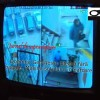

<!DOCTYPE html PUBLIC "-//W3C//DTD XHTML 1.0 Strict//EN" "http://www.w3.org/TR/xhtml1/DTD/xhtml1-strict.dtd">
<html xmlns="http://www.w3.org/1999/xhtml" dir="ltr" lang="en-US">
<head profile="http://gmpg.org/xfn/11">
<meta http-equiv="Content-Type" content="text/html; charset=UTF-8" />
<title>Supravegherea video la bloc: când e legală şi când e penală? » ACRU.ro</title>
<meta name="robots" content="noodp, noydir" />
<meta name="description" content="După ce am dezvăluit motivele pentru care supravegherea video la blocuri e periculoasă, au început să curgă întrebările: de e ilegal să montezi camere video pe scările şi în spaţiile comune ale blocurilor de locuinţe, iar la magazin se poate? Ce" />
<meta name="keywords" content="legislaţie, GDPR, drepturi, viaţă privată, monitorizare, video, bloc, proprietari, supraveghere, hol, scări, ilegal, camere" />
<link rel="stylesheet" href="../wp-content/themes/thesis_185/custom/layout.css" type="text/css" media="screen, projection" />
<!--[if lte IE 8]><link rel="stylesheet" href="https://acru.ro/wp-content/themes/thesis_185/lib/css/ie.css" type="text/css" media="screen, projection" /><![endif]-->
<link rel="stylesheet" href="../wp-content/themes/thesis_185/custom/custom.css" type="text/css" media="screen, projection" />
<link rel="shortcut icon" href="../wp-content/uploads/2022/03/favicon.ico" />
<link rel="canonical" href="index.html" />
<link rel="alternate" type="application/rss+xml" title="ACRU.ro RSS Feed" href="../feed/index.html" />
<link rel="pingback" href="https://acru.ro/xmlrpc.php" />
<link rel="EditURI" type="application/rsd+xml" title="RSD" href="https://acru.ro/xmlrpc.php?rsd" />
<meta http-equiv="content-language" content="ro" />
<meta name="copyright" content="© ACRU.ro" />
<div id="fb-root"></div>
<script async defer crossorigin="anonymous" src="https://connect.facebook.net/en_US/sdk.js#xfbml=1&version=v21.0"></script>
<link rel="alternate" type="application/rss+xml" title="ACRU.ro &raquo; Camerele video în viața privată Comments Feed" href="feed/index.html" />
	<link rel="stylesheet" href="../wp-content/plugins/shutter-reloaded-plus/shutter-reloaded.css" type="text/css" media="screen" />
	<style type='text/css'>
div#shNavBar {background-color:#e6dbb0;}
div#shNavBar {color:#000000;}
div#shShutter{background-color:#111111;opacity:0.94;filter:alpha(opacity=94);}
div#shDisplay div#shTitle {color:#e0fb22;}
</style>
	<script src="../wp-content/plugins/shutter-reloaded-plus/shutter-reloaded.js" type="text/javascript"></script>
	<script type="text/javascript">
	var shutterSettings = {"imgDir":"https:\/\/acru.ro\/wp-content\/plugins\/shutter-reloaded-plus\/\/menu\/","imageCount":true,"FS":false,"textBtns":false,"oneSet":true};
	try{shutterAddLoad( function(){shutterReloaded.init('sh');} );}catch(e){}	</script>
	

<!-- Facebook Like Thumbnail (v0.4) -->
<meta property="og:image" content="https://acru.ro/wp-content/uploads/2013/01/supravegheat-video.png" />
<!-- using featured thumbnail -->
<!-- Facebook Like Thumbnail (By Ashfame - https://github.com/ashfame/facebook-like-thumbnail) -->

</head>
<body class="custom">
<div id="container">
<div id="page">
<ul class="menu">
<li class="tab tab-home"><a href="../index.html" rel="nofollow">Hai Acasă</a></li>
<li class="tab tab-1"><a href="../despre/index.html" title="Despre ACRU">Despre</a></li>
<li class="tab tab-2"><a href="../seriale/index.html" title="Seriale » Acru cu premeditare">Seriale</a></li>
<li class="tab tab-3"><a href="../trafic/index.html" title="Analize şi statistici ">Evaluări</a></li>
<li class="tab tab-4"><a href="../politica-cookies/index.html" title="Politica privind fișierele de tip „cookie”">GDPR</a></li>
<li class="tab tab-5"><a href="../contact/index.html" title="Contact">Contact</a></li>
</ul>
	<div id="header">
<script async src="https://pagead2.googlesyndication.com/pagead/js/adsbygoogle.js?client=ca-pub-8625296282532852"
     crossorigin="anonymous"></script>		<p id="logo"><a href="../index.html">ACRU.ro</a></p>
		<p id="tagline">Adevăruri Crude Rostite cu Umor</p>
	</div>
	<div id="content_box">
		<div id="content" class="hfeed">

					<div class="prev_next post_nav">
						<p class="previous">« <a href="../emisia-otv/index.html" rel="prev">OTV n-a murit. Şi-a schimbat doar denumirea</a></p>
						<p>» <a href="../tema-elev-model/index.html" rel="next">Modele, valori, reuşită</a></p>
					</div>
			<div class="post-12760 post type-post status-publish format-standard hentry category-acru category-culise tag-bucuresti tag-oameni tag-progres tag-util post_box top" id="post-12760">
				<div class="headline_area">
<div class="my-bubble"><span>
<a title="Comentarii la Camerele video în viața privată" rel="nofollow"
href="index.html#comments">
202</a></span></div>					<h1 class="entry-title">Camerele video în viața privată</h1>
  <p class="headline_meta"><abbr class="published" title="2013-01-28 ">28 Ianuarie 2013 </abbr> </p>
				</div>
				<div class="format_text entry-content">
<p><a class="shutterset_12760" href="../wp-content/uploads/2012/02/supraveghere-video-bloc.jpg"></a>După ce am dezvăluit motivele pentru care <a title="Monitorizare video bloc locuinţe" href="../camere-video-bloc/index.html">supravegherea video la blocuri</a> e <strong>periculoasă</strong>, au început să <em>curgă</em> întrebările: de e <strong>ilegal</strong> să montezi camere video pe scările şi în spaţiile comune ale blocurilor de locuinţe, iar la magazin se poate? Ce legislaţie românească şi comunitară protejează <strong>viaţa privată</strong>, intimă şi familială? Cine are dreptul să te filmeze, în ce scop şi în ce condiţii? Cum se avizează <strong>monitorizarea video</strong> a unui <em>obiectiv</em> şi cum trebuie semnalizat acest fapt astfel încât sistemul de televiziune cu circuit închis (<em>CCTV</em>) să nu fie în afara legii? Este legal sa instalez o cameră video pe holul blocului sau într-o curte comună fără <strong>acordul explicit</strong> al <span style="text-decoration: underline;">tuturor locatarilor</span> (atenţie, nu doar al proprietarilor!)? Pot fi anulate drepturi fundamentale individuale prin voinţa unei majorităţi conjuncturale?</p>
<p>Astăzi, 28 ianuarie, de Ziua Europeană a protecţiei datelor personale, încercăm să răspundem majorităţii acestor întrebări în baza şi în spiritul reglementărilor legislative în vigoare.</p>
<h3>Monitorizarea video: legislaţie europeană şi naţională relevantă</h3>
<div id="attachment_12793" class="wp-caption alignleft" style="width: 110px"><a class="shutterset_12760" href="../wp-content/uploads/2013/01/drept-viata-privata.png"></a><p class="wp-caption-text">Ştiai că ai drepturi?</p></div>
<p>Utilizarea tehnicilor pentru captarea, manipularea, înregistrarea, stocarea şi comunicarea datelor constituite din <strong>imagini</strong> privind persoanele fizice reprezintă operaţiuni de prelucrare a datelor cu caracter <strong>personal</strong>, în conformitate cu <a title="Directiva europeană protecţie date personale" href="http://eur-lex.europa.eu/legal-content/RO/TXT/PDF/?uri=CELEX:31995L0046&#038;from=RO" target="_blank">Directiva 95/46/CE</a> (paragraful 14) a Parlamentului European, act corelat cu dispoziţiile <a title="Convenţia Europenă protecţie prelucrare date" href="https://rm.coe.int/1680078b37" target="_blank">Convenţiei nr. 108/1981</a> a Consiliului Europei. Aşadar, avem un prim element clarificat: prin sistemului de supraveghere sunt prelucrate date cu caracter personal. Imaginile cu persoane <strong>fizice identificabile</strong> sunt date cu caracter personal.</p>
<p>Dată fiind această realitate, înseamnă că <em>Big Brother</em> intră sub incidenţa <a title="Legislaţie camere monitorizare video" href="http://depabd.mai.gov.ro/677_2001.pdf" target="_blank">Legii 677 din 2001</a>, care are drept scop garantarea şi protejarea drepturilor şi libertăţilor fundamentale ale <strong>persoanelor fizice</strong>, în special a dreptului la viaţa intimă, familială şi privată, cu privire la prelucrarea datelor cu caracter personal.</p>
<p>De altfel, însăşi Legea Fundamentală (Constituţia României) impune autorităţilor să ocrotească viaţa intimă, familială şi <strong>privată</strong> (art. 26, alineatul 1).</p>
<h3>Acordul individual şi explicit e obligatoriu</h3>
<p><a class="shutterset_12760" href="../wp-content/uploads/2012/08/supraveghere-video.jpg"></a>În acest scop, Autoritatea Naţională de Supraveghere a Prelucrării Datelor cu Caracter Personal (ANSPDCP) a emis <a title="Decizie precrare date personale imagini" href="http://www.dataprotection.ro/servlet/ViewDocument?id=784" target="_blank">Decizia nr. 52</a> din 31 mai 2012 privind prelucrarea datelor cu caracter personal prin utilizarea mijloacelor de <strong>supraveghere video</strong>, publicată în Monitorul Oficial nr. 389 din 11 iunie 2012. La articolul 6 al actului normativ menţionat scrie fix aşa:</p>
<p class="alert">Prelucrarea datelor cu caracter personal prin utilizarea <strong>sistemelor de supraveghere video</strong> se efectuează numai cu <strong>consimţământul expres</strong> şi <strong>neechivoc</strong> al <strong>persoanei vizate</strong>.</p>
<p>cu excepţia cazurilor prevăzute de articolul 5, alineatul 2, din Legea nr. 677/2001. Adică exceptând situaţiile în care <strong>persoana fizică</strong> solicită încheierea unui contract (ex: cu <span style="text-decoration: underline;">angajatorul</span>), viaţa îi este pusă în pericol, în interesul public al autorităţilor, când operatorul e obligat prin lege să monteze camere video (ex: <span style="text-decoration: underline;">instituţiile bancare</span>) pentru un interes legitim,  în scopuri statistice sau de cercetare ştiinţifică, doar dacă datele sunt <strong>anonime</strong> pe toată durata prelucrării. Acestea sunt singurele excepţii de la <strong>obligativitatea obţinerii acordului</strong> scris al tuturor persoanelor vizate.</p>
<h3>E penală!</h3>
<div id="attachment_12795" class="wp-caption alignright" style="width: 110px"><a class="shutterset_12760" href="../wp-content/uploads/2013/01/supravegheat-video.png"></a><p class="wp-caption-text">Pictogramă</p></div>
<p>În cazul de faţă, fiindcă ne referim la un <em>condominiu</em>, e vorba despre <strong>acordul tuturor locatarilor persoane fizice</strong> identificate şi identificabile prin intermediul imaginilor colectate şi stocate. În caz contrar, monitorizarea video la blocuri şi în curţile comune e <strong>ilegală</strong>, iar operatorul (adică persoanele fizice, juridice de drept public ori privat care gestionează sistemul video) e pasibil de a suporta rigorile legii. Pe lângă sancţiunile civile şi administrative inerente, noul <strong>Cod Penal</strong> le-a dedicat <em>spionilor amatori</em> un articol special, doar al lor: 226.</p>
<p>După cum observaţi, legiuitorii stipulează condiţia posibilităţii identificării persoanei atunci când definesc restricţiile. Astfel, putem decela între camerele video dintr-un hipermarket (care monitorizează bunuri de valoare şi persoane <strong>anonime</strong>) şi <em>ochii electronici</em> din holul blocului, care filmează locatari cu <strong>identitate</strong> cunoscută în <em>dependinţele</em> propriilor locuinţe.</p>
<h3>De ce e inutil votul majorităţii? Limitele Legii 230/2007</h3>
<p>Dat fiind că dreptul la viaţă privată e unul <strong>fundamental</strong>, <strong>personal nepatrimonial</strong>, nu poate fi invocată voinţa majorităţii proprietarilor condominiului, aşa cum procedează anumiţi reprezentanţi ai Asociaţiilor de Proprietari pasionaţi de camere video şi înregistrări cu vecini. Deşi Legea nr. 230/2007 <em>spune</em> că hotărârile Adunării Generale a Asociaţiei de Proprietari, luate cu majoritatea voturilor, sunt obligatorii, ele nu pot aduce atingere <strong>drepturilor fundamentale</strong> şi <strong>nu pot încălca</strong> dispoziţii legale în vigoare. </p>
<p>Să presupunem că majoritatea proprietarilor ar hotărî că ţiganilor nu le este permis accesul în spaţiile comune şi ar vota în AGAP o decizie în acest sens. Ar fi legal? Sa spunem ca Adunarea Gererală ar decide ca intrarea în clădire să se poată face numai pe bază de amprentă digitală, ca să fie clar cine locuieşte mai mult de 15 zile în bloc şi trebuie trecut la plata cheltuielilor <em>pe persoana</em>. Ar fi legitim? Să zicem că majoritatea ar semna pentru interzicerea deţinerii animalelor de companie în apartamente. Şi această <em>trăsnaie</em> ar fi caducă.</p>
<p>Nu putem echivala încălcarea <a class="shutterset_12760" title="Supraveghere video fără accept " href="../wp-content/uploads/2013/01/supravegheat-video.png">dreptului la viaţa privată</a> cu obligaţia montării de <em>apometre</em>, spre exemplu. <em>Jurisdicţia</em> asociaţiilor de proprietari e <strong>limitată</strong> la chestiuni administrative care ţin de repartizarea costurilor şi întreţinerea clădirii, iar voinţa majorităţii nu poate anula drepturile fundamentale garantate <strong>individual</strong>. De altfel, Legea asociaţiilor de proprietari trasează clar <strong>limitele</strong> competenţei şi autonomiei persoanei juridice cu caracter nonprofit numită Asociaţie de Proprietari. Astfel, Asociaţia are drept scop legitim doar &#8220;administrarea şi gestionarea proprietăţii comune&#8221;, conform <a href="http://legeaz.net/legea-230-2007/art-4" title="Atribuţii Asociaţie de Proprietari" target="_blank">art. 4 alin. 1</a> din Legea nr. 230 din 2007. Ce înseamnă asta? Legal vorbind, înseamnă &#8220;activităţi de administrare <strong>tehnică</strong>, de <strong>contabilitate</strong> şi <strong>casierie</strong>&#8221; (<a href="http://legeaz.net/legea-230-2007/art-35" title="Cu ce se ocupă Asociaţia de Proprietari a blocului" target="_blank">articolul 35, alineatul 1</a>). Adică reparaţii, îmbunătăţiri, consolidări, curăţenie, împărţirea cheltuielilor, încasări şi plăţi. Atât şi nimic mai mult.   </p>
<p>În caz contrar, uşa abuzurilor e larg deschisă, până şi un tânăr IT-ist cuminte putând deveni <em>cuţitarul periculos</em> în mentalul colectiv. Aşa cum a păţit Cătălin Popescu: </p>
<p style="text-align: center;"><iframe src="http://www.youtube.com/embed/4TDAl2mEvuY?showinfo=0&amp;rel=0;&amp;iv_load_policy=3" frameborder="0" width="640" height="360"></iframe></p>
<p><em>Cătă Popescu</em> e personajul seriei de animaţie pe tema vieţii private, o iniţiativă a Asociației pentru Tehnologie și Internet (<a href="https://privacy.apti.ro/" title="ApTI: Date personale şi viaţă privată" target="_blank">ApTI</a>), a cărei campanie face parte din proiectul &#8220;<strong>Protecția vieții private este un drept fundamental</strong>&#8220;. Puteţi <a href="https://privacy.apti.ro/video-educationale-privacy/" title="ApTI: Video educaţionale dreptul la viaţă privată" target="_blank">urmări aici</a> toate episoadele seriei video &#8220;Datele personale în era digitală&#8221;. </p>
<p>Concluzinând: o minoritate oarecare nu poate fi prezumată a fi constituită din suspecţi şi infractori, astfel încât majoritatea să decidă, prin vot, <strong>restrângerea</strong> drepturilor şi libertăţilor individuale ale celorlalţi colocatari legitimi, fie ei proprietari sau chiriaşi.</p>
<h3>Infracţiunea de violare a vieţii private (noul Cod Penal)</h3>
<p><a class="shutterset_12760" href="../wp-content/uploads/2013/01/video-asociatie-locatari.jpg"></a>Articolul <a title="Camerele video la bloc în Codul Penal" href="http://legeaz.net/noul-cod-penal/art-226" target="_blank">226 al Legii 286 din 2009</a> extinde în sfera penalului răspunderea celor care cred că îşi pot filma vecinii în voie, cu <em>mandat</em> de la majoritate. Astfel, atingerea adusă vieţii private, fără drept, prin fotografierea, captarea sau înregistrarea de <strong>imagini</strong>, ascultarea cu mijloace tehnice sau înregistrarea audio a unei persoane aflate într-o locuinţă sau <strong>încăpere</strong> ori <strong>dependinţă</strong> ţinând de aceasta reprezintă <strong>infracţiune</strong>. Notăm că viaţa privată nu se opreşte odată trecut de <strong>uşa</strong> apartamentului, iar efectele juridice sunt extinse la toate <em>spaţiile indivize</em>: holurile locuinţei, căi de acces comune, scări, lifturi, subsoluri, boxe, ghene, culoare, poduri, terase etc.</p>
<h3>Ai acces la înregistrări, te poţi opune şi poţi cere daune</h3>
<p>Aşa cum am arătat, supravegherea video la bloc <strong>fără acordul tuturor</strong> persoanelor identificabile e <strong>nelegală</strong>. Ce se întâmplă însă dacă <strong>toţi locatarii</strong> unui imobil de locuinţe (inclusiv minorii, prin acordul expres al reprezentantului legal) sunt de acord cu montarea unui dispozitiv de supraveghere centralizat? Legea 677/2001 ne lămureşte în privinţa drepturilor pe care cei filmaţi şi înregistraţi <strong>continuă</strong> să la aibă şi după exprimarea neechivocă a voinţei de a fi monitorizaţi. Acestea sunt:</p>
<ul>
<li>Dreptul de <strong>acces la date</strong> (<a title="Drept acces imagini supraveghere video" href="http://legeaz.net/legea-677-2002-date-caracter-personal/art-13-drepturile-persoanei-vizate-in-contextul-prelucrarii-datelor-cu-caracter-personal" target="_blank">articolul 13</a>). La exercitarea sa, operatorul e obligat să furnizeze toate informaţiile solicitate. Fiind vorba despre un drept garantat, nu-i nevoie să existe o justificare pentru care doreşti să vizionezi imaginile cu tine şi vecinii tăi. Sau cu ora la care s-a întors soţul/soţia, cine ştie?;</li>
<li>Dreptul de <strong>intervenţie asupra datelor</strong> (<a title="Drept individual acces imagini monitorizare video" href="http://legeaz.net/legea-677-2002-date-caracter-personal/art-14-drepturile-persoanei-vizate-in-contextul-prelucrarii-datelor-cu-caracter-personal" target="_blank">articolul 14</a>). Poţi cere (în mod gratuit) rectificarea, blocarea sau <strong>ştergerea</strong> imaginilor colectate, dacă ţi se par a nu fi în concordanţă cu legea sau inexacte. Spre exemplu, dacă te răzgândeşti în privinţa disponibilităţii de a-ţi fi supravegheaţi copiii, prelucrarea devine ilegală;</li>
<li>Dreptul de <strong>opoziţie</strong> (<a title="Dreptul de a te opune monitorizării video" href="http://legeaz.net/legea-677-2002-date-caracter-personal/art-15-drepturile-persoanei-vizate-in-contextul-prelucrarii-datelor-cu-caracter-personal" target="_blank">articolul 15</a>). Cităm întocmai: &#8220;Persoana vizată are dreptul de a se opune <strong>în orice moment</strong>, din motive întemeiate şi legitime legate de situaţia sa particulară, ca date care o vizează să facă obiectul unei prelucrări&#8221;. Evident, cu excepţia cazurilor în care legea statuează altfel. Adică nu te poţi opune la a fi filmat de procurori când iei şpagă, nici nu poţi reclama o bancă pentru că are supraveghere video;</li>
<li>Dreptul de a se <strong>adresa justiţiei</strong> şi Autorităţii de supraveghere. Cererea de chemare în judecată e <strong>scutită de taxă</strong> de timbru. Dacă în ciuda demersurilor efectuate, o entitate se ambiţionează să te filmeze fără acordul tău, poţi obţine restabilirea dreptului la viaţă privată şi nişte daune compensatorii, pe cale judecătorească.</li>
</ul>
<h3>ANSPDCP, justiţia, plângerea penală şi instituţiile europene</h3>
<h3>(actualizare)</h3>
<p><a class="shutterset_12760" href="../wp-content/uploads/2013/01/justitie-viata-privata.jpg"></a>Dacă vă e încălcat oricare dintre  aceste drepturi, vă puteţi adresa Autorităţii Naţionale de Supraveghere a Prelucrării Datelor cu Caracter Personal (ANSPDCP). Însă, fiind vorba despre o instituţie a statului român <strong>subfinanţată</strong> în asemenea măsură încât a ajuns să-şi <a title="ANSPDCP plânge după sediu" href="http://www.dataprotection.ro/?page=Comunicat_de_presa_rezultate_demersuri_sediu_ANSPDCP&amp;lang=ro" target="_blank">plângă public de milă</a> din cauza lipsei unui sediu adecvat, nu-i exclus să aveţi surprize neplăcute. Oamenii Autorităţii nu-s câtuşi de puţin motivaţi să-şi facă treaba în afară de a aplica sancţiuni contravenţionale modice, iar <strong>interesele</strong> <a title="Firme pază monitorizare video" href="https://evz.ro/bodyguarzii-infractori-sub-acoperire-810069.html" target="_blank">firmelor de pază şi alarmare</a> sunt uriaşe. E vorba despre o piaţă de ordinul zecilor de mii de contracte potenţiale. Dacă trăiţi în România, înţelegeţi despre ce-i vorba şi bănuiţi de ce unele decizii ale ANSPDCP pot fi <em>stranii</em>. De exemplu, o <em>cerere cu dop</em> bine plasată poate înlocui sancţiunea amenzii cu cea a avertismentului chiar în cele mai flagrante şi repetate cazuri de încălcare a Legii 677/2001, precum prelucrarea de date personale constituite din imagini fără notificarea Autorităţii de reglementare, fără consimţământ unanim expres şi neechivoc şi fără informarea persoanelor vizate cu privire la drepturile garantate de lege. </p>
<p>Pentru ca <em>buna înţelegere</em> dintre numeroşi operatori contravenienţi şi Serviciul Investigaţii al Autorităţii să nu atragă suspiciunea <em>băgăcioşilor</em> de la DNA, ANSPDCP obişnuieşte să sancţioneze drastic, din timp în timp, câte o companie de renume. Operatorii de telefonie Orange (<a href="http://www.economica.net/orange-romania-sanctionata-contraventional-de-anspdcp-cu-10-000-de-lei_90880.html" title="Amendă 10.000 lei Orange" target="_blank">exemplu</a>) şi Vodafone (<a href="http://www.ziare.com/afaceri/firma/vodafone-amendata-cu-7-000-de-lei-pentru-spam-pe-mobil-683675" title="Amendă 70.000 Vodafone" target="_blank">exemplu</a>) sunt printre clienţii preferaţi, datorită notorietăţii. <strong>Exerciţiile de imagine</strong> sunt însoţite de comunicate publicate pe site-ul instituţiei, prin intermediul cărora aflăm cât de <em>necruţători</em> sunt funcţionarii Autorităţii în aplicarea legii. În tot acest timp, zeci de petenţi pleacă scârbiţi din Bd. Magheru 28-30 (sediul ANSPDCP), constatând că drepturilor lor există doar pe hârtie, după cum puteţi vedea şi în comentariile acestui articol. </p>
<p>Însă, din fericire, sub presiunea instituţiilor europene, dreptul la viaţă privată, intimă şi familială nu va mai fi privit ca un moft pe care orice pensionar cu <a class="shutterset_12760" title="Securist la bloc" href="../wp-content/uploads/2012/08/camera-video-bloc-ilegal.png">veleităţi de securist</a> îl poate călca în picioare în numele unei majorităţi oarecare. Odată cu intrarea în vigoare a noului Cod Penal, după 1 februarie 2014, vor <em>da cu subsemnatul</em> pe la Parchet destui reprezentanţi legali ai asociaţiilor de proprietari şi ai firmelor de securitate. Evident, doar dacă vecinii lor au aflat că sunt cetăţeni europeni şi au <em>oareşce</em> drepturi <strong>individuale</strong>.</p>
<h2>PSD numeşte politic un nou şef la ANSPDCP</h2>
<h3>(actualizare)</h3>
<div id="attachment_14752" class="wp-caption alignright" style="width: 110px"><a class="shutterset_12760" href="../wp-content/uploads/2013/01/Anca-Opre-ANSPDCP.jpg"></a><p class="wp-caption-text">Anca Gianina Opre</p></div>
<p>După şase ani în care a condus Autoritatea Naţională de Supraveghere a Prelucrării Datelor cu Caracter Personal, Georgeta Basarabescu a fost înlăturată din funcţie la sfârşitul lunii iunie 2013. În mod formal, debarcarea s-a produs ca urmare a unei plângeri înaintate Senatului de către vicepreşedintele ANSPDCP, fostul deputat PDSR de Brăila, Florin Negoiţă, cu care Basarabescu se afla în <strong>conflict</strong> deschis de mai multă vreme. În realitate, schimbarea e un <a href="http://www.conso.ro/banii-economia/protectia-datelor-personale-a-incaput-pe-mana-unei-propagandiste-politice" title="CONSO: Protectia datelor personale a incaput pe mana unei propagandiste politice" target="_blank">troc politic</a>. </p>
<p>Din 26 iunie 2013, <strong>Ancuţa Gianina Opre</strong> (foto) e noua şefă a ANSPDCP. Cunoscută drept <em>sexy consiliera</em> lui Geoană, Anca Opre e protejata aripii PSD Marean Vanghelie &#8211; Mircea Geoană, calitate din care s-a remarcat printr-o <a href="https://web.archive.org/web/20180521062046/http://www.giurgiu-news.ro/OPREA--Mi;I--ANCA-OPRE-!-1227/pagina-0" title="Ancuţa Opre campanie electorală Giurgiu" target="_blank">activitate politică intensă</a>, marcată de peripeţii şi nopţi nedormite, după cum informează presa locală. Înainte de prelua şefia Autorităţii de Supraveghere, <strong>Ancuţa Opre</strong> a mai condus Autoritatea Naţională pentru Restituirea Proprietăţilor (<strong>ANRP</strong>). Din aceeaşi <em>companie selectă</em> fac parte Crinuţa Dumitrean şi Alina Bica, ambele arestate preventiv în dosare celebre, cu prejudicii de zeci de milioane de Euro, dar şi Remus Baciu, vicepreşedinte ANRP, condamnat definitiv la închisoare cu executare pentru corupţie.   </p>
<h2>GDPR și supravegherea video</h2>
<h3>(actualizare)</h3>
<p>Începând din 25 mai 2018 a intrat în vigoare automat <a href="https://www.dataprotection.ro/servlet/ViewDocument?id=1262" title="GDPR 679/2016" target="_blank">Regulamentul</a> european general privind protecția datelor (GDPR/RGPD), cunoscut și ca Regulamentul (UE) 2016/679.</p>
<p>Ca și până acum, Regulamentul nu se aplică celor care își limitează supravegherea la proprietățile private, colectând imagini pentru <strong>uz strict personal, fără a le dezvălui</strong>. Cei care operează camere video și supraveghează (<strong>chiar dacă parțial și fără intenție</strong>) spații publice (parcări, spre exemplu), spații comune (precum sunt scările de bloc) sau alte proprietăți private (cum ar fi cele ale vecinilor) intră sub incidența GDPR/RGPD și trebuie să-i <a href="https://edpb.europa.eu/sites/edpb/files/consultation/edpb_guidelines_201903_videosurveillance.pdf" title="GDPR  prelucrarea datelor personale prin intermediul camerelor video" target="_blank">respecte prevederile</a>.</p>
<p>Regulamentul (UE) 2016/679 este o normă europeană aplicabilă în toate statele membre, care impune reguli comune pentru prelucrarea și protejarea datelor personale. Totodată, acesta prevede și amenzi usturătoare, de până la 20 de milioane de euro, pentru prelucrarea ilegală a datelor personale sau nerespectarea <a href="https://www.dataprotection.ro/servlet/ViewDocument?id=1298" title="Drepturi prevăzute de GDPR" target="_blank">drepturilor</a> persoanelor vizate.</p>
<h5>Citeşte şi<strong>  <a title="Supraveghere video bloc: riscuri şi pericole" href="../camere-video-bloc/index.html">De unde au ştiut hoţii sau escrocii că eşti plecat de acasă</a></strong></h5>
<p>&nbsp;</p>
<pre>Articol dedicat Zilei Europene a Protecţiei Datelor cu caracter personal: 28 ianuarie.</pre>
<p class="note">Pe 28 Ianuarie 1981, la Strasbourg, a fost adoptată Convenţia nr. 108 pentru protecţia persoanelor cu privire la prelucrarea automată a datelor cu caracter personal. Acest prim act normativ era menit să asigure protecţia vieţii private a persoanelor fizice şi defineşte o serie de principii universale în raporturile dintre individ şi entităţile publice şi private.</p>
<p class="post_tags"><strong>Etichete: </strong><a href="../tag/bucuresti/index.html" rel="tag">București</a>, <a href="../tag/oameni/index.html" rel="tag">oameni</a>, <a href="../tag/progres/index.html" rel="tag">progres</a>, <a href="../tag/util/index.html" rel="tag">util</a></p>        <div class="fb-share-button" 
             data-href="https://acru.ro/camere-supraveghere-legi/" 
             data-layout="button">
        </div>
    <div class="fb_like">
		<iframe src="http://www.facebook.com/plugins/like.php?href=https%3A%2F%2Facru.ro%2Fcamere-supraveghere-legi%2F&amp;layout=button_count&amp;show_faces=false&amp;width=99&amp;action=like&amp;colorscheme=light" scrolling="no" frameborder="0" allowTransparency="true" style="border:none; overflow:hidden; width:99px; height:21px;"></iframe>
</div>
<div class="tweet-button">
	<a href="https://twitter.com/share" class="twitter-share-button" data-count="none" data-via="AcruRo">Tweet</a><script type="text/javascript" src="https://platform.twitter.com/widgets.js"></script>
</div><!--end tweet-button-->
<div id="related_posts" class="clear"><h4>Articole similare:</h4><ul><li>
	<a href="../slogan-iordanescu/index.html" rel="bookmark" title="15 sloganuri pentru Anghel Iordănescu">
			</a>
	<div class="related_content">
		<a href="../slogan-iordanescu/index.html" rel="bookmark" title="15 sloganuri pentru Anghel Iordănescu">15 sloganuri pentru Anghel Iordănescu</a>
	</div>
</li>
<li>
	<a href="../petre-ilie/index.html" rel="bookmark" title="Şpăgar, nu bişniţar">
			</a>
	<div class="related_content">
		<a href="../petre-ilie/index.html" rel="bookmark" title="Şpăgar, nu bişniţar">Şpăgar, nu bişniţar</a>
	</div>
</li>
<li>
	<a href="../ghid-mame-fete/index.html" rel="bookmark" title="Piţipoancă în 6 paşi. Ghid pentru mame">
			</a>
	<div class="related_content">
		<a href="../ghid-mame-fete/index.html" rel="bookmark" title="Piţipoancă în 6 paşi. Ghid pentru mame">Piţipoancă în 6 paşi. Ghid pentru mame</a>
	</div>
</li>
<li>
	<a href="../nesimtit-trafic-tarani/index.html" rel="bookmark" title="Nesimţit în trafic? Fă-l de râs">
			</a>
	<div class="related_content">
		<a href="../nesimtit-trafic-tarani/index.html" rel="bookmark" title="Nesimţit în trafic? Fă-l de râs">Nesimţit în trafic? Fă-l de râs</a>
	</div>
</li>
<li>
	<a href="../solutie-cutremur/index.html" rel="bookmark" title="F-16, soluția anti-cutremur">
			</a>
	<div class="related_content">
		<a href="../solutie-cutremur/index.html" rel="bookmark" title="F-16, soluția anti-cutremur">F-16, soluția anti-cutremur</a>
	</div>
</li>
</ul></div>				</div>
			</div>

			<div id="comments">
				<dl id="comment_list">
					<dt class="comment even thread-even depth-1" id="comment-3782">
<span class="avatar"><a href="http://www.aripileluirafael.blogspot.com" rel="nofollow"></a></span>
<span class="comment_num"><a href="index.html#comment-3782" title="Permalink to this comment" rel="nofollow">1</a></span>
<span class="comment_author"><a href='http://www.aripileluirafael.blogspot.com' rel='external nofollow' class='url'>Raphaelly</a></span>
<span class="comment_time">28 Ianuarie 2013 @ 11:49</span>
					</dt>
					<dd class="comment even thread-even depth-1">
<div class="format_text" id="comment-body-3782">
<p>Va multumesc pentru articol, este deosebit de folositor, in special pentru toti cei care doresc sa isi apere drepturile fundamentale. Poate ar trebui sa ne dam seama cu totii ca, renuntarea fara lupta legala la un drept atat de important cum este viata privata, si prelucrarea datelor cu caracater personal fara consimtamant, nu va conduce decat la incalcarea repetata a celorlalte drepturi fundamentale garantate, in favoarea unui FALS sentiment de siguranta (codul penal nu accepta probe video, audio ca probe ).</p>
<p> Este deosebit de grav si nu trebuiesc trecute cu vederea astfel de incalcari. Aveti cumva idee cine supravegheaza din UE functionarea corecta a ANSPDCP, in cazul in care nici acestia nu sunt f dispusi sa faca dreptate? Inafara de mersul in justitie in Romanica noastra minunata?</p>
</div>
					</dd>
					<dt class="comment odd alt thread-odd thread-alt depth-1" id="comment-4504">
<span class="avatar"><a href="http://www.aripileluirafael.blogspot.com" rel="nofollow"></a></span>
<span class="comment_num"><a href="index.html#comment-4504" title="Permalink to this comment" rel="nofollow">2</a></span>
<span class="comment_author"><a href='http://www.aripileluirafael.blogspot.com' rel='external nofollow' class='url'>Raphaelly</a></span>
<span class="comment_time">22 Martie 2013 @ 0:01</span>
					</dt>
					<dd class="comment odd alt thread-odd thread-alt depth-1">
<div class="format_text" id="comment-body-4504">
<p>intrebarea este: este retroactiva legea penala? se va specifica asta in noul cod de procedura penala?</p>
</div>
					</dd>
					<dt class="comment byuser comment-author-admin bypostauthor even thread-even depth-1" id="comment-4524">
<span class="avatar"><a href="../index.html" rel="nofollow"></a></span>
<span class="comment_num"><a href="index.html#comment-4524" title="Permalink to this comment" rel="nofollow">3</a></span>
<span class="comment_author"><a href='../index.html' rel='external nofollow' class='url'>Acru</a></span>
<span class="comment_time">22 Martie 2013 @ 18:19</span>
					</dt>
					<dd class="comment byuser comment-author-admin bypostauthor even thread-even depth-1">
<div class="format_text" id="comment-body-4524">
<p>@Raphaelly(2), dacă în Noul Cod Penal fumatul ar deveni interzis, iar Gică ar continua să <em>pufăie ca turcii</em>, crezi că l-ar <em>sălta</em>? Desigur, dacă s-ar lăsa fix cu o zi înainte de data intrării în vigoare a legii, atunci ar putea fi socotit nevinovat, cu condiţia să nu-i fie imputabile alte abateri în vigoare. </p>
<p>Răspunsul ţine de <strong>caracterul infracţiunii</strong>. Dacă e continuă permanentă, spionul amator plăteşte. Cu detenţie sau cu bani.</p>
</div>
					</dd>
					<dt class="comment odd alt thread-odd thread-alt depth-1" id="comment-4687">
<span class="avatar"></span>
<span class="comment_num"><a href="index.html#comment-4687" title="Permalink to this comment" rel="nofollow">4</a></span>
<span class="comment_author">dumitrache adrian</span>
<span class="comment_time">15 Aprilie 2013 @ 13:40</span>
					</dt>
					<dd class="comment odd alt thread-odd thread-alt depth-1">
<div class="format_text" id="comment-body-4687">
<p>va rog frumos din tot sufletul cer ajutor cu privire la montatul camerei de filmat in scara blocului.am intrebat presedintele si administratorul de bloc cine a montat  camera de filmat in scara blocului fara aprobarea mea scrisa sau verbala,raspunsul pres. si admi.a fost urmatorul, dute si intreaba la politie am fostla politie si din acel moment nici nu va imaginati ce am patit.intre timp presedinta  si administratorul de bloc au facut doua reclamatii la politie care sau transformat in doua dosare penale.adica distrugere de material informativ se incadreaza de la unu sau doi ani puscarie.este mult de povestit,inf.contra cost.mutumesc mult.nu stiu cit de real este acest material informativ nu lucrez in acest domeniu legislativ.nr.tel,072133[n.r. cenzurat pentru protejarea identităţii] adrian.ajutor/////,&#8230;</p>
</div>
					</dd>
					<dt class="comment byuser comment-author-admin bypostauthor even thread-even depth-1" id="comment-4689">
<span class="avatar"><a href="../index.html" rel="nofollow"></a></span>
<span class="comment_num"><a href="index.html#comment-4689" title="Permalink to this comment" rel="nofollow">5</a></span>
<span class="comment_author"><a href='../index.html' rel='external nofollow' class='url'>Acru</a></span>
<span class="comment_time">15 Aprilie 2013 @ 18:42</span>
					</dt>
					<dd class="comment byuser comment-author-admin bypostauthor even thread-even depth-1">
<div class="format_text" id="comment-body-4689">
<p>@dumitrache adrian, păi cum aţi <em>întrebat</em> despre camerele de filmat, cu ciocanul? Chiar şi aşa, n-aţi avut o şapcă, o umbrelă, măcar <a href="../wp-content/uploads/2012/02/camera-video-fentat.jpg" rel="nofollow">un balon</a>? </p>
<p><strong>Nu există</strong> infracţiunea de &#8220;distrugere de material informativ&#8221;. Mizeriile alea de camere video sunt nişte <strong>bunuri</strong> ca oricare altele, nu au regim special. Dacă le avariaţi şi chestia asta poate fi <strong>probată</strong> în faţa unei instanţe de judecată, iar dosarul ajunge în faza procesuală, atunci fapta se încadrează la Distrugere &#8211; forma simplă &#8211; art.217 Cod penal. Cel mai probabil, sentinţa va fi o amendă.</p>
</div>
					</dd>
					<dt class="comment odd alt thread-odd thread-alt depth-1" id="comment-5358">
<span class="avatar"></span>
<span class="comment_num"><a href="index.html#comment-5358" title="Permalink to this comment" rel="nofollow">6</a></span>
<span class="comment_author">cristi mxm</span>
<span class="comment_time">7 Iulie 2013 @ 15:44</span>
					</dt>
					<dd class="comment odd alt thread-odd thread-alt depth-1">
<div class="format_text" id="comment-body-5358">
<p>Buna ziua tuturor! In speranta gasirii unei solutii<br />
In fapt,<br />
In septembrie 2009 vecinul cu care impart un imobil compus din 2 apartamente (p+1) si o curte comuna, a montat un sistem de supraveghere video fara acordul meu. in fine&#8230;am apelat 112, a venit politia, l-a dat jos.<br />
La aproximativ 3-4 zile de la cele intamplate, ma trezesc cu cu echipa formata din 10-14 indivizi &#8211; barbati bine &#8211; de la o recunoscuta firma de paza si protectie din bucuresti patrunzind in curtea imobilului si fara acordul surorii mele(eu nefiind acasa),folosind forta bruta, s-au pus pe montat. Sora mea a apelat serviciul de urgenta 112, a venit politia, a constatat si a plecat lasindu-i sa-si definitiveze opera spunindu-i ca cei de la etaj au contract cu firma si n-au ce face..<br />
Mmm?!?!<br />
Domnilor??!!<br />
Mentionez ca in imobil sunt numai 2 familii, a mea regasindu-se la parter, terenul (curtea) este in proprietatea mea iar cei de la etaj au numai dreptul de folosinta(nu stiu daca-i relevant).<br />
Ma adresez celor care sunt in cunostinta de cauza, in speranta unei acctiuni cat mai eficiente in a indeparta sistemul de supraveghere video.<br />
Cu multumiri anticipate !!!!!!</p>
</div>
					</dd>
					<dt class="comment byuser comment-author-admin bypostauthor even thread-even depth-1" id="comment-5362">
<span class="avatar"><a href="../index.html" rel="nofollow"></a></span>
<span class="comment_num"><a href="index.html#comment-5362" title="Permalink to this comment" rel="nofollow">7</a></span>
<span class="comment_author"><a href='../index.html' rel='external nofollow' class='url'>Acru</a></span>
<span class="comment_time">8 Iulie 2013 @ 0:11</span>
					</dt>
					<dd class="comment byuser comment-author-admin bypostauthor even thread-even depth-1">
<div class="format_text" id="comment-body-5362">
<p>@cristi mxm(6), tocmai ne-aţi exemplificat <strong>puterea şpăgii</strong>. Avem aceeaşi speţă, aceeaşi proprietate, aceeaşi acţiune în teren, aceleaşi implicaţii juridice. Totuşi, <strong>aceeaşi poliţie</strong> ia două măsuri diametral opuse la 3-4 zile distanţă! Care ar putea fi <em>motivaţia</em>?!</p>
<p>Întrebare: ce filmează sistemul de supraveghere video? La cum aţi descris situaţia juridică a proprietăţii, singura variantă în monitorizarea să fie făcută legal e aceea în care camerele video vizualizează <strong>exclusiv</strong> ferestrele de la etajul 1 şi interiorul aceluiaşi nivel.</p>
</div>
					</dd>
					<dt class="comment odd alt thread-odd thread-alt depth-1" id="comment-5367">
<span class="avatar"></span>
<span class="comment_num"><a href="index.html#comment-5367" title="Permalink to this comment" rel="nofollow">8</a></span>
<span class="comment_author">cristi mxm</span>
<span class="comment_time">8 Iulie 2013 @ 11:16</span>
					</dt>
					<dd class="comment odd alt thread-odd thread-alt depth-1">
<div class="format_text" id="comment-body-5367">
<p>Pozitia lor este la et. 1 si filmeaza exact intrarile in ap. meu. Deci, de sus in jos..in niciun caz ferestrele lui.<br />
Va dati seama cum ma simt&#8230;cum ridic privirea, dau cu ochii de o camera indiferent pe unde sunt prin curte&#8230;<br />
Oricum, am facut diligentele necesare prin notificare catre soc. care le-a montat si catre ei, in conformitate cu ce am citit pe ACRU.ro.   . Mai astept 10-15 zile dupa care ma gandesc unde sa fac intimpinarea..catre autoritatea de supraveghere, sau direct in justitie?!<br />
Aici o sa am nevoie de sfatul d-vs eventual in a ma indruma catre un avocat specializat pe asemenea speta (?).<br />
cu stima,<br />
Cristi.</p>
</div>
					</dd>
					<dt class="comment byuser comment-author-admin bypostauthor even thread-even depth-1" id="comment-5373">
<span class="avatar"><a href="../index.html" rel="nofollow"></a></span>
<span class="comment_num"><a href="index.html#comment-5373" title="Permalink to this comment" rel="nofollow">9</a></span>
<span class="comment_author"><a href='../index.html' rel='external nofollow' class='url'>Acru</a></span>
<span class="comment_time">8 Iulie 2013 @ 23:29</span>
					</dt>
					<dd class="comment byuser comment-author-admin bypostauthor even thread-even depth-1">
<div class="format_text" id="comment-body-5373">
<p>@cristi mxm(8), e posibil ca respectivele camere să fie false sau să nu fie conectate la un sistem de înregistrare şi stocare a imaginilor? Parcă e prea mare tupeul vecinului dvs! </p>
<p>Cum scriam mai sus: nimeni nu are voie să vă prelucreze datele cu caracter personal prin sisteme de supraveghere video fără să fi obţinut de la dvs. <strong>consimţământul expres şi neechivoc</strong>, mai ales în zona proprietăţii private, fie ea şi coproprietate forţată şi perpetuă. </p>
<blockquote><p>&#8220;unde sa fac intimpinarea..catre autoritatea de supraveghere, sau direct in justitie?!&#8221;</p></blockquote>
<p>Primul pas l-aţi făcut. Dacă răspunsul operatorului nu vă respectă drepturile legale, urmează să vă adresaţi cu plâgere ANSPDCP, cu dovada parcurgerii procedurii prealabile. </p>
<p>Însă, în locul dvs., nu m-aş complica. Fiind vorba despre o casă la curte, speţa e mai simplă. Dacă vecinul a tocmit o firmă ca să vă spioneze, angajaţi şi dvs. o firmă ca să vă monteze o copertină fix sub camerele de la etaj. Ce-o să facă, o să <em>sune la 112</em>?   Le arătaţi poliţiştilor contractul cu firma, <strong>întocmai</strong> cum a procedat şi securistul amator de la etajul 1. Sau umflaţi şi <a href="../wp-content/uploads/2012/02/camera-video-fentat.jpg" rel="nofollow">înălţaţi un balon</a> când vreţi să vă tihnească plimbarea prin propria curte.</p>
</div>
					</dd>
					<dt class="comment odd alt thread-odd thread-alt depth-1" id="comment-5379">
<span class="avatar"></span>
<span class="comment_num"><a href="index.html#comment-5379" title="Permalink to this comment" rel="nofollow">10</a></span>
<span class="comment_author">cristi mxm</span>
<span class="comment_time">9 Iulie 2013 @ 12:18</span>
					</dt>
					<dd class="comment odd alt thread-odd thread-alt depth-1">
<div class="format_text" id="comment-body-5379">
<p>1.Nu sunt false deoarece atunci cind se deschide poarta, se aud pasi fuguta-fuguta catre monitoare. In ceeace priveste tupeul, nu-ti face iluzii&#8230;tovarasul este fost sifon si fost secretar de partid&#8230;actualmente este expert juridic pe listele judecatoriei sect.1 (la 85 de ani).<br />
2.Primul pas l-am facut. Dar,dar, daca urmarea plingerii catre ANSPDCP, primesc un raspuns stramb ce are urmari nefaste apoi in justitie? Raman cu taraboiul si cu camerele pe pereti si mai dau si vreo dijma astuia de sus? eh..ma mai gandesc..<br />
3.Chestia cu copertina dar si cu o antena parabolica luata din obor mi-a sugerat-o chiar sectoristul   dar asta nu rezolva problema de fond. Si apoi ce sa fac?! Sa cumpar 3 antene,3 copertine si sa ies cu balonul pe strada in dreptul intrarii in curte? Pt. ca, 2 sunt montate in curte in V &#8211; ma rog cu orientarea catre jos &#8211; iar ce-a de-a 3-a este montata pe peretele din strada cu orientarea spre poarta de acces in imobil.<br />
Multumesc pt. promtitudinea raspunsului !<br />
Cristi</p>
</div>
					</dd>
					<dt class="comment byuser comment-author-admin bypostauthor even thread-even depth-1" id="comment-5383">
<span class="avatar"><a href="../index.html" rel="nofollow"></a></span>
<span class="comment_num"><a href="index.html#comment-5383" title="Permalink to this comment" rel="nofollow">11</a></span>
<span class="comment_author"><a href='../index.html' rel='external nofollow' class='url'>Acru</a></span>
<span class="comment_time">9 Iulie 2013 @ 18:04</span>
					</dt>
					<dd class="comment byuser comment-author-admin bypostauthor even thread-even depth-1">
<div class="format_text" id="comment-body-5383">
<p>@cristi mxm(10)<br />
1. Noi vă credem că nu sunt false, dar am emis ipoteza ca să vă pregătim şi pentru o astfel de abordare. Confruntat cu un control, spionul amator ar putea susţine că a instalat doar nişte beculeţe ornamentale ca să sperie copiii amatori de corcoduşe. </p>
<p>2. Absolut nicio urmare nefastă pt. dvs. Demersul către Autoritate e o chestiune <strong>administrativă</strong>. Dacă soluţia ANSPDCP e ineficientă, o puteţi ataca în contencios la Avocatul Poporului sau/şi în instanţa competentă de contencios administrativ. </p>
<p>Pe de altă parte, acţiunea <strong>civilă</strong> în justiţie e un demers la care aveţi dreptul, <strong>indiferent</strong> de reacţia autorităţilor, (inclusiv) conform <a href="http://legeaz.net/legea-677-2002-date-caracter-personal/art-18-drepturile-persoanei-vizate-in-contextul-prelucrarii-datelor-cu-caracter-personal" rel="nofollow">Art. 18</a> din Legea nr. 677 /2001. </p>
<p>În fine, atunci când noul cod penal va intra în vigoare, n-ar fi rău să-i faceţi securistului şi o <strong>plângere penală</strong> pentru violarea vieţii private, aspect regelementat de art. 226 din Legea nr. 286/2009 astfel: </p>
<blockquote><p>(1) Atingerea adusă vieţii private, fără drept, prin fotografierea, <strong>captarea</strong> sau <strong>înregistrarea de imagini</strong>, ascultarea cu mijloace tehnice sau înregistrarea audio a unei persoane aflate într-o locuinţă sau încăpere ori <strong><u>dependinţă ţinând de aceasta</u></strong> [...] se pedepseşte cu închisoare de la o lună la 6 luni sau cu amendă [...]<br />
(5) Plasarea, fără drept, de mijloace tehnice de înregistrare audio sau video, în scopul săvârşirii faptelor prevăzute în alin. (1) se pedepseşte cu închisoarea de la 1 la 5 ani.</p></blockquote>
<p>3. În loc să-şi facă datoria pentru care e plătit, sectoristul v-a dat sfaturi. Tipic. E drept, ideile sunt bune, dar poliţistul respectiv nu-i angajat ca să aibă imaginaţie.</p>
</div>
					</dd>
					<dt class="comment odd alt thread-odd thread-alt depth-1" id="comment-5390">
<span class="avatar"></span>
<span class="comment_num"><a href="index.html#comment-5390" title="Permalink to this comment" rel="nofollow">12</a></span>
<span class="comment_author">cristi mxm</span>
<span class="comment_time">11 Iulie 2013 @ 17:06</span>
					</dt>
					<dd class="comment odd alt thread-odd thread-alt depth-1">
<div class="format_text" id="comment-body-5390">
<p>art. 226 din Legea nr. 286/2009 din ce- vazut, parca-i valabila din 2014 ian.<br />
oricum am facut referire la el in notificare&#8230;sa nu zica ca n-a stiut.<br />
daca depun cererea in justitie acum, am termen in ian. feb.<br />
dar nu-I mai bine sa fac eu o vizita la ANSPDCP in audienta la d-ra Opre?! ce ma costa !?<br />
incerc sa ma programez zilele astea si va tin la current. tare-s curios sa vad ce-o duce zice&#8230;&#8230;..:)</p>
</div>
					</dd>
					<dt class="comment even thread-even depth-1" id="comment-5393">
<span class="avatar"></span>
<span class="comment_num"><a href="index.html#comment-5393" title="Permalink to this comment" rel="nofollow">13</a></span>
<span class="comment_author">Florin</span>
<span class="comment_time">11 Iulie 2013 @ 20:28</span>
					</dt>
					<dd class="comment even thread-even depth-1">
<div class="format_text" id="comment-body-5393">
<p>Interesant articol. Pot sa te citez pe alt site?</p>
</div>
					</dd>
					<dt class="comment byuser comment-author-admin bypostauthor odd alt thread-odd thread-alt depth-1" id="comment-5395">
<span class="avatar"><a href="../index.html" rel="nofollow"></a></span>
<span class="comment_num"><a href="index.html#comment-5395" title="Permalink to this comment" rel="nofollow">14</a></span>
<span class="comment_author"><a href='../index.html' rel='external nofollow' class='url'>Acru</a></span>
<span class="comment_time">11 Iulie 2013 @ 21:00</span>
					</dt>
					<dd class="comment byuser comment-author-admin bypostauthor odd alt thread-odd thread-alt depth-1">
<div class="format_text" id="comment-body-5395">
<p>@Cristi(12), tocmai de aceea spuneam că nu m-aş complica, fiind un caz mai simplu de rezolvat prin <em>mijloace proprii</em>.<br />
Foarte bună şi interesanta ideea cu audienţa la noua şefă a ANSPDCP, Ancuta Gianina Opre! Chiar vă rugăm să ne ţineţi la curent cu rezultatul acestui demers. </p>
<p>@Florin(13), în limita a 500 de semne (incluzând spaţiile în numărătoare) şi cu link funcţional către sursă, da.</p>
</div>
					</dd>
					<dt class="comment even thread-even depth-1" id="comment-5421">
<span class="avatar"></span>
<span class="comment_num"><a href="index.html#comment-5421" title="Permalink to this comment" rel="nofollow">15</a></span>
<span class="comment_author">Raphaelly</span>
<span class="comment_time">17 Iulie 2013 @ 1:26</span>
					</dt>
					<dd class="comment even thread-even depth-1">
<div class="format_text" id="comment-body-5421">
<p>Anspdc este o institutie corupta care a refuzat sa faca dreptate in cazul camerelor video in scari de bloc, fara acordul tuturor persoanelor vizate. Au dat numai niste amenzi, insa camerele au ramas. La fel este si cazul avocatului poporului, la conducerea caruia se afla unguri. Singura institutie care va face dreptste este uniunea europeana. Si odata cu amenzile usturatoare pe care le vor primi, li se vor retrage si fondurile puse la dispozitie prin programe europene. Eu nu ma mai obosesc cu cealalta directoare, sunt toti o apa si-un pamant! S-o rezolve!</p>
</div>
					</dd>
					<dt class="comment odd alt thread-odd thread-alt depth-1" id="comment-5510">
<span class="avatar"></span>
<span class="comment_num"><a href="index.html#comment-5510" title="Permalink to this comment" rel="nofollow">16</a></span>
<span class="comment_author">hodoronc-tronc</span>
<span class="comment_time">1 August 2013 @ 18:20</span>
					</dt>
					<dd class="comment odd alt thread-odd thread-alt depth-1">
<div class="format_text" id="comment-body-5510">
<p>salut la toata lumea !<br />
in urma unor neplaceri pe care le-am avut de suportat in fata usii mele de apartament la bloc, am decis sa-mi montez o camera de supraveghere in senzor pir care sa-mi vegheze usa de la intrare precum si supravegherea copilului meu cand intra si iese din casa si de la scoala.prin prisma focalizarii , aceasta camera filmeaza si o parte din holul casei scarii la urcare catre etaj 1 si putin treptele care coboara et. 2. v-ati dat seama de pozitia apartamentului meu. locatarii m-au reclamat la politie , iar politia a spus ca este montata legal .<br />
intrebare : am dreptul sa detin aceasta camera pe casa scarii ?<br />
multumesc !</p>
</div>
					</dd>
					<dt class="comment byuser comment-author-admin bypostauthor even thread-even depth-1" id="comment-5513">
<span class="avatar"><a href="../index.html" rel="nofollow"></a></span>
<span class="comment_num"><a href="index.html#comment-5513" title="Permalink to this comment" rel="nofollow">17</a></span>
<span class="comment_author"><a href='../index.html' rel='external nofollow' class='url'>Acru</a></span>
<span class="comment_time">2 August 2013 @ 0:08</span>
					</dt>
					<dd class="comment byuser comment-author-admin bypostauthor even thread-even depth-1">
<div class="format_text" id="comment-body-5513">
<p>@hodoronc-tronc(16), salut!<br />
De ce nu montezi camera partea superioară a cadrului (tocului) uşii, îndreptată în jos, astfel încât să &#8220;vegheze&#8221; <strong>exclusiv</strong> uşa de intrare de la apartament? În acest fel, vei înregistra exact la ce oră a plecat şi a venit copilul de la şcoală şi scapi şi de problemele legale. </p>
<p>P.S. Nu m-aş baza pe reacţia iniţială a sectoristului. Poliţiştii de proximitate nu prea se <em>bagă</em> în diferendele dintre vecini, decât dacă iese cu bătaie.</p>
</div>
					</dd>
					<dt class="comment odd alt thread-odd thread-alt depth-1" id="comment-5518">
<span class="avatar"></span>
<span class="comment_num"><a href="index.html#comment-5518" title="Permalink to this comment" rel="nofollow">18</a></span>
<span class="comment_author">hodoronc-tronc</span>
<span class="comment_time">2 August 2013 @ 10:36</span>
					</dt>
					<dd class="comment odd alt thread-odd thread-alt depth-1">
<div class="format_text" id="comment-body-5518">
<p>multumesc ptr. raspuns. probabil ca asta ar urma sa fac pana la urma ptr. diminuarea conflictului in casa ascarii . voiam sa am doar o imagine mai din ansamblu a intrarii in apartament nu doar sa focalizez 1m/1m , ca asa animalul poate arunca si de la distanta cu ceva solutii sau gunoaie pe usa apartamentului meu fara ca eu sa-l pot depista. in plangerea facuta si semnata de locatari , acestia au specificat si decizia 52/2012 si legea 677/2001 , dar care nu specifica clar si concret nimic despre instalarea in casa scarii sau bloc de locuinte.<br />
multumesc !</p>
</div>
					</dd>
					<dt class="comment even thread-even depth-1" id="comment-5581">
<span class="avatar"></span>
<span class="comment_num"><a href="index.html#comment-5581" title="Permalink to this comment" rel="nofollow">19</a></span>
<span class="comment_author">hodoronc-tronc</span>
<span class="comment_time">12 August 2013 @ 11:42</span>
					</dt>
					<dd class="comment even thread-even depth-1">
<div class="format_text" id="comment-body-5581">
<p>salut !<br />
dar in fata blocului , pe un stalp de iluminat am voie sa-mi pun o camera sa-mi supraveghez masina in parcare ? se pot opune vecinii din bloc sau trecatorii care circula pe acolo ?<br />
multumesc !</p>
</div>
					</dd>
					<dt class="comment byuser comment-author-admin bypostauthor odd alt thread-odd thread-alt depth-1" id="comment-5586">
<span class="avatar"><a href="../index.html" rel="nofollow"></a></span>
<span class="comment_num"><a href="index.html#comment-5586" title="Permalink to this comment" rel="nofollow">20</a></span>
<span class="comment_author"><a href='../index.html' rel='external nofollow' class='url'>Acru</a></span>
<span class="comment_time">12 August 2013 @ 16:18</span>
					</dt>
					<dd class="comment byuser comment-author-admin bypostauthor odd alt thread-odd thread-alt depth-1">
<div class="format_text" id="comment-body-5586">
<p>@hodoronc-tronc(19), întâi întreabă <strong>proprietarul stâlpului</strong> de iluminat dacă te lasă să cocoţi camere pe echipamentele lui. Probabil e primăria locală sau compania care asigură iluminatul stradal. Bănuiala noastră e că răspunsul va fi negativ.</p>
<p>Oricum, asta cu parcarea e altă speţă. Parcarea e pe domeniul public, în vreme ce holul scării blocului şi dependinţele sunt <strong>spaţiu privat</strong> în folosinţă comună. E cu totul altceva.</p>
</div>
					</dd>
					<dt class="comment even thread-even depth-1" id="comment-5654">
<span class="avatar"></span>
<span class="comment_num"><a href="index.html#comment-5654" title="Permalink to this comment" rel="nofollow">21</a></span>
<span class="comment_author">cristi mxm</span>
<span class="comment_time">22 August 2013 @ 15:45</span>
					</dt>
					<dd class="comment even thread-even depth-1">
<div class="format_text" id="comment-body-5654">
<p>Buna ziua tuturor! Asa cum am promis, am sa va dau raspunsul celor de la ANSPDCP la petitia depusa suna asa : &#8211; in conformitate cu art. 2 aln. (6) din legea 677/2001, legea nu se aplica prelucratorilor de date cu caracter personal, efectuate de persoane fizice exclusiv pentru uzul lor personal, daca datele in cauza nu sunt destinate a fi dezvaluite &#8211;<br />
Ca atare, institutia nu poate interveni si ma trimite catre instantele judecatoresti, dar si catre noul Codul Civil CAPITOLUL II CARTEA I &#8211; TITLUL II : Persoana fizica.<br />
Asadar,  Decizia nr. 52 din 31 mai 2012 dar si legea 667/2001 se aplica numai persoanelor juridice?!?! POATE SAU NU POATE SA FACA CEVA INSTITUTIA ASTA DE 2 BANI ????<br />
Sa astept noul Cod Penal ??<br />
Ce ma sfatuiti?</p>
</div>
					</dd>
					<dt class="comment byuser comment-author-admin bypostauthor odd alt thread-odd thread-alt depth-1" id="comment-5656">
<span class="avatar"><a href="../index.html" rel="nofollow"></a></span>
<span class="comment_num"><a href="index.html#comment-5656" title="Permalink to this comment" rel="nofollow">22</a></span>
<span class="comment_author"><a href='../index.html' rel='external nofollow' class='url'>Acru</a></span>
<span class="comment_time">22 August 2013 @ 18:06</span>
					</dt>
					<dd class="comment byuser comment-author-admin bypostauthor odd alt thread-odd thread-alt depth-1">
<div class="format_text" id="comment-body-5656">
<p>@cristi mxm(21), aţi fost în <strong>audienţă</strong> la preşedintele Anca Opre, cum intenţionaţi? Ar fi interesant să ne relataţi, pentru că publicul trebuie să ştie cum funcţionează instituţiile statului, dacă îşi fac datoria ori se prefac. La Autoritatea de Supraveghere s-a produs o schimbare la vârf şi e esenţial să aflăm dacă vechile metehne încep să dispară sau dimpotrivă, se perpetuează sub conducerea şefei Ancuţa Gianina Opre.  </p>
<blockquote><p>POATE SAU NU POATE SA FACA CEVA INSTITUTIA ASTA DE 2 BANI ?</p></blockquote>
<p>Poate, însă doar <strong>dacă vrea</strong>. De aceea tot insistăm cu audienţa, ca să aflăm dacă ordinul &#8220;de sus&#8221; e să vrea. S-au prevalat de art. 2 (alin. 6), ignorând ce scrie tot în Legea 677 din 21 noiembrie 2001, la alineatul 4. Şi anume:<br />
&#8220;(4)Prezenta lege <strong>se aplică</strong> prelucrărilor de date cu caracter personal <strong><u>efectuate de persoane fizice</u></strong> sau juridice, române ori străine, de drept public sau de drept privat, indiferent dacă au loc în sectorul public sau în sectorul privat.&#8221; (<a href="http://legeaz.net/legea-677-2002-date-caracter-personal/art-2-dispozitii-generale" rel="nofollow">sursa</a>)</p>
<p>Însă, în cazul descris de dvs., fix despre o persoană juridică era vorba. N-aţi zis că prima oară vecinul şi-a montat singur camerele şi i le-a dat jos poliţia, iar apoi a venit o <em>recunoscuta firma de paza şi protecţie</em> cu care spionul amator are contract? Păi cum &#8220;persoane fizice&#8221;? Firma de pază e persoană fizică?!</p>
</div>
					</dd>
					<dt class="comment even thread-even depth-1" id="comment-5657">
<span class="avatar"></span>
<span class="comment_num"><a href="index.html#comment-5657" title="Permalink to this comment" rel="nofollow">23</a></span>
<span class="comment_author">cristi mxm</span>
<span class="comment_time">22 August 2013 @ 19:18</span>
					</dt>
					<dd class="comment even thread-even depth-1">
<div class="format_text" id="comment-body-5657">
<p>Spre rusinea mea, n-am fost in audienta.. Am ajuns pina acolo si la ghiseu era un nene. M-a ascultat si m-a sfatuit sa fac notificari catre cele doua entitati dupa care sa fac petitie catre ei. Am urmat pasii, am primit raspuns numai de la soc. de paza si protectie dupa care petitie-raspuns. Sincer sa fiu, m-am gindit astazi sa ma duc luni in audienta dupa ce am primit raspuns la petitie&#8230;.dar&#8230;uitindu-ma pe site-ul ANSPDCP, in cadrul conducerii autoritatii, numai este decit Ancuța Gianina Opre si Florin Negoiţă  pe acolo&#8230;. in rest nimeni &#8211; pustiu   ))) (probabil de unde si raspunsul negativ la petitie) poate se desfinteaza&#8230;.oare ma duc degeaba ?? trag obloanele?? (la telefon numai de la 9 &#8211; 11)  Ca&#8230;OR VREA DAR OR PUTEA ??<br />
Asadar, `POATE SAU NU POATE SA FACA CEVA INSTITUTIA ASTA DE 2 BANI` ?<br />
Imi cer scuze pt exprimare, dar reflecta lehamitea fata de o alta institutie a statului&#8230;<br />
Va tin la curent de luni incepind. Ma duc sa vad ce-i pe acolo (o mai fi&#8230;n-o mai fi..) <br />
Cu stima !</p>
</div>
					</dd>
					<dt class="comment byuser comment-author-admin bypostauthor odd alt thread-odd thread-alt depth-1" id="comment-5660">
<span class="avatar"><a href="../index.html" rel="nofollow"></a></span>
<span class="comment_num"><a href="index.html#comment-5660" title="Permalink to this comment" rel="nofollow">24</a></span>
<span class="comment_author"><a href='../index.html' rel='external nofollow' class='url'>Acru</a></span>
<span class="comment_time">23 August 2013 @ 10:42</span>
					</dt>
					<dd class="comment byuser comment-author-admin bypostauthor odd alt thread-odd thread-alt depth-1">
<div class="format_text" id="comment-body-5660">
<p>@cristi mxm(23), bine că măcar au sediu! Acum vreo doi ani şi asta era o problemă. </p>
<p>Că ANSPDCP pare o <em>instituţie fantomă</em> care din când în când îşi mai face simţită existenţa (<a href="http://dataprotection.ro/?page=Comunicat%20de%20presa%2022.08.2013&#038;lang=ro" rel="nofollow">exemplu</a>), iar în rest e absentă sau ia decizii dubios de contradictorii, am scris în articol. Ce încercăm să înţelegem acum e dacă puţinii angajaţi de rând ai Autorităţii iau şpagă ca să închidă ochii sau ineficienţa e dictată &#8220;de la centru&#8221;. </p>
<p>Avem deja câteva <strong>semnale puternice</strong> (unele <a href="index.html#comment-5421" rel="nofollow">vizibile</a>), probate cu documente, că la Autoritatea de Supraveghere se întâmplă lucruri <em>stranii</em>. Vrem să înţelegem cauzele şi să le facem publice.</p>
</div>
					</dd>
					<dt class="comment even thread-even depth-1" id="comment-5686">
<span class="avatar"></span>
<span class="comment_num"><a href="index.html#comment-5686" title="Permalink to this comment" rel="nofollow">25</a></span>
<span class="comment_author">ionut</span>
<span class="comment_time">28 August 2013 @ 10:24</span>
					</dt>
					<dd class="comment even thread-even depth-1">
<div class="format_text" id="comment-body-5686">
<p>Buna ziua,<br />
va prezint situatia mea la care sper sa gasesc o rezolvare.</p>
<p>In capatul blocului meu este o parcare &#8220;a nimanui&#8221; incap cca 12 masini ale proprietarilor acestui bloc.</p>
<p>locurile sunt ocupate la mica intelegere si toti cei care parcheaza acolo respecta locul fiecaruia.</p>
<p>eu am cumparat apt in acel bloc in octombrie 2012 iar locul fostului proprietar a ramas al meu, bun pana aici</p>
<p>eu am motor si parchez tot timpul pe locul meu</p>
<p>in stanga mea am 2 masini ale aceluiasi proprietar (un distrus care nu saluta niciodata merge cu capul in pamant) </p>
<p>problema = il deranjeaza motorul meu parcat pe &#8220;locul meu&#8221;</p>
<p>a intepat roata, a scuipat pe oglinzi, a trantit motorul</p>
<p>il banuiesc pe el &#8230; bazat pe &#8220;feeling&#8221;</p>
<p>ce mi sa confirmat:<br />
l a sunat pe fostul proprietar sa ii ceara numarul meu ca nu ii convine motorul acolo<br />
se construieste o cladire langa parcare si intr o dimineata un sofer de raba a venit la mine si mi a spus cum a vazut ca (baiatul cu masina neagra) adica vecinul de mai sus a trantit motorul.</p>
<p>ce vreau:<br />
 sa montez eu o camera video care sa supravegheze locul meu de parcare / probabil o sa capteze si o parte din parcare</p>
<p>am vb cu administratora blocului si este de acord sa montez acea camera</p>
<p>ma gandesc ca nu trebuie sa obtin acordul tuturor proprietarilor blocului din moment ce acea parcare este spatiu public si oricum vecinul cu pricina nu ar fi de acord + de asta ma gandesc ca parca il si vad cu un bat incercand sa tranteasca, camera.</p>
<p>ce ma sfatuiti? vreau sa fie legal ce fac astfel incat atunci cand acesta sau altcineva incearca sa o distruga sa intre pe mana politiei</p>
<p>multumesc.</p>
</div>
					</dd>
					<dt class="comment odd alt thread-odd thread-alt depth-1" id="comment-5688">
<span class="avatar"></span>
<span class="comment_num"><a href="index.html#comment-5688" title="Permalink to this comment" rel="nofollow">26</a></span>
<span class="comment_author">cristi mxm</span>
<span class="comment_time">28 August 2013 @ 14:12</span>
					</dt>
					<dd class="comment odd alt thread-odd thread-alt depth-1">
<div class="format_text" id="comment-body-5688">
<p>Am revenit ! Am fost in audienta la juristul ANSPDCP (cica asta-i pasul urmator), care mi-a spus ca :`raspunsul este corect cf. art. 2 pct. 6.` la intrebarea mea despre art.2 pct. 4 raspunsul a fost urmatorul : `cred ca, pct.4 din articol este la modul general la care vine-n completare pct. 6&#8230; ?!??!&#8230;. si daca vreau un raspuns la pct.4, sa fac o `cerere de interpretare`pe care sa o depun la biroul juridic  )&#8230; eeeeeee e tare asta !! Asa ca&#8230; la ce dracu` mai imi pierd timpul pe la usile astora (ANSPDCP)?! daca ma duc la madam Opre in audienta, ceeace este cam complicat (cereri,termrne etc), presupun ca ea este mai nepriceputa decit asa zisi `juristi`, fiind `unsa` pe post politic vorbind&#8230;<br />
Asadar, NU VA RECOMAND INCERCAREA DE A PATRUNDE IN TAINELE ANSPDCP ( de nepetruns precum caile Domnului ), CA VA RATACITI !!<br />
Recomand cu incredere calea JUSTITIEI !!<br />
Deci, inca o Agentie Nationala la care aducem contributii ca prostii&#8230; unde toate incapabilile cu medii mici de absolvire (cu porcu` portbagaj), fata lu` tata si-a lu` mama ocupa posturi in aparatul de stat.<br />
Cu stima si respect !</p>
</div>
					</dd>
					<dt class="comment byuser comment-author-admin bypostauthor even thread-even depth-1" id="comment-5692">
<span class="avatar"><a href="../index.html" rel="nofollow"></a></span>
<span class="comment_num"><a href="index.html#comment-5692" title="Permalink to this comment" rel="nofollow">27</a></span>
<span class="comment_author"><a href='../index.html' rel='external nofollow' class='url'>Acru</a></span>
<span class="comment_time">28 August 2013 @ 22:19</span>
					</dt>
					<dd class="comment byuser comment-author-admin bypostauthor even thread-even depth-1">
<div class="format_text" id="comment-body-5692">
<p>@ionut(25), locul respectiv de parcare este &#8220;al dumneavoastra&#8221; in aceeaşi măsură în care <strong>e şi al meu</strong>. Mica înţelegere nu are <strong>nicio valoare juridică</strong>. Câtă vreme respectiva parcare nu-i nici privată, nici amenajată de primărie, iar dvs. nu achitaţi o taxă de rezervare a locului, puteţi doar să-i <em>bateţi obrazul</em>. Şi să speraţi că-i pasă. La atât se limitează dreptul dvs. asupra domeniului public. </p>
<p>În privinţa apucăturilor vecinului cu maşina neagră, treaba e simplă. Aveţi un <strong>martor</strong>: şoferul de camion. La poliţie şi/sau la proces, declaraţia lui e mai solidă ca probă decât orice material video aţi obţine, indiferent cum.</p>
</div>
					</dd>
					<dt class="comment byuser comment-author-admin bypostauthor odd alt thread-odd thread-alt depth-1" id="comment-5693">
<span class="avatar"><a href="../index.html" rel="nofollow"></a></span>
<span class="comment_num"><a href="index.html#comment-5693" title="Permalink to this comment" rel="nofollow">28</a></span>
<span class="comment_author"><a href='../index.html' rel='external nofollow' class='url'>Acru</a></span>
<span class="comment_time">28 August 2013 @ 22:45</span>
					</dt>
					<dd class="comment byuser comment-author-admin bypostauthor odd alt thread-odd thread-alt depth-1">
<div class="format_text" id="comment-body-5693">
<p>@cristi mxm(26), mulţumim sincer pentru că ne-aţi împărtăşit experienţa dvs. până la capăt. </p>
<p>Simptomatică şi tristă formularea juristului ANSPDCP: &#8220;<strong>cred că</strong> pct.4 din articol este la modul general la care vine-n completare pct. 6&#8243;.   Completare e una, opoziţie ori contradicţie e cu totul altceva. Într-o lege bună, clară, coerentă, aplicabilă nu e loc de &#8220;cred că&#8221; sau prevederi contradictorii, care să permită funcţionarilor <strong>să aleagă</strong> discriminatoriu partea din normă care le face <strong>munca mai lejeră</strong>. </p>
<blockquote><p>&#8220;daca ma duc la madam Opre in audienta[...]presupun ca ea este mai nepriceputa decit asa zisi `juristi`, fiind `unsa` pe post politic vorbind&#8221;</p></blockquote>
<p>Da, dar şi mai <em>vulnerabilă</em> şi, <strong>poate</strong>, mai preocupată de <strong>imaginea publică</strong> a instituţiei pe care o conduce.  </p>
<p>Ce n-am reuşit nicicum să pricepem este cum s-a <em>pierdut</em> <a href="../camere-video-bloc/index.html" rel="nofollow">firma de pază</a> pe drum în tot acest caz. Acolo era cheia speţei. </p>
<p>Felicitări pentru hotărârea de a vă apăra drepturile în justiţie! Cereţi şi daune, nu doar cheltuieli de judecată.</p>
</div>
					</dd>
					<dt class="comment even thread-even depth-1" id="comment-5700">
<span class="avatar"></span>
<span class="comment_num"><a href="index.html#comment-5700" title="Permalink to this comment" rel="nofollow">29</a></span>
<span class="comment_author">ionut</span>
<span class="comment_time">29 August 2013 @ 9:02</span>
					</dt>
					<dd class="comment even thread-even depth-1">
<div class="format_text" id="comment-body-5700">
<p>@acru<br />
multumesc de raspuns, dar as vrea totusi sa montez acea camera video acolo, cum trebuie sa fac sa evit amenzi si mai stiu eu ce neplaceri.</p>
<p>Montez o camera video intr un loc public iar persoanele care trec pe acolo sunt anonime.</p>
</div>
					</dd>
					<dt class="comment byuser comment-author-admin bypostauthor odd alt thread-odd thread-alt depth-1" id="comment-5703">
<span class="avatar"><a href="../index.html" rel="nofollow"></a></span>
<span class="comment_num"><a href="index.html#comment-5703" title="Permalink to this comment" rel="nofollow">30</a></span>
<span class="comment_author"><a href='../index.html' rel='external nofollow' class='url'>Acru</a></span>
<span class="comment_time">29 August 2013 @ 12:07</span>
					</dt>
					<dd class="comment byuser comment-author-admin bypostauthor odd alt thread-odd thread-alt depth-1">
<div class="format_text" id="comment-body-5703">
<p>@ionut(29),</p>
<blockquote><p>&#8220;Montez o camera video intr un loc public iar persoanele care trec pe acolo sunt anonime.&#8221;</p></blockquote>
<p>Iar dvs. trebuie să vă asiguraţi că <strong>rămân anonime</strong>! Şi Google sau Norc au cartografiat locuri publice, iar apoi s-au pus manual pe <em>blurat</em> toate numerele de înmatriculare şi feţele oamenilor, pentru a rămâne în legalitate. Chiar şi aşa, Google a platit <strong>amenzi</strong> de milioane de euro în Italia, Spania, Franţa şi Germania, pentru că Street View a încălcat dreptul trecătorilor la viaţă privată. (<a href="http://www.mediafax.ro/economic/google-amendata-in-italia-cu-1-milion-de-euro-in-legatura-cu-masinile-street-view-12413422" rel="nofollow">sursa</a>)</p>
<p>Câtă vreme nu dezvăluţi imaginile colectate <strong>nimănui</strong> şi nici nu le folosiţi în vreun fel care ar putea permite <strong>identificarea</strong> directă sau indirectă a persoanelor fizice, sunt şanse să nu aveţi probleme. Asta presupunând că Poliţia locală din subordinea primăriei (care are jurisdicţie pe spaţiul respectiv) nu vă <em>întreabă de vorbă</em>. </p>
<p>Întrebarea e dacă investiţia merită.</p>
</div>
					</dd>
					<dt class="comment even thread-even depth-1" id="comment-5724">
<span class="avatar"></span>
<span class="comment_num"><a href="index.html#comment-5724" title="Permalink to this comment" rel="nofollow">31</a></span>
<span class="comment_author">MD Dan</span>
<span class="comment_time">31 August 2013 @ 23:50</span>
					</dt>
					<dd class="comment even thread-even depth-1">
<div class="format_text" id="comment-body-5724">
<p>Pai&#8230; atunci imi montez si eu camera pe scara blocului&#8230; nu zic nimanui nimic, urmaresc tot ce misca si tin totul pentru mine. E LEGAL ????</p>
</div>
					</dd>
					<dt class="comment odd alt thread-odd thread-alt depth-1" id="comment-5725">
<span class="avatar"></span>
<span class="comment_num"><a href="index.html#comment-5725" title="Permalink to this comment" rel="nofollow">32</a></span>
<span class="comment_author">MD Dan</span>
<span class="comment_time">31 August 2013 @ 23:52</span>
					</dt>
					<dd class="comment odd alt thread-odd thread-alt depth-1">
<div class="format_text" id="comment-body-5725">
<p>Am voie sa ii obturez camera cu o foaie de hartie ? nu ii dau cu vopsea sau cu vaselina&#8230; sa nu ma bage la distrugere. Eu nu vreau sa fiu filmat. Nici cu o bere nu mai pot sa vin in mana ca ma filmeaza vecinu.</p>
</div>
					</dd>
					<dt class="comment byuser comment-author-admin bypostauthor even thread-even depth-1" id="comment-5733">
<span class="avatar"><a href="../index.html" rel="nofollow"></a></span>
<span class="comment_num"><a href="index.html#comment-5733" title="Permalink to this comment" rel="nofollow">33</a></span>
<span class="comment_author"><a href='../index.html' rel='external nofollow' class='url'>Acru</a></span>
<span class="comment_time">1 Septembrie 2013 @ 16:46</span>
					</dt>
					<dd class="comment byuser comment-author-admin bypostauthor even thread-even depth-1">
<div class="format_text" id="comment-body-5733">
<p>@MD Dan(31), </p>
<blockquote><p>&#8220;Pai… atunci imi montez si eu camera pe scara blocului… nu zic nimanui nimic, urmaresc tot ce misca si tin totul pentru mine. E LEGAL ????&#8221;</p></blockquote>
<p>Nu, nu e legal. E cât se poate de <strong>ilegal</strong>, întrucât holul blocului e <strong>spaţiu privat</strong> aflat în proprietatea particulară comună a deţinătorilor de apartamente. <strong>Scara blocului NU e spaţiu public</strong>, precum parcarea din exemplul lui ionut (comentariile 25 şi 29), ci e <strong>proprietate privată</strong> în indiviziune perpetuă şi continuă. </p>
<p>Dacă scara blocului ar fi spaţiu public, atunci folosirea interfoanelor şi încuierea uşii de la intrare ar fi ilegale. Pentru că n-ai voie să îngrădeşti un spaţiu public, nici să restricţionezi accesul.</p>
</div>
					</dd>
					<dt class="comment byuser comment-author-admin bypostauthor odd alt thread-odd thread-alt depth-1" id="comment-5734">
<span class="avatar"><a href="../index.html" rel="nofollow"></a></span>
<span class="comment_num"><a href="index.html#comment-5734" title="Permalink to this comment" rel="nofollow">34</a></span>
<span class="comment_author"><a href='../index.html' rel='external nofollow' class='url'>Acru</a></span>
<span class="comment_time">1 Septembrie 2013 @ 17:01</span>
					</dt>
					<dd class="comment byuser comment-author-admin bypostauthor odd alt thread-odd thread-alt depth-1">
<div class="format_text" id="comment-body-5734">
<p>@MD Dan(32), nici vaselina nu distruge nimic, poate fi curăţată cu spirt. <br />
Foaie de hârtie, leucoplast, marmeladă, ulei de motor uzat, umbrelă, şapcă cu leduri infraroşu, <a href="../camere-video-bloc/index.html" rel="nofollow">schema cu balonul</a>.    Imaginaţia e limita.<br />
Şi nu, niciuna nu întruneşte caracteristicile infracţiunii de distrugere.</p>
</div>
					</dd>
					<dt class="comment even thread-even depth-1" id="comment-5961">
<span class="avatar"></span>
<span class="comment_num"><a href="index.html#comment-5961" title="Permalink to this comment" rel="nofollow">35</a></span>
<span class="comment_author">Costel</span>
<span class="comment_time">27 Septembrie 2013 @ 17:22</span>
					</dt>
					<dd class="comment even thread-even depth-1">
<div class="format_text" id="comment-body-5961">
<p>Am primit amenintari din partea unui smecher care-si doreste locul meu de parcare. Loc pentru care platesc la primarie. As dori sa montez in balconul propriu o camera care sa filmeze masina pe timp de noapte. E legal ce vreau eu sa fac? Pot face eu instalarea sau ar trebui sa apelez la o firma specializata? Imi ajuta, intr-un eventual proces, respectivele inregistrari?<br />
Multumesc!</p>
</div>
					</dd>
					<dt class="comment byuser comment-author-admin bypostauthor odd alt thread-odd thread-alt depth-1" id="comment-5963">
<span class="avatar"><a href="../index.html" rel="nofollow"></a></span>
<span class="comment_num"><a href="index.html#comment-5963" title="Permalink to this comment" rel="nofollow">36</a></span>
<span class="comment_author"><a href='../index.html' rel='external nofollow' class='url'>Acru</a></span>
<span class="comment_time">27 Septembrie 2013 @ 18:32</span>
					</dt>
					<dd class="comment byuser comment-author-admin bypostauthor odd alt thread-odd thread-alt depth-1">
<div class="format_text" id="comment-body-5963">
<p>@Costel(35)</p>
<blockquote><p>&#8220;Am primit amenintari din partea unui smecher care-si doreste locul meu de parcare. Loc pentru care platesc la primarie.&#8221; </p></blockquote>
<p>Poliţia locală ştie? De obicei, sunt chiar încântaţi să dea amenzi pentru ocuparea locurilor de parcare plătite. Aşa se strâng bani la bugetul primăriei. </p>
<blockquote><p>&#8220;E legal ce vreau eu sa fac?&#8221;</p></blockquote>
<p>Câtă vreme vă uitaţi <strong>doar dvs.</strong> la imagini şi vă filmaţi <strong>doar propria maşină</strong>, da.</p>
<blockquote><p>&#8220;Imi ajuta, intr-un eventual proces, respectivele inregistrari?&#8221;</p></blockquote>
<p>Nu.</p>
</div>
					</dd>
					<dt class="comment even thread-even depth-1" id="comment-5974">
<span class="avatar"></span>
<span class="comment_num"><a href="index.html#comment-5974" title="Permalink to this comment" rel="nofollow">37</a></span>
<span class="comment_author">Costel</span>
<span class="comment_time">28 Septembrie 2013 @ 10:25</span>
					</dt>
					<dd class="comment even thread-even depth-1">
<div class="format_text" id="comment-body-5974">
<p>Politia nu am anuntat-o. Individul nu-mi ocupa locul&#8230;nu-i atat ne nestiutor. Doar sopteste cand trecem unul pe langa celalalt, astfel incat sa nu auda prea multi eventuali martori, ca o sa treaca el cu un cui pe langa masina, ca o sa-mi puna un rahat pe capota, ca o sa-i dea foc, astea daca nu eliberez locul. Pentru asta voiam sa-mi montez camera&#8230;.dar daca spuneti ca nu-mi ajuta&#8230; o sa incerc mai bine sa am un prieten pe aproape, cand o sa mai ameninte.</p>
</div>
					</dd>
					<dt class="comment odd alt thread-odd thread-alt depth-1" id="comment-5975">
<span class="avatar"></span>
<span class="comment_num"><a href="index.html#comment-5975" title="Permalink to this comment" rel="nofollow">38</a></span>
<span class="comment_author">MD Dan</span>
<span class="comment_time">28 Septembrie 2013 @ 21:12</span>
					</dt>
					<dd class="comment odd alt thread-odd thread-alt depth-1">
<div class="format_text" id="comment-body-5975">
<p>mai bine&#8230; ii cedezi locul&#8230; mai astepti o perioada 6-8 luni si ii pui tu un cacat pe capota, sau ii dai foc la cazan&#8230;..</p>
</div>
					</dd>
					<dt class="comment byuser comment-author-admin bypostauthor even thread-even depth-1" id="comment-5977">
<span class="avatar"><a href="../index.html" rel="nofollow"></a></span>
<span class="comment_num"><a href="index.html#comment-5977" title="Permalink to this comment" rel="nofollow">39</a></span>
<span class="comment_author"><a href='../index.html' rel='external nofollow' class='url'>Acru</a></span>
<span class="comment_time">28 Septembrie 2013 @ 21:33</span>
					</dt>
					<dd class="comment byuser comment-author-admin bypostauthor even thread-even depth-1">
<div class="format_text" id="comment-body-5977">
<p>De acord cu MD Dan(38)!  </p>
<p>@Costel(37), &#8220;şmecherul&#8221; n-are curaj nici măcar să vorbească mai tare şi o să aibă tupeu să dea foc unei maşini? Hai să fim serioşi, omul e o glumă. De ce n-a <em>trecut cu un cui</em> până acum dacă e atât de &#8220;periculos&#8221;?</p>
<p>Serios acum, vrea doar să vă intimideze. Nu-l lăsaţi! Dacă şopteşte ceva, faceţi pe surdul şi întrebaţi-l ferm: &#8220;<em>ce ziceţi? spuneţi mai tare că eu nu aud, sunt fudul de ureche. îmi daţi foc la maşină? mi-o distrugeţi? faceţi caca pe ea? cum aşa?</em>&#8220;. Dar cu aplomb, să răsune tot cartierul. O să aveţi mai mulţi martori decât vă trebuie.</p>
</div>
					</dd>
					<dt class="comment odd alt thread-odd thread-alt depth-1" id="comment-5989">
<span class="avatar"></span>
<span class="comment_num"><a href="index.html#comment-5989" title="Permalink to this comment" rel="nofollow">40</a></span>
<span class="comment_author">Eddie</span>
<span class="comment_time">2 Octombrie 2013 @ 16:28</span>
					</dt>
					<dd class="comment odd alt thread-odd thread-alt depth-1">
<div class="format_text" id="comment-body-5989">
<p>Buna ziua</p>
<p>Ce fac daca sunt o persoana in varsta si sunt hartuit de vecinul de scara cu tot felul de lucruri: leaga sfori sa ma impiedic cand ies din apartament, pune ghiveciul de flor pe pres sa ma impiedic in el, imi &#8220;tunde&#8221; florile, arunca gunoaie pe pres. Daca nu supraveghez, nu am cum sa-l prind + ca imi trebuie martori. Ce fac?!!!</p>
</div>
					</dd>
					<dt class="comment byuser comment-author-admin bypostauthor even thread-even depth-1" id="comment-6054">
<span class="avatar"><a href="../index.html" rel="nofollow"></a></span>
<span class="comment_num"><a href="index.html#comment-6054" title="Permalink to this comment" rel="nofollow">41</a></span>
<span class="comment_author"><a href='../index.html' rel='external nofollow' class='url'>Acru</a></span>
<span class="comment_time">11 Octombrie 2013 @ 20:44</span>
					</dt>
					<dd class="comment byuser comment-author-admin bypostauthor even thread-even depth-1">
<div class="format_text" id="comment-body-6054">
<p>@Eddie(40), bună ziua. Obrăznicia infantilă nu e infracţiune, nici măcar contravenţie. Şi oricum vă trebuie martori dacă vreţi să faceţi altceva decât să-i <em>bateţi obrazul</em>.</p>
</div>
					</dd>
					<dt class="comment odd alt thread-odd thread-alt depth-1" id="comment-6148">
<span class="avatar"></span>
<span class="comment_num"><a href="index.html#comment-6148" title="Permalink to this comment" rel="nofollow">42</a></span>
<span class="comment_author">Trueman</span>
<span class="comment_time">29 Octombrie 2013 @ 13:20</span>
					</dt>
					<dd class="comment odd alt thread-odd thread-alt depth-1">
<div class="format_text" id="comment-body-6148">
<p>Locuiesc la etajul x.  La etajul x+1, chiar deasupra apartamentului meu, locuieste o familie care are obiceiul de a arunca pe geam gunoaie menajere, par de caine (au doi caini), curata patura pe care dorm cainii pe balustrada balconului si pun pe o muchie de cca. 3-4 cm a balconului frimituri de paine, pufarine, pufuleti, boabe de grau sau orez. Va inchipuiti ce este in balconul meu? Acele frimituri sunt luate de vant, curenti de aer, sau pur si simplu sunt rascolite de porumbeii si vrabiile care vin sa manance. Eu nu imi pot folosi in liniste balconul, nu pot sta la aer, nu pot sta sa beau o cafea la o masuta, ca sa nu mai zic de cate ori mi-am luat rufele puse la uscat IN BALCON pline de par sau frimituri de paine sau gainat de pasari.<br />
 Le-am atras atentia de nenumarate ori si, bineinteles, am fost la inceput ignorat dupa care au trecut la injurii, blesteme si chiar mi-au aruncat apa (cred) in cap dupa ce i-am surprins ca aruncau par de caine. In cateva rinduri au fost si martori. M-au ,,somat&#8221; sa ma mut daca nu-mi convine sau sa-mi inchid balconul. Apropos, ei au balconul inchis.<br />
 Vazand ca n-am cu cine ma intelege am chemat politia. De doua ori. Credeti ca s-a intamplat ceva? Doar ,,le-au pus in vedere&#8221; si atat. I-am intrebat de ce nu le aplica o amenda macar, conf. Legii 61/1991 (republicata 2011). Au zis ca nu au dovezi, ca trebuie un flagrant. M-au intrebat de ce nu filmez.<br />
 M-am hotarat si am montat (la vedere) o camera video simpla care filmeaza FATADA blocului, respectiv cele doua balcoane, al meu si cel de deasupra de unde se arunca mizeria. Nu filmeaza intrarea in bloc, in cel mai bun caz ma filmeaza pe mine iesind pe balcon sau geamurile de la balconul de deasupra, eventual pe unul din acesti vecini scuturand par de caine sau alte chestii. Repet , au balconul inchis, nu se vede nimic inauntru si nici unghiul de filmare (de jos in sus) nu permite luarea unor imagini din interior. Insa, surpriza, de patru zile, de cand am pus camera nu mai gasesc gunoi in balcon. Sa se fi linistit oare?<br />
  Surpriza si mai mare: la fereastra acestor vecini, care da direct in balconul meu a aparut printre perdele si jaluzele o camera video, care filmeaza DIRECT in balconul meu. Adica direct pe proprietetea mea. Daca modifica putin unghiul filmeaza in dormitor. Balconul de deasupra este pe jumatate cat al meu asa ca oricand acesti vecini au ,,panorama&#8221; in balconul meu, asta este, mi-am asumat acest lucru dar sa fiu supravegheat video direct la mine in casa, sigur ne e legal. Stiu, aceasta e reactia la faptul ca si eu am montat acea camera dar nu cred ca e acelasi lucru.<br />
 Dumneavoastra ce credeti? Ce e de facut? Ce ma sfatuiti? Politia nu face nimic, v-am spus de ce.</p>
</div>
					</dd>
					<dt class="comment byuser comment-author-admin bypostauthor even thread-even depth-1" id="comment-6151">
<span class="avatar"><a href="../index.html" rel="nofollow"></a></span>
<span class="comment_num"><a href="index.html#comment-6151" title="Permalink to this comment" rel="nofollow">43</a></span>
<span class="comment_author"><a href='../index.html' rel='external nofollow' class='url'>Acru</a></span>
<span class="comment_time">29 Octombrie 2013 @ 14:19</span>
					</dt>
					<dd class="comment byuser comment-author-admin bypostauthor even thread-even depth-1">
<div class="format_text" id="comment-body-6151">
<p>@Trueman(42)</p>
<blockquote><p>&#8220;Au zis ca nu au dovezi, ca trebuie un flagrant. M-au intrebat de ce nu filmez.&#8221;</p></blockquote>
<p>Poliţiştii respectivi au găsit un pretext ca să vă <em>paseze</em>. Înregistrările sistemelor de supraveghere video <strong>NU sunt asimilabile flagrantului</strong> şi nu vă garantează absolut nimic. Dacă poliţiştii voiau să-i amendeze pe vecinii dvs., era suficient &#8220;corpul delict&#8221;, în caz că nu-l mâncaseră guguştiucii deja.  </p>
<blockquote><p>&#8220;Daca modifica putin unghiul filmeaza in dormitor&#8230;asta este, <strong>mi-am asumat acest lucru</strong> dar sa fiu supravegheat video direct la mine in casa, sigur ne e legal. Stiu, aceasta e reactia la faptul ca si eu am montat acea camera&#8221;</p></blockquote>
<p>Evident că filmează şi în dormitor! Probabil că ajusteaza parametrii camerei de luat vederi ori de câte ori au chef să se <em>distreze</em>. Întrebarea relevantă e cea din <a href="https://bancuri.romaniax.ro/bancuri/un-tip-merge-cu-un-trabant-la-cea-mai-tare-firma-de-tuning/" rel="nofollow">bancul cu trabantistul</a> la firma de tuning. Cine a început?! </p>
<blockquote><p>Dumneavoastra ce credeti?</p></blockquote>
<p>Aşa cum agresivitatea aduce violenţă, turnătoria aduce delaţiune, tot aşa funcţionează şi <em>caruselul</em> spionajului amator. Dacă fiecare cetăţean nemulţumit de un aspect se apucă să-şi înregistreze &#8220;inamicii&#8221; conjuncturali după capul său, o să ajungem o societate de <a href="../camere-video-bloc/index.html" rel="nofollow">securişti obsedaţi</a> de a ne monitoriza între noi. Că <em>nu se ştie când ne trebuie</em> imaginile. O să ne filmăm cu frenezie înveşunată vecinii, amicii, partenerii, colegii, profesorii, elevii. Chiar, la o adică, de ce n-ar pune un adolescent rebel o cameră de luat vederi în dormitorul părinţilor ca să afle din vreme <em>ce mai comentează babacii</em>?! Şi, eventual, să-i facă de râs pe Internet, dacă nu-i <a href="../streang-din-funda/index.html" rel="nofollow">cumpără BlackBerry-ul</a> visat.   </p>
<blockquote><p>&#8220;Ce e de facut? Ce ma sfatuiti?&#8221;</p></blockquote>
<p>Renunţaţi primul la Big Brother, din proprie iniţiativă. S-ar putea ca vecinii de deasupra să vă răspundă <strong>cu aceeaşi monedă</strong>, aşa cum au făcut şi până acum.</p>
</div>
					</dd>
					<dt class="comment byuser comment-author-admin bypostauthor odd alt thread-odd thread-alt depth-1" id="comment-6152">
<span class="avatar"><a href="../index.html" rel="nofollow"></a></span>
<span class="comment_num"><a href="index.html#comment-6152" title="Permalink to this comment" rel="nofollow">44</a></span>
<span class="comment_author"><a href='../index.html' rel='external nofollow' class='url'>Acru</a></span>
<span class="comment_time">29 Octombrie 2013 @ 14:58</span>
					</dt>
					<dd class="comment byuser comment-author-admin bypostauthor odd alt thread-odd thread-alt depth-1">
<div class="format_text" id="comment-body-6152">
<p>@all,<br />
Cunoaşteţi refrenul preferat al campaniilor de marketing derulate de firmele de monitorizare şi supraveghere video? E cam aşa:</p>
<blockquote><p>&#8220;<strong>Scopul</strong> camerelor video este de a preveni comiterea infractiunilor, iar in majoritatea cazurilor raufacatorii sunt <strong>descurajati</strong> de sistemele de supraveghere&#8221;. </p></blockquote>
<p>Serios?! Păi, să vedem cam cât de reală e prevenţia prin înregistrare video. Ne amintim cum arată un sediu de bancă deschis. E luminat, populat şi <strong>supravegheat video din toate unghiurile</strong>, cu sisteme performante. Apoi, citim ştirea: </p>
<blockquote><p>&#8220;Tot mai multe furturi au fost reclamate, în ultima perioadă, de către deţinători de cutii de valori la Banca Comercială Română. BCR este <strong>a treia bancă</strong> la care, în ultimul an, au fost comise <a href="https://www.google.ro/search?q=furturi+casete+valori" rel="nofollow">furturi din casete de valori</a>. Anchetatorii n-au găsit niciun făptaş.&#8221;</p></blockquote>
<p><strong>Descurajarea</strong> potenţialilor infractori? Prevenire? Securitate? Eficacitate? Luaţi-vă un pechinez, lătratul lui isteric e <strong>mai eficient</strong> decât supravegherea video pasivă!</p>
</div>
					</dd>
					<dt class="comment even thread-even depth-1" id="comment-6160">
<span class="avatar"></span>
<span class="comment_num"><a href="index.html#comment-6160" title="Permalink to this comment" rel="nofollow">45</a></span>
<span class="comment_author">Trueman</span>
<span class="comment_time">29 Octombrie 2013 @ 17:13</span>
					</dt>
					<dd class="comment even thread-even depth-1">
<div class="format_text" id="comment-body-6160">
<p>@Acru (43)  Am montat camera  sambata dimineata. Daca am vazut ca toata ziua nu au mai aruncat nimic, n-au mai scuturat, am demontat-o duminica pe la ora 10. Mi-am zis ca si-au dat seama ca o filmare cu ei facand ceeace fac chiar daca nu constituie proba pentru politie sau vreo instanta, constituie o proba a nesimtirii de care dau dovada. Mi-am inchipuit ca le-a venit mintea la cap. Ei, as! Pe la ora12.30 vad eu o mare forfota de pasaret chiar deasupra balconului si, bineinteles, ninsoarea de frimituri de paine si gainatul de rigoare. Concluzia? au sesizat lipsa camerei si au incercat sa-si bata joc in continuare de mine, asa cum au facut de fiecare data cand le-am atras atentia.<br />
 Bineinteles ca o sa renunt la camera. De-aia am si pus-o la vedere, sa o vada si ei, ca puteam foarte bine sa o montez mascata de vre-un ghiveci sau de o pereche de papuci. Am crezut ca ,,previn&#8221;. Am sa renunt la camera in momentul cand, pe langa filmare (sigur or sa cada in abatere) voi avea si ,,corpul delict&#8221;.</p>
</div>
					</dd>
					<dt class="comment odd alt thread-odd thread-alt depth-1" id="comment-6168">
<span class="avatar"></span>
<span class="comment_num"><a href="index.html#comment-6168" title="Permalink to this comment" rel="nofollow">46</a></span>
<span class="comment_author">MD Dan</span>
<span class="comment_time">29 Octombrie 2013 @ 21:26</span>
					</dt>
					<dd class="comment odd alt thread-odd thread-alt depth-1">
<div class="format_text" id="comment-body-6168">
<p>am facut si eu reclamatie la politie ca vecinu ma filmeaza pe scara blocului, si repede m-au pasat &#8230; sa merg la asociatie si sa reclam acolo si vecinului i-au recomandat domnii politisti sa ceara semnaturi de la vecini&#8230;. asta e cu MILITIA ROMANA. O sa incep sa ii pun hartii lipite peste camera. Metoda balonului&#8230; nu stiu cu ce gaz sa umplu balonul&#8230; ceva la incemana as avea nevoie  .</p>
</div>
					</dd>
					<dt class="comment byuser comment-author-admin bypostauthor even thread-even depth-1" id="comment-6207">
<span class="avatar"><a href="../index.html" rel="nofollow"></a></span>
<span class="comment_num"><a href="index.html#comment-6207" title="Permalink to this comment" rel="nofollow">47</a></span>
<span class="comment_author"><a href='../index.html' rel='external nofollow' class='url'>Acru</a></span>
<span class="comment_time">30 Octombrie 2013 @ 13:25</span>
					</dt>
					<dd class="comment byuser comment-author-admin bypostauthor even thread-even depth-1">
<div class="format_text" id="comment-body-6207">
<p>@Trueman(45), deducem că vecinului de deasupra plac porumbeii, în special la dvs. în balcon. Nu v-aţi gândit la <a href="http://minette13.m.i.pic.centerblog.net/o/a18c703f.jpg" rel="nofollow">soluţia</a> <strong>naturală</strong>, mai ieftină şi mai eficace? În caz că sunteţi alergic, mai e o <a href="http://www.cbrittanykennels.com/wp-content/uploads/TreyPigeon.jpg" rel="nofollow">variantă</a>. </p>
<p>@MD Dan(46), heliu (scump, uşor de procurat), metan, hidrogen (ieftin, dar e mai laborioasă procedura):<br />
<iframe width="640" height="480" src="https://www.youtube.com/embed/i1ncLcMFljY?showinfo=0&amp;rel=0;&amp;iv_load_policy=3" frameborder="0" allowfullscreen></iframe><br />
Pe balon ar trebui scris, cu markerul, <strong>CamOver</strong>.  </p>
</div>
					</dd>
					<dt class="comment odd alt thread-odd thread-alt depth-1" id="comment-6222">
<span class="avatar"></span>
<span class="comment_num"><a href="index.html#comment-6222" title="Permalink to this comment" rel="nofollow">48</a></span>
<span class="comment_author">Trueman</span>
<span class="comment_time">30 Octombrie 2013 @ 20:00</span>
					</dt>
					<dd class="comment odd alt thread-odd thread-alt depth-1">
<div class="format_text" id="comment-body-6222">
<p>@Acru(47) Da. Si mie imi plac porumbeii si vrabiutele dar asta nu inseamna sa deranjez vecinii. Daca imi plac gainile din rasa Cochinchina (sa zicem) nu inseamna ca imi fac avicola in balcon. Nu ma deranjeaza ca acesti vecini iubesc pasarile si animalele, ma deranjeaza faptul in sine ca fac mizerie la mine in balcon si ca in loc sa ne intelegem ca intre buni vecini au ales calea insultelor si a ambitiei prostesti. Sa mai fac jocuri de-astea de-a soarecele si pisica nu mai am timp si as fi chiar penibil. Nu ma intereseaza scandalul. Situatia asta dureaza de patru ani, de cand m-am mutat in acest apartament.  Imi poti comunica pe adresa mea de mail adresa-ta-de-mail si-ti voi trimite cateva capturi video facute ocazional, cu telefonul, in momente cand am surprins ca-mi aruncau gunoi. Vei fi mai edificat.<br />
  Solutia legala trebuie sa fie undeva. Imi doresc doar liniste si curatenie. Azi am depus plingere scrisa la politie. Sunt curios cum vor aborda cazul si daca vor lua masuri, ca baza legala au.</p>
</div>
					</dd>
					<dt class="comment even thread-even depth-1" id="comment-6228">
<span class="avatar"></span>
<span class="comment_num"><a href="index.html#comment-6228" title="Permalink to this comment" rel="nofollow">49</a></span>
<span class="comment_author">MD Dan</span>
<span class="comment_time">30 Octombrie 2013 @ 22:19</span>
					</dt>
					<dd class="comment even thread-even depth-1">
<div class="format_text" id="comment-body-6228">
<p>am timp si rabdare&#8230; nu e problema , multumesc mult de idee  </p>
</div>
					</dd>
					<dt class="comment byuser comment-author-admin bypostauthor odd alt thread-odd thread-alt depth-1" id="comment-6230">
<span class="avatar"><a href="../index.html" rel="nofollow"></a></span>
<span class="comment_num"><a href="index.html#comment-6230" title="Permalink to this comment" rel="nofollow">50</a></span>
<span class="comment_author"><a href='../index.html' rel='external nofollow' class='url'>Acru</a></span>
<span class="comment_time">30 Octombrie 2013 @ 23:23</span>
					</dt>
					<dd class="comment byuser comment-author-admin bypostauthor odd alt thread-odd thread-alt depth-1">
<div class="format_text" id="comment-body-6230">
<p>@Trueman(48), <em>de iure</em>, poliţia poate lua măsuri. <em>De facto</em>, poliţia intervine între vecini doar dacă <em>iese cu mortăciuni</em> (umane), vătămări corporale probate cu certificat de la IML sau <em>scandal monstru</em>. În rest, sectoristul consiliază, sfătuieşte, dojeneşte, se încruntă, se scarpină în cap şi <em>pune în vedere</em> să nu se mai întâmple. Arareori dă <strong>amenzi simbolice</strong>. Asta-i cutuma. </p>
<p>Vă înţelegem iritarea. Dvs. vreţi linişte, curăţenie, decenţă şi reacţii civilizate de la vecini. <strong>Nu există</strong> aşa ceva la <a href="../taran-bloc/index.html" rel="nofollow">la bloc, în Bucureşti</a>. </p>
<p>V-au scuturat păr de câine pe balcon. Sunteţi un norocos! Dacă nu ne-am depărta prea mult de subiectul articolului, v-aş putea relata cu lux de amănunte cum se poate prelinge urină de câine direct în baie. Da, <em>pipilică de căţel</em> prin plafon, venit de deasupra, direct pe lângă sifonul de scurgere. Pic-pic, cu bucăţele din tencuiala distrusă deja de inundaţiile bianuale. Şi ştiţi ce se poate face, legal şi practic? Nimic. Pentru că bunul-simţ nu poate fi impus prin lege. </p>
<p>@MD Dan(49), cu sinceră plăcere.  </p>
</div>
					</dd>
					<dt class="comment even thread-even depth-1" id="comment-6399">
<span class="avatar"></span>
<span class="comment_num"><a href="index.html#comment-6399" title="Permalink to this comment" rel="nofollow">51</a></span>
<span class="comment_author">daniela</span>
<span class="comment_time">9 Noiembrie 2013 @ 11:46</span>
					</dt>
					<dd class="comment even thread-even depth-1">
<div class="format_text" id="comment-body-6399">
<p>Am si eu o spetza : stau la curte  la tara iar vecinul meu si-a montat camere de luat vederi la casa lui dar, culmea, filmeaza si drumul pe unde trece toata lumea&#8230;&#8230;eu spre ex nu doresc sa fiu filmata cand merg sa aduc apa sau cand trec pur si simplu pe drum&#8230;&#8230;incalca legea acest vecin al meu sau nu???? ii pot face reclamatie la politie sau nu????</p>
</div>
					</dd>
					<dt class="comment byuser comment-author-admin bypostauthor odd alt thread-odd thread-alt depth-1" id="comment-6400">
<span class="avatar"><a href="../index.html" rel="nofollow"></a></span>
<span class="comment_num"><a href="index.html#comment-6400" title="Permalink to this comment" rel="nofollow">52</a></span>
<span class="comment_author"><a href='../index.html' rel='external nofollow' class='url'>Acru</a></span>
<span class="comment_time">9 Noiembrie 2013 @ 15:28</span>
					</dt>
					<dd class="comment byuser comment-author-admin bypostauthor odd alt thread-odd thread-alt depth-1">
<div class="format_text" id="comment-body-6400">
<p>@daniela(51), nu prea. Vecinul dvs. e doar <em>voyeur</em>. Dacă Primăria n-are o problemă cu faptul că-i sunt monitorizate drumurile <strong>publice</strong> de către persoane private după bunul plac, nu prea aveţi ce să-i faceţi.<br />
Dacă v-ar fi filmat curtea sau anexele gospodăriei, era altă speţă.</p>
</div>
					</dd>
					<dt class="comment even thread-even depth-1" id="comment-7143">
<span class="avatar"></span>
<span class="comment_num"><a href="index.html#comment-7143" title="Permalink to this comment" rel="nofollow">53</a></span>
<span class="comment_author">mitica</span>
<span class="comment_time">9 Decembrie 2013 @ 22:40</span>
					</dt>
					<dd class="comment even thread-even depth-1">
<div class="format_text" id="comment-body-7143">
<p>@Acrule,ce-ti mai place sa te precepi la de toate!Iti dai cu presupusu mai ceva ca tzatza Leana.In cafea ghicesti?</p>
</div>
					</dd>
					<dt class="comment odd alt thread-odd thread-alt depth-1" id="comment-7144">
<span class="avatar"></span>
<span class="comment_num"><a href="index.html#comment-7144" title="Permalink to this comment" rel="nofollow">54</a></span>
<span class="comment_author">mitica</span>
<span class="comment_time">9 Decembrie 2013 @ 22:42</span>
					</dt>
					<dd class="comment odd alt thread-odd thread-alt depth-1">
<div class="format_text" id="comment-body-7144">
<p>vezi cum faci si nu publici postul 53</p>
</div>
					</dd>
					<dt class="comment byuser comment-author-admin bypostauthor even thread-even depth-1" id="comment-7145">
<span class="avatar"><a href="../index.html" rel="nofollow"></a></span>
<span class="comment_num"><a href="index.html#comment-7145" title="Permalink to this comment" rel="nofollow">55</a></span>
<span class="comment_author"><a href='../index.html' rel='external nofollow' class='url'>Acru</a></span>
<span class="comment_time">9 Decembrie 2013 @ 22:53</span>
					</dt>
					<dd class="comment byuser comment-author-admin bypostauthor even thread-even depth-1">
<div class="format_text" id="comment-body-7145">
<p>@mitica, ete că l-am publicat! Altceva decât &#8220;ba p-a mă-tii&#8221; mai ai de comunicat?</p>
</div>
					</dd>
					<dt class="comment odd alt thread-odd thread-alt depth-1" id="comment-7445">
<span class="avatar"></span>
<span class="comment_num"><a href="index.html#comment-7445" title="Permalink to this comment" rel="nofollow">56</a></span>
<span class="comment_author">ionutz</span>
<span class="comment_time">11 Ianuarie 2014 @ 16:25</span>
					</dt>
					<dd class="comment odd alt thread-odd thread-alt depth-1">
<div class="format_text" id="comment-body-7445">
<p>camerele montate pe bordul autovehiculelor nu sunt si ele ilegale? adica ok, poate ca nu trebuie aprobare ca sa pui asa ceva pe masina, dar in trafic filmezi si oameni, inclusiv cei de la volanurile altor masini si pentru asta ar trebui sa ai aprobare pentru operarea de date cu caracter privat, nu? si chiar daca un om savarseste o infractiune si tu ai prinso pe camera nu ar fi tot ilegal sa dispui de imaginea omului ala pe camera ta?<br />
multumesc.</p>
</div>
					</dd>
					<dt class="comment byuser comment-author-admin bypostauthor even thread-even depth-1" id="comment-7446">
<span class="avatar"><a href="../index.html" rel="nofollow"></a></span>
<span class="comment_num"><a href="index.html#comment-7446" title="Permalink to this comment" rel="nofollow">57</a></span>
<span class="comment_author"><a href='../index.html' rel='external nofollow' class='url'>Acru</a></span>
<span class="comment_time">11 Ianuarie 2014 @ 21:10</span>
					</dt>
					<dd class="comment byuser comment-author-admin bypostauthor even thread-even depth-1">
<div class="format_text" id="comment-body-7446">
<p>@ionutz(56),</p>
<blockquote><p>&#8220;camerele montate pe bordul autovehiculelor nu sunt si ele ilegale?&#8221;</p></blockquote>
<p>Evident că nu. Din numeroase motive, parte dintre ele explicate detaliat în articolul de mai sus. </p>
<p>Mai întâi, condiţia fundamentală pentru a putea vorbi despre prelucrare a datelor cu caracter personal este <strong>identificarea</strong> persoanelor fizice. Doar imaginile referitoare la persoane identificate sau identificabile, prelucrate prin mijloace de supraveghere video, sunt date cu caracter personal. De aici una dintre <strong>diferenţele fundamentale</strong> dintre sistemele video din centre comerciale, benzinării, aeroporturi, respectiv cele din curţi comune, scări, holuri, căi de acces la bloc. Primele vizează <strong>persoane anonime</strong>, a căror prezenţă în aria de monitorizare e <strong>opţională</strong> şi <strong>întâmplătoare</strong>, în vreme ce următoarele înregistrează constant persoane fizice nu doar identificabile, ci chiar <strong>identificate</strong> <em>a priori</em>. În al doilea caz, prelucrarea se poate face doar cu <strong>consimţământul</strong> expres şi neechivoc al tuturor persoanelor fizice vizate. </p>
<p>Apoi, camerele montate pe bordul maşinii filmează, de obicei, spaţii <strong>publice</strong> deschise, nu spaţii aflate în proprietate <strong>privată</strong>, fie ea şi în indiviziune forţată şi perpetuă. Mă rog, dacă parchezi maşina fără acord în holul cuiva cu scopul de a-l filma, e altă poveste. Dar e SF. </p>
<p>Nu în ultimul rând, imaginile colectate de camerele din maşină sunt destinate uzului personal al persoanei fizice care deţine/conduce autoturismul, ceea ce le <strong>distinge</strong> de sistemele de supraveghere video.<br />
_______<br />
EXEMPLU: </p>
<ol>
<u>Cazul 1</u>: Nea Popescu vizitează oraşul şi fotografiază clădiri pentru albumul de familie. Pe străzi şi în jurul respectivelor clădiri e plin de oameni. Fireşte, pozele lui Nea Popescu surprind şi respectivii trecători anonimi.</p>
<p><u>Cazul 2</u>: Nea Popescu e şef de scară de bloc. În fiecare zi, el se postează la intrare şi îşi fotografiază vecinii (persoanele vizate) când vin de la serviciu, când pleacă cu bagaje sau coboară pt. a-şi lua corespondenţa de la cutii, când îşi duc gunoiul sau îşi conduc invitaţii afară. Astfel, el află cine aduce acasă persoane <em>suspecte</em>, unde stau mai mulţi locatari decât decât declară proprietarul la întreţinere, cine e <em>nesimţitul</em> care trânteşte uşa blocului etc. Uneori, atunci când interesele locale o cer, Nea Popescu prezintă arhiva de poze doamnei Ionescu, administratorul de bloc şi, împreună cu domnul Georgescu, preşedintele Asociaţiei de Proprietari, analizează instantaneele colectate de aparatul lui Nea Popescu. Ei sunt destinatarii imaginilor. </ol>
<p>Pentru clarificarea <strong>diferenţelor</strong> practice şi legale, am înlocuit, în exemplul anterior, noţiunea de cameră video cu mai familiarul aparat foto. Numai în cazul al doilea avem operaţiuni de prelucrare a datelor cu caracter personal.</p>
</div>
					</dd>
					<dt class="comment odd alt thread-odd thread-alt depth-1" id="comment-7449">
<span class="avatar"></span>
<span class="comment_num"><a href="index.html#comment-7449" title="Permalink to this comment" rel="nofollow">58</a></span>
<span class="comment_author">ionutz</span>
<span class="comment_time">12 Ianuarie 2014 @ 11:10</span>
					</dt>
					<dd class="comment odd alt thread-odd thread-alt depth-1">
<div class="format_text" id="comment-body-7449">
<p>ok   multzumesc de lamurire nu stiam acum stiu  </p>
</div>
					</dd>
					<dt class="comment even thread-even depth-1" id="comment-7579">
<span class="avatar"></span>
<span class="comment_num"><a href="index.html#comment-7579" title="Permalink to this comment" rel="nofollow">59</a></span>
<span class="comment_author">Samir Florin</span>
<span class="comment_time">28 Ianuarie 2014 @ 14:27</span>
					</dt>
					<dd class="comment even thread-even depth-1">
<div class="format_text" id="comment-body-7579">
<p>In primul rand va apreciez si va multumesc pentru treaba buna si corecta care o faceti aici. Am si eu o intrebare, daca se poate sa`ma ajutati.<br />
Am montat o camera de supraveghere pe holul blocului`  care este indreptata cu obiectivul spre intrarea in bloc. Am montato datorita faptului ca in ultima vreme sau intamplat tot felul de furaciuni in bloc, subsolul spart, transformatorul dupa casa scarii a fost furat` etc. Si am montato fara a o conecta la un dispozitiv de inregistare, este pusa doar sa sperie hotul cand o vede. Evident ca a fost montata fara semnaturile locatarilor. Acum un vecin vrea sa ma dea in judecata.<br />
La ce sa ma astept  ? puscarie ` o amenda` sa demontez camera ?<br />
Va multumesc.</p>
</div>
					</dd>
					<dt class="comment byuser comment-author-admin bypostauthor odd alt thread-odd thread-alt depth-1" id="comment-7581">
<span class="avatar"><a href="../index.html" rel="nofollow"></a></span>
<span class="comment_num"><a href="index.html#comment-7581" title="Permalink to this comment" rel="nofollow">60</a></span>
<span class="comment_author"><a href='../index.html' rel='external nofollow' class='url'>Acru</a></span>
<span class="comment_time">28 Ianuarie 2014 @ 14:57</span>
					</dt>
					<dd class="comment byuser comment-author-admin bypostauthor odd alt thread-odd thread-alt depth-1">
<div class="format_text" id="comment-body-7581">
<p>@Samir Florin(59), dacă vecinul nu ştie că aţi montat o cameră deconectată, are tot dreptul să vă acţioneze în judecată. Dvs. puteţi demonstra în instanţă sau la mediere că a fost vorba de o cameră falsă. Însă, dacă nu aveţi timp şi bani pentru proces, ar fi bine să demontaţi jucăria. </p>
<p>Apropo de motivaţia dvs.: chiar credeţi sincer că hoţii sunt <strong>atât de idioţi</strong> încât să <a href="../camere-video-bloc/index.html" rel="nofollow">fugă de o cameră video</a> montată în holul blocului?! La uşa către subsol puteţi pune cea mai ieftină şi rudimentară <strong>alarmă</strong>.  <a href="http://www.dedeman.ro/ro/alarma-usa-hs20.html" rel="nofollow">Costă 18 lei</a> şi e mult mai sigură, legală şi eficientă.</p>
</div>
					</dd>
					<dt class="comment even thread-even depth-1" id="comment-7584">
<span class="avatar"></span>
<span class="comment_num"><a href="index.html#comment-7584" title="Permalink to this comment" rel="nofollow">61</a></span>
<span class="comment_author">Samir Florin</span>
<span class="comment_time">28 Ianuarie 2014 @ 16:39</span>
					</dt>
					<dd class="comment even thread-even depth-1">
<div class="format_text" id="comment-body-7584">
<p>Multumesc pt raspuns. Am sa demontez camera de supraveghere &#8230; dar daca deja daca a depus plangerea ? El defapt vrea sa o`dea in judecata pe bunica mea, care are 68 de ani si sta la alt apartament in acelasi bloc cu mine.. Cand defapt eu am montat camera si stau la alt nr. de apartament.</p>
</div>
					</dd>
					<dt class="comment byuser comment-author-admin bypostauthor odd alt thread-odd thread-alt depth-1" id="comment-7586">
<span class="avatar"><a href="../index.html" rel="nofollow"></a></span>
<span class="comment_num"><a href="index.html#comment-7586" title="Permalink to this comment" rel="nofollow">62</a></span>
<span class="comment_author"><a href='../index.html' rel='external nofollow' class='url'>Acru</a></span>
<span class="comment_time">28 Ianuarie 2014 @ 17:24</span>
					</dt>
					<dd class="comment byuser comment-author-admin bypostauthor odd alt thread-odd thread-alt depth-1">
<div class="format_text" id="comment-body-7586">
<p>@Samir Florin(61),</p>
<blockquote><p>&#8220;dar daca deja daca a depus plangerea ?&#8221;</p></blockquote>
<p>O s-o retragă. În absenţa <em>corpului delict</em>, plângerea n-are obiect.</p>
</div>
					</dd>
					<dt class="comment even thread-even depth-1" id="comment-7709">
<span class="avatar"></span>
<span class="comment_num"><a href="index.html#comment-7709" title="Permalink to this comment" rel="nofollow">63</a></span>
<span class="comment_author">Cristina</span>
<span class="comment_time">9 Februarie 2014 @ 1:50</span>
					</dt>
					<dd class="comment even thread-even depth-1">
<div class="format_text" id="comment-body-7709">
<p>Buna ziua . In blocul meu , au fost puse camere in fata fiecarei scarii si in interiorul scarii la parter  de catre presedinte/administrator fara acordul locatarilor . Tin sa precizez ca suntem asociatie de locatari , nu propietari . Am dreptul sa fac o plangere la politie in privinta camerelor ? Multumesc .</p>
</div>
					</dd>
					<dt class="comment byuser comment-author-admin bypostauthor odd alt thread-odd thread-alt depth-1" id="comment-7715">
<span class="avatar"><a href="../index.html" rel="nofollow"></a></span>
<span class="comment_num"><a href="index.html#comment-7715" title="Permalink to this comment" rel="nofollow">64</a></span>
<span class="comment_author"><a href='../index.html' rel='external nofollow' class='url'>Acru</a></span>
<span class="comment_time">9 Februarie 2014 @ 20:08</span>
					</dt>
					<dd class="comment byuser comment-author-admin bypostauthor odd alt thread-odd thread-alt depth-1">
<div class="format_text" id="comment-body-7715">
<p>@Cristina(63), orice cetăţean are dreptul să facă plângere la poliţie. Însă, poliţia nu e singura instituţie cu atribuţii în zona protejării drepturilor garantate de Constituţie. Nu e nici măcar cea mai activă şi corectă, după cum ne explică un cititor avizat <a href="../camere-video-bloc/index.html#comment-4582" rel="nofollow">aici</a>.</p>
</div>
					</dd>
					<dt class="comment even thread-even depth-1" id="comment-7863">
<span class="avatar"></span>
<span class="comment_num"><a href="index.html#comment-7863" title="Permalink to this comment" rel="nofollow">65</a></span>
<span class="comment_author">Vasi</span>
<span class="comment_time">23 Februarie 2014 @ 17:03</span>
					</dt>
					<dd class="comment even thread-even depth-1">
<div class="format_text" id="comment-body-7863">
<p>Buna Acru.</p>
<p>Asociatia de proprietari din blocul in care locuiesc a montat 5 camere video &#8211; deocamdata &#8211; urmand sa mai monteze cate una in dreptul fiecarui apartament. Achizitia si montarea s-au facut fara a ni se cere personal si in prealabil acordul expres in scris. &#8220;Asa a hotarat conducerea&#8221;. Mentionez ca am stat de vorba cu o parte dintre vecini si unii sunt de acord cu aceste camere, altii nu, iar cativa nici macar nu stiau ca sunt deja montate. Desi, una din camere este montata chiar in lift. Avem o camera montata la intrarea in bloc, in exterior si indreptata spre usa de la intrare si o parte din trepte; una in holul mare de la intrare indreptata spre usa de la intrare si casutele postale; una in urmatorul hol, mai mic, cu vedere catre usa liftului; una in lift; si una intre etaje cu vedere spre usa casieriei. Mentionez ca nu au avut loc spargeri de locuinte/camere pana acum.<br />
Am fost impotriva montarii acestor camere video, am comunicat verbal acest lucru conducerii &#8211; care mi-a replicat ca nu conteaza ce vreau eu, ci faptul ca aceasta conducere a dispus in &#8220;majoritate&#8221; montarea lor &#8211; si mi-au spus ca deja au vorbit cu politia (asta in mod sigur mi-au spus-o la intimidare) si ca totul este legal. Intrebarile mele sunt urmatoarele:<br />
1. Daca fie si o singura persoana din bloc NU este de acord cu monitorizarea video, incalcandu-i-se astfel dreptul la viata intima si privata, iar restul (am dat procentul maxim de siguranta pentru ca vecinii mei sunt ca strutii &#8211; si-au bagat capul adanc in nisip &#8211; desi recunosc pe la colturi ca nu sunt de acord) ar fi de acord, ce sanse am sa castig in aceasta lupta pentru drepturile mele?<br />
2. Din ce am citit pana acum, pana la a ajunge in tribunal, trebuie sa urmez niste pasi. Iar primul banuiesc ca ar fi o cerere catre Asociatia de Proprietari pentru a vedea ce contract s-a incheiat si cine este operatorul de date. Pentru ca nici macar acest lucru nu il stim.<br />
Care sunt pasii de urmat? Imi poate da cineva un model de Cerere/Solicitare/Plangere catre Conducerea Asociatiei si alta pentru Operatorul de date cu caracter personal? Spre rusinea mea nu stiu sa fac astfel de hartii.<br />
Va rog frumos, ajutati-ma cu orice puteti.</p>
<p>Mentiuni<br />
a) sunt in urma rau cu intretinerea (nu intru in detalii) desi sunt de buna credinta. Motiv in plus ca aceasta conducere sa ma trateze ca pe ultimul om in aceasta problema;<br />
b) metodele de combatere a filmarilor, aratate mai sus, sunt bune dar nu prea se potrivesc cu tipul de camere pe care ni le-au montat noua in bloc. Sunt mici, rotunde si nu se poate agata nimic de ele. Mai mult, sunt montate la inaltimea tavanului. Doar la cea din lift as putea actiona. La restul nu ajung. Ma gandeam sa iau un pistol de jucarie pe care sa il umplu cu ulei, vopsea, dar exista riscul sa murdaresc totul in jur. Cea mai buna si rapida metoda este cea cu leucoplastul, dar asta inseamna sa ma car cu scaunul pana la camere si nu as avea timp sa ma ocup de toate ca imediat as fi luata in primire de administratorul care se uita in permanenta pe monitor. Chiar am facut proba in prima zi. I-am aratat un semn obscen la toate camerele (ca sa fiu sigura   ) si la scurt timp a venit sa se ia de mine. I-am raspuns si eu ca asta merita din moment ce ma filmeaza impotriva vointei mele. Inca ma mai gandesc la o solutie. Daca imi trec idei nastrusnice prin cap, va anunt.</p>
<p>O sa va tin la curent cu acest caz. Multam frumos.</p>
</div>
					</dd>
					<dt class="comment byuser comment-author-admin bypostauthor odd alt thread-odd thread-alt depth-1" id="comment-7864">
<span class="avatar"><a href="../index.html" rel="nofollow"></a></span>
<span class="comment_num"><a href="index.html#comment-7864" title="Permalink to this comment" rel="nofollow">66</a></span>
<span class="comment_author"><a href='../index.html' rel='external nofollow' class='url'>Acru</a></span>
<span class="comment_time">23 Februarie 2014 @ 20:00</span>
					</dt>
					<dd class="comment byuser comment-author-admin bypostauthor odd alt thread-odd thread-alt depth-1">
<div class="format_text" id="comment-body-7864">
<p>@Vasi(65), în primul rând, nu mai &#8220;comunicaţi verbal&#8221; nimic tartorilor Asociaţiei. E inutil şi păgubos. Comunicaţi doar în scris şi obţineţi ştampilă cu număr de înregistrare. Dacă e imposibil, folosiţi scrisorile recomandate cu confirmare de primire. </p>
<p>Apoi, nu achitaţi costurile spionajului. Va fi greu de atacat în instanţă ceva ce chiar dvs. aţi plătit, fie şi la grămadă cu alte cheltuieli. Individualizaţi cota parte care revine pt. sistemul Big Brother şi contestaţi formal acele cheltuieli. </p>
<p>Nu e exclus să fi vorbit cu vreun comunitar. Poliţist comunitar. Ne lămureşte un <em>insider</em> cum stă treaba cu <a href="../camere-video-bloc/index.html#comment-4582" rel="nofollow">recomandările Poliţiei</a>. </p>
<blockquote><p>&#8220;Chiar am facut proba in prima zi. I-am aratat un semn obscen la toate camerele (ca sa fiu sigura   ) si la scurt timp a venit sa se ia de mine.&#8221;</p></blockquote>
<p>Facem pariu că autorităţilor o să le declare că el şi ai lui se uită pe înregistrări numai în cazul producerii unor incidente majore (furturi, tâlhării, spargeri) şi că în restul timpului nici n-are acces la filmări? Pariem că o să susţină că se uită doar dacă se săvârşesc &#8220;fapte antisociale&#8221; care pot fi încadrate în categoria infracţiunilor sau a contravenţiilor? Ăsta-i textul tipic. </p>
<blockquote><p>&#8220;ce sanse am sa castig in aceasta lupta pentru drepturile mele?&#8221;</p></blockquote>
<p>Şanse teoretice sau practice? Fiind vorba despre România, ecartul dintre cele două e, din păcate, colosal. Depinde doar de determinarea şi răbdarea cu care sunteţi dispusă să luptaţi pentru drepturile şi libertăţile dvs. individuale. </p>
<blockquote><p>&#8220;Care sunt pasii de urmat?&#8221;</p></blockquote>
<p>Începeţi prin a vă adresa în scris operatorului de date (presupunerea rezonabilă e că acesta ar fi Asociaţia de proprietari), cerând să vă exercitaţi drepturile garantate de Legea nr. 677/2001 pentru protecţia persoanelor cu privire la prelucrarea datelor cu caracter personal şi libera circulaţie a acestora, în speţă: dreptul de acces, dreptul de intervenţie şi dreptul de opoziţie.</p>
</div>
					</dd>
					<dt class="comment even thread-even depth-1" id="comment-7865">
<span class="avatar"></span>
<span class="comment_num"><a href="index.html#comment-7865" title="Permalink to this comment" rel="nofollow">67</a></span>
<span class="comment_author">Vasi</span>
<span class="comment_time">23 Februarie 2014 @ 22:57</span>
					</dt>
					<dd class="comment even thread-even depth-1">
<div class="format_text" id="comment-body-7865">
<p>Multam frumos &#8220;Acru&#8221;. Din pacate, deocamdata, este insuficient pentru mine. Ce pot spune, este ca in drepturile de mai jos nu se regaseste dreptul de a refuza sa fim monitorizati/fotografiati/filmati. Poate nu am inteles, insa am citit toate acele Cereri si in nici una nu se regaseste dreptul unei persoane de a refuza sa fie filmata in spatiul privat.<br />
&#8220;Drepturile de care beneciază persoanele fizice:<br />
– dreptul de informare<br />
– dreptul de acces<br />
– dreptul de intervenţie<br />
– dreptul de opoziţie<br />
– dreptul de a nu  supus unei decizii<br />
individuale<br />
– dreptul de a se adresa justiţiei.&#8221;</p>
<p>In schimb, astazi cand am stat de &#8220;vorba&#8221; cu presedintele blocului (&#8220;smecherul sef&#8221;) si i-am zis ca le trimit politia si celelalte organe pe cap, am &#8220;vazut&#8221; frica in ochii lui. Aproape ca era sa ma loveasca de nervi. Pentru prima oara, am simtit nesiguranta in privirea lui. Eu stiu ca am dreptate si o stiu si ei prea bine.<br />
Nu stiu de ce, dar am impresia ca indivizii nici macar nu s-au inregistrat la ANSPDCP in Registrul de notificari al Autoritatii ca practica aceasta &#8220;activitate&#8221;. Mai mult ca sigur nu sunt inregistrati, pentru ca li s-ar fi cerut &#8220;Lista cu semnaturile proprietarilor/locatarilor&#8221;. Nu cred ca ar fi acceptat Autoritatea sa ii inregistreze asa simplu, fara documente doveditoare. Am incercat sa aflu online, dar sistemul lor nu afiseaza decat cate o inregistrare, ceea ce imi ia extrem de mult timp. Maine sper sa ajung la ei si sa aflu direct daca sunt inregistrati.</p>
<p>Intrebare: Indiferent daca s-au inregistrat sau nu, daca eu nu sunt de acord sa fiu filmata, ce mi se poate intampla daca demontez pur si simplu camerele (fara a le distruge), iar apoi sa le predau sub proces verbal conducerii, cu o plangere scrisa? Eventual chem si politia. Ce spuneti?</p>
</div>
					</dd>
					<dt class="comment byuser comment-author-admin bypostauthor odd alt thread-odd thread-alt depth-1" id="comment-7866">
<span class="avatar"><a href="../index.html" rel="nofollow"></a></span>
<span class="comment_num"><a href="index.html#comment-7866" title="Permalink to this comment" rel="nofollow">68</a></span>
<span class="comment_author"><a href='../index.html' rel='external nofollow' class='url'>Acru</a></span>
<span class="comment_time">24 Februarie 2014 @ 1:16</span>
					</dt>
					<dd class="comment byuser comment-author-admin bypostauthor odd alt thread-odd thread-alt depth-1">
<div class="format_text" id="comment-body-7866">
<p>@Vasi(66), în acest context, <strong>dreptul de opoziţie</strong> se referă la dreptul de a refuza să fim monitorizati/fotografiati/filmati. </p>
<p>Lista cu autografe e irelevantă. O majoritate oarecare <strong>nu poate decide îngrădirea</strong> drepturilor şi libertăţilor individuale garantate de legislaţia comunitară şi naţională. Nu e ca la apometre, zugrăveli şi acoperiş. De altfel, e foarte uşor pentru conducerea oricărei Asociaţii de locatari ori proprietari să se <a href="https://www.google.ro/search?q=cum+obtii+semnatura+majoritatii+proprietarilor+la+bloc" rel="nofollow">acopere cu semnături</a>. </p>
<p>Îndrăzneaţă şi originală ideea cu demontatul şi predatul pe bază de proces verbal. Intuitiv, câtă vreme echipamentele nu sunt deteriorate definitiv, din punct de vedere legal n-ar trebui să existe consecinţe. Cel mult, vă pot încărca factura la întreţinere cu costurile remontării, dacă se ambiţionează să vă fileze în continuare.</p>
</div>
					</dd>
					<dt class="comment even thread-even depth-1" id="comment-7867">
<span class="avatar"></span>
<span class="comment_num"><a href="index.html#comment-7867" title="Permalink to this comment" rel="nofollow">69</a></span>
<span class="comment_author">Vasi</span>
<span class="comment_time">24 Februarie 2014 @ 5:32</span>
					</dt>
					<dd class="comment even thread-even depth-1">
<div class="format_text" id="comment-body-7867">
<p>Multumesc tare mult &#8220;Acru&#8221;. Intre timp mi-am dat seama din alte postari ale dumneavoastra ca va referiti la dreptul de opozitie. In plus, am citit cam tot ce se putea in aceasta materie si pe care le-am gasit pe acest site sau prin linkurile de legatura. Ati punctat foarte bine drepturile noastre, legislatia si toate comentariile pe marginea acestui subiect. M-au ajutat mult si va multumesc.</p>
<p>Iata ca este 05:25 dimineata deja si nu pot dormi. Timpul ma preseaza. Am profitat de &#8220;ocazie&#8221; si am pregatit un material informativ pentru vecini. Ce parere aveti? Este bine sa fac acest lucru? Ma ganesc doar ca sunt multi (printre care si batrani) care nu au curajul sa actioneze. Am zis sa fiu eu liantul lor, sa ii scot din amorteala, sa vada ca nu sunt singuri si ca cineva ia atitudine. Stiu prea bine ca &#8220;imi voi primi rasplata&#8221; de la securistii de serviciu. Inainte de toate, insa, am de gand sa le fac o vizita celor de la ANSPDCP (abia marti pot) pentru a verifica legalitatea actelor depuse. Sunt doar doua variante: fie nu s-au inregistrat, fie listele contin semnaturi false, ceea ce, in ambele cazuri, ar fi foarte grav. Un lucru insa il stiu SIGUR &#8211; nici un proprietar/locatar din cei cu care am stat de vorba nu a semnat pe vreo lista. Idem si pentru cutiile postale pe care ni le-au bagat pe gat tot in aceasta saptamana, fara sa ni se ceara acordul in scris. Si in acest caz &#8220;a decis majoritatea&#8221;, desi cutiile postale erau foarte bune. Acum, in noile cutii postale imi intra mana pana la incheietura si cu asta s-a evaporat si secretul corespondentei.</p>
<p>Multumesc. Pe curand.</p>
</div>
					</dd>
					<dt class="comment odd alt thread-odd thread-alt depth-1" id="comment-7872">
<span class="avatar"></span>
<span class="comment_num"><a href="index.html#comment-7872" title="Permalink to this comment" rel="nofollow">70</a></span>
<span class="comment_author">cristi mxm</span>
<span class="comment_time">24 Februarie 2014 @ 12:40</span>
					</dt>
					<dd class="comment odd alt thread-odd thread-alt depth-1">
<div class="format_text" id="comment-body-7872">
<p>(Vasi) Nu uita sa trimiti : 1.Notificare catre societatea care a montat sistemul de supraveghere video. Intre Asociatia de Locatari si Societatea care a montat sistemul, exista (obligatoriu) lista de semnaturi cu acordul tuturor locatarilor scarii de bloc in care locuiesti. &#8211; asta numai daca sti srl-ul&#8230;<br />
2. Notificare catre asociatia de locatari in care sa specifici in mod expres dezacordul in ceeace priveste instalarea sistemului video, specifica data la care doresti ca acesta sa fie demontat, sa-ti dea contractul de prestari servicii incheiat intre s.c. ,,video-instalatorul,, srl si Asociatia de Locatari.<br />
NOTIFICARILE le trimiti numai cu CONFIRMARE DE PRIMIRE pentru raspunsuri cit mai oficiale!<br />
3. Te duci la politie si faci plingere penala conf. art. 226 cpc.(<strong>in vigoare de la 1 feb.2014</strong>). Obligatoriu se pune in miscare procedura penala asta inseminind venirea la adresa si fotografierea camerelor cu  pricina de catre Brigada Criminalistica ( probe oficiale in instanta ),chemarea la politie pt. datul cu ,,subsemnatut,, a Tov. Presedinte de Scara sau Bloc sau Palier&#8230;ce aveti voi acolo, dar si a societatii montatoare cu respectivele ,,semnaturi,, si ,,acorduri,, + contractul de Prestari Servicii.<br />
La  ANSPDCP cam pierzi vremea&#8230;.o sa-ti dea un raspuns evaziv de te trimite pina la Constitutie:)))&#8230;desi ar trebui sa actioneze conf. legii 677, Asociatia de Locatari Fiind persoana juridica  dar,,, o Notificare in sensul asta poti face si acolo pentru a sta in spatele plingerii impreuna cu celelalte Notificari.<br />
Bafta !</p>
</div>
					</dd>
					<dt class="comment even thread-even depth-1" id="comment-7875">
<span class="avatar"><a href="http://www.aripileluirafael.blogspot.com" rel="nofollow"></a></span>
<span class="comment_num"><a href="index.html#comment-7875" title="Permalink to this comment" rel="nofollow">71</a></span>
<span class="comment_author"><a href='http://www.aripileluirafael.blogspot.com' rel='external nofollow' class='url'>Raphaelly</a></span>
<span class="comment_time">24 Februarie 2014 @ 20:54</span>
					</dt>
					<dd class="comment even thread-even depth-1">
<div class="format_text" id="comment-body-7875">
<p>Nu va mai obositi cu ANSPDCP. Sunt niste corupti pana in capul oaselor. Desi in cazul meu Asociatia nu era inregistrata ca prelucrator de date cu caracter personal, si nu au facut nici o informare prealabila, tot ce au primit au fost niste amenzi, care bineinteles, tot din buzunarul locatarilo s-au platit. Nu au dispus renuntarea la camerele video. Am facut plangeri si la Avocatul Poporului, care i zilele noastre este plin de unguri, care bineinteles au fost in ton cu decizia ANSPDCP. In ultima instanta, am facut plangere si la UE, cu toate actele doveditoare. Ghiciti ce, acelasi raspuns! Ca nu ar fi incalcat legea: CUM DRACU NU???!!! si ca am dreptul sa ma adresez in justitie. Care justitie?! Romaneasca? Ma bufneste rasul!. In primul rand iti tgrebuiesc ceva bani pt un avocat. PRO BONO n-am gasit pe nimeni dispus! Chestia asta cu camerele video vine de la UE, poate patrea exagerat, dar asa este. Ni se baga pe gat si ne trezim cu ele instalate in blocuri, fara acordul proprietarilor. In Spania, deja pietele mari sunt impanzite de camere de supraveghere. Curios, una dintre ele a primit denumirea oficiala de George Orwell   Cine face plangere penala sa povesteasca ce a reusit, daca doreste. Eu deja am obosit sa mai alerg si la politie, dar daca se poate face ceva&#8230;</p>
</div>
					</dd>
					<dt class="comment odd alt thread-odd thread-alt depth-1" id="comment-7887">
<span class="avatar"></span>
<span class="comment_num"><a href="index.html#comment-7887" title="Permalink to this comment" rel="nofollow">72</a></span>
<span class="comment_author">Vasi</span>
<span class="comment_time">26 Februarie 2014 @ 21:41</span>
					</dt>
					<dd class="comment odd alt thread-odd thread-alt depth-1">
<div class="format_text" id="comment-body-7887">
<p>Am fost deja la trantorii/spargatorii de seminte de la ANSPDCP si intr-adevar, iti pierzi timpul cu ei. Maine va povestesc in detaliu, ca acum sunt rupta de oboseala si iar ma apuca dimineata scriind. Pe maine!</p>
</div>
					</dd>
					<dt class="comment even thread-even depth-1" id="comment-7888">
<span class="avatar"><a href="http://www.aripileluirafael.blogspot.com" rel="nofollow"></a></span>
<span class="comment_num"><a href="index.html#comment-7888" title="Permalink to this comment" rel="nofollow">73</a></span>
<span class="comment_author"><a href='http://www.aripileluirafael.blogspot.com' rel='external nofollow' class='url'>Raphaelly</a></span>
<span class="comment_time">26 Februarie 2014 @ 22:10</span>
					</dt>
					<dd class="comment even thread-even depth-1">
<div class="format_text" id="comment-body-7888">
<p>Am verificat noul cod penal si art 226 nu prevede nimic legat de acest lucru. Pana la urma exista vreun articol cu adevarat care sa pedepseasca abuzul camerelor de filmat?</p>
</div>
					</dd>
					<dt class="comment byuser comment-author-admin bypostauthor odd alt thread-odd thread-alt depth-1" id="comment-7889">
<span class="avatar"><a href="../index.html" rel="nofollow"></a></span>
<span class="comment_num"><a href="index.html#comment-7889" title="Permalink to this comment" rel="nofollow">74</a></span>
<span class="comment_author"><a href='../index.html' rel='external nofollow' class='url'>Acru</a></span>
<span class="comment_time">26 Februarie 2014 @ 22:18</span>
					</dt>
					<dd class="comment byuser comment-author-admin bypostauthor odd alt thread-odd thread-alt depth-1">
<div class="format_text" id="comment-body-7889">
<p>@Vasi(72), aşteptăm relatarea cu interes!</p>
<p>@Raphaelly(71,73), oricât ar părea de straniu, justiţia română a început să funcţioneze în ultimii ani. Exemple: Adrian Năstase, Gică Popescu, Relu Fenechiu, Dan Păsat, Sorin Ovidiu Vîntu, de 3 ori Becali (Gigi, Giovani, Victor), Antonie Solomon, Meme Stoica, Cristi <del>B</del>Porcea, <a href="../andrei-placinta/index.html" rel="nofollow">Plăcinţel</a> etc.</p>
<blockquote><p>&#8220;Am verificat noul cod penal si art 226 nu prevede nimic legat de acest lucru&#8221;</p></blockquote>
<p>Un link spre sursă? Să căutăm împreună articolul cu pricina.</p>
</div>
					</dd>
					<dt class="comment even thread-even depth-1" id="comment-7890">
<span class="avatar"><a href="http://www.aripileluirafael.blogspot.com" rel="nofollow"></a></span>
<span class="comment_num"><a href="index.html#comment-7890" title="Permalink to this comment" rel="nofollow">75</a></span>
<span class="comment_author"><a href='http://www.aripileluirafael.blogspot.com' rel='external nofollow' class='url'>Raphaelly</a></span>
<span class="comment_time">27 Februarie 2014 @ 0:21</span>
					</dt>
					<dd class="comment even thread-even depth-1">
<div class="format_text" id="comment-body-7890">
<p>Justitia Romana functioneaza la comanda politica, te rog frumos. Justitia pentru omul de rand este alta, adica nu este. Deci cum este cu articolul ala? (<a href="http://www.avocatnet.ro/UserFiles/articleFiles/1393365600_Noul%20Cod%20procedura%20penala%20actualizat.pdf" rel="nofollow">link</a>)</p>
</div>
					</dd>
					<dt class="comment byuser comment-author-admin bypostauthor odd alt thread-odd thread-alt depth-1" id="comment-7892">
<span class="avatar"><a href="../index.html" rel="nofollow"></a></span>
<span class="comment_num"><a href="index.html#comment-7892" title="Permalink to this comment" rel="nofollow">76</a></span>
<span class="comment_author"><a href='../index.html' rel='external nofollow' class='url'>Acru</a></span>
<span class="comment_time">27 Februarie 2014 @ 9:34</span>
					</dt>
					<dd class="comment byuser comment-author-admin bypostauthor odd alt thread-odd thread-alt depth-1">
<div class="format_text" id="comment-body-7892">
<p>@Raphaelly(75), am cerut o legătură către Noul <strong>Cod Penal</strong> (Legea 286/2009) şi am primit un link spre Noul Cod de <strong>Procedură Penală</strong> (Legea 135/2010). În justiţie, fie ea politizată sau independentă, naţională sau europeană, nuanţele fac diferenţa.<br />
Noul Cod Penal e <a href="http://legeaz.net/noul-cod-penal/pagina-5" rel="nofollow">aici</a>.</p>
</div>
					</dd>
					<dt class="comment even thread-even depth-1" id="comment-7894">
<span class="avatar"></span>
<span class="comment_num"><a href="index.html#comment-7894" title="Permalink to this comment" rel="nofollow">77</a></span>
<span class="comment_author">Kamyhin</span>
<span class="comment_time">27 Februarie 2014 @ 14:04</span>
					</dt>
					<dd class="comment even thread-even depth-1">
<div class="format_text" id="comment-body-7894">
<p>In 27 ianuarie 2014, administratorul împreună cu cei doi băieți ai săi ne-au agresat verbal și fizic pe mine şi soţul meu, propietarii unui apartament, membrii ai acestei asociații de proprietari, iar în ”atribuțiile legale” ale administratorului de bloc fiind și acelea de a disciplina membrii asociației de proprietari care l-au angajat. Incidentul s-a produs în parcarea atribuită noua de către ADP si nu in blocul in care este vataf.<br />
-O saptamanan mai tarziu, pe motiv ca din bloc se fura, desii avem interfon, suntem langa o policlinica, la o strada extreme de circulata si semaforizata,  a fost montat un sistem de supraveghere video fără consimțământul expres și neechivoc al tuturor membrilor asociaţiei, asa cum prevede legea.  Sistemul de supraveghere video este format din 4 camere video instalate in scara blocului la intrarea din fata, la intrarea din spate, si doua in holul de la parter. Asa ca acum administratorul, cu baietii sai (dintre unul de lauda ca este la facultatea de drept) cu cenzorul si cu presedintele de bloc supravegheaza acum. Au luat acesta hotararea fara vreo decizie a comitetului de bloc, pur si simplu le-au montat ei, iar noi, ceilalti proprietari le platim. Le-am adus la cunostinta atat eu cat si ceilalti proprietari ca nu este legal ce au facut si dupa 4 saptamani au facut un simulacru de adunare generala unde au votat si bineinteles a iesit &#8220;pentru&#8221;.<br />
Ce pot sa mai fac eu acum? Am doi copii cu cheia de gat care invata de la 15:00 la 20:00, si daca pe mine si pe sotul meu incearca sa ma disciplineze fizic pentru motive inchipuite, ce se intampla daca nu le place privirea copiilor mei acum cand le stie si programul???</p>
</div>
					</dd>
					<dt class="comment odd alt thread-odd thread-alt depth-1" id="comment-7895">
<span class="avatar"></span>
<span class="comment_num"><a href="index.html#comment-7895" title="Permalink to this comment" rel="nofollow">78</a></span>
<span class="comment_author">Vasi</span>
<span class="comment_time">27 Februarie 2014 @ 19:58</span>
					</dt>
					<dd class="comment odd alt thread-odd thread-alt depth-1">
<div class="format_text" id="comment-body-7895">
<p>Seara buna</p>
<p>Am promis ca va povestesc. Iata ce s-a intamplat (mai corect spus, &#8220;ce nu s-a intamplat&#8221;). Am gasit acolo doi pensionari la registratura si o cuconita ratacita pe la biroul de audiente. De ce i-o spune asa, nu mai inteleg. Unul din pensionari m-a luat la suturi din prima, auzind pentru ce vin. Si l-am parasit urgent, gandindu-ma ca mai sunt si alte birouri unde pot gasi pe cineva. Am plecat pas-pas la &#8220;audiente&#8221;, unde am fost primita cu sictir (este un termen corect) de aceasta cucoana, care in urma &#8220;povestii&#8221; mele a inceput sa zambeasca a multa prostie. Mi-am dat seama ca si acolo am nimerit prost si ca voi pleca la fel cum am sosit. Mi-a explicat mai in sictir, mai plictisita, ca &#8220;ei&#8221; nu pot face nimic si ca pot sa fac oricate notificari vreau, ca nu se va rezolva nimic, pentru ca &#8220;ei nu au autoritatea de a interzice montarea camerelor video in spatiu privat sau public, ci doar de &#8220;constatare, atentionare si eventual amendare a acestor persoane pentru a intra in legalitate cu actele si cu notificarea catre ei.&#8221; De asemenea, ei nu au obligatia de a verifica daca Asociatia de proprietari a luat acordul locatarilor/proprietarilor si ca daca nu imi convine sa fac plangere la politie/etc.. Atat si nimic mai mult. Mai pe sleau, &#8220;cucoana te poti invarti cat vrei, dar tot in punctul zero o sa ajungi&#8221;.</p>
<p>In alta ordine de idei, chiar daca acest articol a fost abrogat (credeti-ma ca am cautat mult si bine si nu mai scrie nimic legat de acest abuz) celelalte legi inca sunt in vigoare. Ma refer la cele &#8220;ieuropene&#8221; pentru care trebuie sa &#8220;multumim partidului comunist ieuropean&#8221; si pe care, le poti considera de facto NULE. Este mai mult decat clar. Legile sunt facute PENTRU EI, nu pentru noi.<br />
Multumesc romanilor lasi, care stau ochii incremeniti la funduri goale, in loc sa lupte pentru drepturile noastre, ale tuturor. Asemenea oameni, nu ar misca un deget nici daca li s-ar pune lanturile.</p>
</div>
					</dd>
					<dt class="comment even thread-even depth-1" id="comment-7896">
<span class="avatar"></span>
<span class="comment_num"><a href="index.html#comment-7896" title="Permalink to this comment" rel="nofollow">79</a></span>
<span class="comment_author">Vasi</span>
<span class="comment_time">27 Februarie 2014 @ 20:11</span>
					</dt>
					<dd class="comment even thread-even depth-1">
<div class="format_text" id="comment-body-7896">
<p>In ce priveste continuarea luptei, deocamdata ma opresc aici. Fara suportul legii suntem legati de maini si picioare. Si asta e nimic pe langa ce va urma.</p>
<p>Apropos, vin si urmarile &#8220;agitatiei&#8221; mele. Am primit deja amenintari cu politia, cu introducerea penalitatilor la intarzierile pe care le am si cu darea in judecata pentru acestea.<br />
&#8220;3 in 1&#8243;  </p>
<p>Sfaturi pentru toti romanii adevarati. Fratilor, care cum puteti, faceti tot posibilul sa va mutati undeva la curte. Indiferent cum este casa, MUTATI-VA! Vin vremuri grele rau de tot. Nici nu va inchipuiti. Si, in masura posibilitatilor, achitati toate cardurile, datoriile pe care le aveti si nu mai luati bani de la banci. Nu mai tineti banii in banci.</p>
<p>Dumnezeu Sa ne ajute!</p>
</div>
					</dd>
					<dt class="comment odd alt thread-odd thread-alt depth-1" id="comment-7897">
<span class="avatar"></span>
<span class="comment_num"><a href="index.html#comment-7897" title="Permalink to this comment" rel="nofollow">80</a></span>
<span class="comment_author">Vasi</span>
<span class="comment_time">27 Februarie 2014 @ 20:19</span>
					</dt>
					<dd class="comment odd alt thread-odd thread-alt depth-1">
<div class="format_text" id="comment-body-7897">
<p>Cititi si va cruciti. Din noul cod penal.</p>
<p>Art. 11<br />
(2) &#8211; Respectarea vieții private, a inviolabilității domiciliului și a secretului corespondenței sunt<br />
garantate. Restrângerea exercitării acestor drepturi nu este admisă decât în condițiile legii și dacă<br />
&#8220;aceasta este necesară într-o societate democratică.&#8221;</p>
</div>
					</dd>
					<dt class="comment byuser comment-author-admin bypostauthor even thread-even depth-1" id="comment-7898">
<span class="avatar"><a href="../index.html" rel="nofollow"></a></span>
<span class="comment_num"><a href="index.html#comment-7898" title="Permalink to this comment" rel="nofollow">81</a></span>
<span class="comment_author"><a href='../index.html' rel='external nofollow' class='url'>Acru</a></span>
<span class="comment_time">28 Februarie 2014 @ 0:02</span>
					</dt>
					<dd class="comment byuser comment-author-admin bypostauthor even thread-even depth-1">
<div class="format_text" id="comment-body-7898">
<p>@Kamyhin(77), </p>
<blockquote><p>&#8220;Am doi copii cu cheia de gat care invata de la 15:00 la 20:00, si daca pe mine si pe sotul meu incearca sa ma disciplineze fizic pentru motive inchipuite, ce se intampla daca nu le place privirea copiilor mei acum cand le stie si programul???&#8221;</p></blockquote>
<p>Bună întrebare! Din păcate, orice răspuns liniştitor e iraţional. ANSPDCP, se aude?<br />
<center><br />
<blockquote class="twitter-tweet" lang="en"><a href="https://twitter.com/anspdcp" rel="nofollow">@anspdcp</a> , cine o protejează pe femeia asta? <a href="http://t.co/Eiul5DidpJ" rel="nofollow">http://t.co/Eiul5DidpJ</a> Cine îi apără drepturile statuate de legislaţia europeană?&mdash; ACRU.ro (@AcruRo) <a href="https://twitter.com/AcruRo/statuses/446532037508608000" rel="nofollow">March 20, 2014</a></p></blockquote>
<p><script async src="https://platform.twitter.com/widgets.js" charset="utf-8"></script></center><br />
Poliţia, se aude? SRI, se aude? Parchetul, se aude? Cum naiba permiteţi unor securişti sceleraţi sau <a href="../camere-video-bloc/index.html" rel="nofollow">interlopi deghizaţi</a> să opereze micro-structuri informative fără niciun control? Lăsaţi briciul pe mâna maimuţei şi numiţi asta &#8220;chirurgie preventivă&#8221;?! Ne scria un cititor zilele trecute despre un caz în care demenţa a trecut la următorul nivel: filaj cu camere video ascunse tip spion! Încă un pic şi montăm şi microfoane pe la uşi, în lifturi şi pe hol. <strong>Pretextul</strong> <em>nobil</em> va fi prevenirea comploturilor. <em>Dacă plănuieşte careva să pună o bombă la ghenă? Nu-i bine să-l înregistrăm în timp ce urzeşte planul?</em></p>
<p>@Vasi(78), tot vechiul cod penal a fost abrogat. De aceea şi avem un nou cod penal. În altă ordine de idei, da, românul mediu e atât de mioritic, încât nu doar că nu ştie că are oareşce drepturi, dar nici nu-i prea pasă că le are!</p>
</div>
					</dd>
					<dt class="comment odd alt thread-odd thread-alt depth-1" id="comment-7906">
<span class="avatar"></span>
<span class="comment_num"><a href="index.html#comment-7906" title="Permalink to this comment" rel="nofollow">82</a></span>
<span class="comment_author">Vasi</span>
<span class="comment_time">28 Februarie 2014 @ 20:58</span>
					</dt>
					<dd class="comment odd alt thread-odd thread-alt depth-1">
<div class="format_text" id="comment-body-7906">
<p>Ehe&#8230;, nu ma asteptam la asa ceva, desi am avut convingerea ca se poate. Credeti-ma, daca o femeie cu datorii la intretinere si amenintata cu diverse lucruri poate, atunci si barbatii pot. Am reusit, deocamdata, sa &#8220;pun stop&#8221; camerei video de la etajul meu. Macar atat. Cateva zile la rand (si de cate 3-4 ori pe zi) am tot pus leucoplast peste camera video montata la etajul pe care locuiesc, iar &#8220;civilii&#8221; il dezlipeau de fiecare data, apoi veneau si ma amenintau sa nu mai lipesc leucoplast, ca altfel&#8230;, &#8220;vor chema politia&#8221; (sic!). Chiar i-am rugat sa o faca. Vad ca s-au cam plictisit sa tot dezlipeasca leucoplastul, pentru ca de doua zile ultimul leucoplast lipit a ramas pe camera. Probabil ca le ajung celelalte 12 camere video (cel putin!) pentru spionare &#8211; doua camere in exterior (una filmeaza scarile, cealalta usa de la intrare); una in holul mare; alta in holul mic; una in lift; una pentru fiecare etaj superior; una pt casierie. Total = 13 camere. Va spune ceva cifra 13?  Trebuie sa fi bolnav psihic sa montezi atatea camere video intr-un bloc linistit.</p>
<p>Daca eu am putut sa iau atitudine, puteti si voi. </p>
<p><a href="http://www.titanic-shop.ro/auto-imobil-ieftin/9846/camera-dome-color-km-110hw/" rel="nofollow">http://www.titanic-shop.ro/auto-imobil-ieftin/9846/camera-dome-color-km-110hw/</a></p>
<p>Aceasta e masinaria creata de oamenii diabolici. O stim cu totii. Va rog frumos,  spuneti-mi daca &#8220;ii pot suci gatul&#8221; fara sa o rup, ca sa spioneze doar tavanul sau peretii.</p>
<p>Si o ultima &#8220;barfa&#8221; &#8211; se zvoneste ca pana in 2016 vor insera in lege obligativitatea montarii camerelor video in toate cladirile private. Mai ales blocuri.</p>
</div>
					</dd>
					<dt class="comment byuser comment-author-admin bypostauthor even thread-even depth-1" id="comment-7907">
<span class="avatar"><a href="../index.html" rel="nofollow"></a></span>
<span class="comment_num"><a href="index.html#comment-7907" title="Permalink to this comment" rel="nofollow">83</a></span>
<span class="comment_author"><a href='../index.html' rel='external nofollow' class='url'>Acru</a></span>
<span class="comment_time">28 Februarie 2014 @ 21:46</span>
					</dt>
					<dd class="comment byuser comment-author-admin bypostauthor even thread-even depth-1">
<div class="format_text" id="comment-body-7907">
<p>@Vasi(82), leucoplastul e mai uşor de înlăturat decât gemul de mure, vaselina, crema de ciocolată, <strong>untura de peşte</strong> etc. Pentru aplicare facilă, există tuburi cu frişcă. </p>
<p>E greu de sucit ochiul spre tavan fără o şurubelniţă, riscă să sufere. </p>
<p>13 camere într-o mizerie de scară, inclusiv în lift?! Vă daţi seama cât costă şi ce efort implică numai stocarea sute de ore de imagini pe zi?! Obsesie în stare avasantă!</p>
<p>În vremea regimului opresiv comunist, Securitatea ceauşistă n-avea puterea de a exercita un asemenea control social.</p>
</div>
					</dd>
					<dt class="comment odd alt thread-odd thread-alt depth-1" id="comment-7909">
<span class="avatar"></span>
<span class="comment_num"><a href="index.html#comment-7909" title="Permalink to this comment" rel="nofollow">84</a></span>
<span class="comment_author">Vasi</span>
<span class="comment_time">28 Februarie 2014 @ 23:50</span>
					</dt>
					<dd class="comment odd alt thread-odd thread-alt depth-1">
<div class="format_text" id="comment-body-7909">
<p>Este adevarat Acru. 13 camere sunt. Asta daca nu cumva mai sunt si altele de care nu stiu. Dar 13 sunt sigur. Este obsesie curata. Alaltaieri, cand am incercat sa discut cu Administratorul, a fugit pur si simplu din fata mea. Si l-am intrebat, asa in fuga cum era,  &#8220;De ce fugiti? Ramaneti aici sa discutam.&#8221; Nimic, parca il urmarea politia. A intrat in lift si dus a fost. </p>
<p>Acum are tupeul sa imi ceara si copia cartii de identitate pentru Cartea de imobil despre care spune ca &#8220;a disparut&#8221;, iar cea care mi-a prezentat-o este pe niste foi albe tiparite la imprimanta (dupa modelul militienesc) in care ni se cere sa spunem si la ce tata am supt(!!), sau &#8220;locul de munca&#8221; (!!), foi care pot fi oricand &#8220;sustrase/pierdute/xeroxate&#8221; sau folosite pentru a da raportul unor &#8220;civili&#8221;. Foarte ciudat nu-i asa?  Ce sa-i faci, de vechile metehne nu pot scapa, pentru ca si-au vandut deja sufletul.  Are dreptul sa imi ceara copia CI? Eu stiu ca nu. M-am hotarat sa nu ii mai dau absolut nimic acestui individ pana ce nu imi prezinta in scris legea care ma obliga sa ii dau actul respectiv.</p>
<p>Multumesc pentru sfaturi Acru.   Crede-ma ca nu pot renunta la gemul de mure. Chiar am asa ceva in camara mea, facut de mine. Insa VASELIINAAA&#8230;, ooo&#8230;, daaaa&#8230;, este &#8220;scarboasa&#8221; la curatat si nu o sa le placa. Ma intreb doar daca nu cumva ma vor incarca cu alte cheltuieli de &#8220;curatenie&#8221;.  </p>
<p>Este ora 23:46 si scotch-ul meu este tot acolo. Am plecat la somn.</p>
</div>
					</dd>
					<dt class="comment even thread-even depth-1" id="comment-7910">
<span class="avatar"><a href="http://www.aripileluirafael.blogspot.com" rel="nofollow"></a></span>
<span class="comment_num"><a href="index.html#comment-7910" title="Permalink to this comment" rel="nofollow">85</a></span>
<span class="comment_author"><a href='http://www.aripileluirafael.blogspot.com' rel='external nofollow' class='url'>Raphaelly</a></span>
<span class="comment_time">1 Martie 2014 @ 2:16</span>
					</dt>
					<dd class="comment even thread-even depth-1">
<div class="format_text" id="comment-body-7910">
<p>Da Vasi, vor fi montate la fiecare colt de strada, piete, autobuze, blocuri, si nu prea sunt cai sa fie opriti. Va veni o anarhie nemai intalnita, 1984 este copil pe langa ce va da peste omenire. Si nu este conspiratie, este purul adevar. La cat de repede se misca, in curand cash-ul va fi si el amintire</p>
</div>
					</dd>
					<dt class="comment odd alt thread-odd thread-alt depth-1" id="comment-7911">
<span class="avatar"><a href="http://www.aripileluirafael.blogspot.com" rel="nofollow"></a></span>
<span class="comment_num"><a href="index.html#comment-7911" title="Permalink to this comment" rel="nofollow">86</a></span>
<span class="comment_author"><a href='http://www.aripileluirafael.blogspot.com' rel='external nofollow' class='url'>Raphaelly</a></span>
<span class="comment_time">1 Martie 2014 @ 2:26</span>
					</dt>
					<dd class="comment odd alt thread-odd thread-alt depth-1">
<div class="format_text" id="comment-body-7911">
<p>Guvernele ne vor supravegheati la sange. Si deasemena urasc cash-ul. Nu pt ca ar exista evaziune, ci pt ca nu pot sa controleze oamenii atat timp cat exista si cash. Cand cheltui cash, este imposibil sa fii urmarit. De ce se doreste electronizarea tutror informatiilor personale, de la istoric medical pana la ce vreti voi? sunt bolnavi psihic! catusele invizibile pot</p>
</div>
					</dd>
					<dt class="comment even thread-even depth-1" id="comment-7927">
<span class="avatar"></span>
<span class="comment_num"><a href="index.html#comment-7927" title="Permalink to this comment" rel="nofollow">87</a></span>
<span class="comment_author">George</span>
<span class="comment_time">3 Martie 2014 @ 22:26</span>
					</dt>
					<dd class="comment even thread-even depth-1">
<div class="format_text" id="comment-body-7927">
<p>Demontarea &#8211; infractiun, aducerea in stare de neintrebuintare ( lipici, leocoplas etc ) &#8211; infractiune, lipsa divulgarii informatiilor inregistrate ori utilizarii lor in scopuri care nu vizeaza acte de natura penala etc &#8211; lipsa infractiune, retragerea acordului ulterior efectuarii unei investitii in conditiile in care nu este posibila justificarea prin probe concludente a manierei in care te afecteaza inregistrarea &#8211; irelevanta, posibilitatea dovedirii unei nereguli de natura penala si nu numai cu ajutorul camerelor, salvare pentru cei care le-au montat .  Atata timp cat scopul este preventia, se dovedeste utilitatea camerelor si neutilizarea informatiilor cu caracter personal in alte scopuri, totul este ok, in rest, am citit ~ auzit numai basme .  Judecati legea in maniera in care este scrisa, fiind total impartial pot realiza clar care este trendul .  E clar ca avem cu totii drepturi, dar atata timp cat datele nu sunt utilizate impotriva noastra, putem avea acces la cerere la acestea etc, prezenta unor camere nu cred ca e in masura sa afecteze pe nimeni.</p>
</div>
					</dd>
					<dt class="comment odd alt thread-odd thread-alt depth-1" id="comment-7928">
<span class="avatar"></span>
<span class="comment_num"><a href="index.html#comment-7928" title="Permalink to this comment" rel="nofollow">88</a></span>
<span class="comment_author">George</span>
<span class="comment_time">3 Martie 2014 @ 22:34</span>
					</dt>
					<dd class="comment odd alt thread-odd thread-alt depth-1">
<div class="format_text" id="comment-body-7928">
<p>Cum se spune, scopul scuza mijloacele .  Daca scopul este clar definit, consensual si neabuziv, este ok, daca insa este utilizat in scopuri perfine, ori cu rea intentie, atunci este normal sa se invoce o serie de drepturi si luarea masurilor necesare in vederea protejarii si conservarii lor .  Eu unul am la bloc 2 camere de supraveghere ( sunt ale asociatiei ) .  Cat timp stiu ca sunt ok, sunt mai mult ca linistit ca nu au la ce sa se foloseasca .  Am acces, la cerere, la inregistrari ( foarte utile cand nu am stiut cine mi-a fost vandalizata posta impreuna cu a multor altor vecini &#8211; om beat, identificat de poolitie ori a fost furat presul &#8211; om al strazii, recuperat ulterior ) .  Sunt cazuri si cazuri, scopul lor trebuie insa clar definit, comunicat mai departe, solicitata permisiunea proprietarilor si utilizat cu prudenta pentru nu a cadea intr-o alta extremitate .  Cu totii avem vecini mai mult sau mai putin nebuni, face parte din ordinea de zi, trebuiesc luati si tratati ca atare . . .</p>
</div>
					</dd>
					<dt class="comment byuser comment-author-admin bypostauthor even thread-even depth-1" id="comment-7929">
<span class="avatar"><a href="../index.html" rel="nofollow"></a></span>
<span class="comment_num"><a href="index.html#comment-7929" title="Permalink to this comment" rel="nofollow">89</a></span>
<span class="comment_author"><a href='../index.html' rel='external nofollow' class='url'>Acru</a></span>
<span class="comment_time">4 Martie 2014 @ 0:47</span>
					</dt>
					<dd class="comment byuser comment-author-admin bypostauthor even thread-even depth-1">
<div class="format_text" id="comment-body-7929">
<p>@george(87,88)</p>
<blockquote><p>&#8220;aducerea in stare de neintrebuintare ( lipici, leocoplas etc ) – infractiune&#8221;</p></blockquote>
<p>Nâtz. Nu e nicio infracţiune, din două motive pertinente:</p>
<ul>
a) nu există prejudiciu, în afara frustrării voyeur-ilor. Or, frustrarea asta nu ridică probleme de natură juridică;</ul>
<ul>b) echipamentul nu e adus în stare de neîntrebuinţare, ci funcţionează temporar într-un mediu ostil, fără ca integritatea structurală a sistemului să fie periclitată. Dacă eu îţi pun un scotch pe vizor, nu se numeşte că ţi-am distrus uşa, nici că am adus vizorul în <em><strong>stare</strong> de neîntrebuinţare</em>.</ul>
<blockquote><p>&#8220;Cum se spune, scopul scuza mijloacele&#8221;</p></blockquote>
<p>Aşa a gândit şi Ceaşescu. Scopul înfometării şi înfrigurării populaţiei a fost plata integrală a datoriei externe, ceea ce asigura independenţa şi suveranitatea României. Însăşi existenţa temutei <strong>Securităţi</strong> a avut drept <strong>scop</strong> nobil <strong>prevenţia</strong>. Republica Socialistă România prevenea <em>amestecul agenturilor străine în treburile interne</em> ale ţării. Se pot găsi nenumărate <em>ţeluri onorabile</em> în numele cărora libertatea individuală să fie restricţionată. </p>
<blockquote><p>&#8220;Daca scopul este clar definit, consensual si neabuziv, este ok, <strong>daca insa</strong> este utilizat in scopuri perfide, ori cu rea intentie, atunci este normal sa se invoce o serie de drepturi si luarea masurilor necesare in vederea protejarii si conservarii lor [...] E clar ca avem cu totii drepturi, dar atata timp cat datele nu sunt utilizate impotriva noastra[...]&#8220;</p></blockquote>
<p>Interesantă părere. Aşadar, e normal să-ţi cunoşti, invoci şi aperi drepturile <strong>doar dacă</strong> eşti atacat personal şi <strong>numai după ce</strong> ai devenit victima unui abuz! Fix asta a auzit un amic de la un poliţist, când s-a dus să reclame că-l ameninţau nişte interlopi. Următoarea dată când am vorbit cu amicul meu, zăcea pe un pat de spital cu nişte <em>buzunare</em> în abdomen. </p>
<p>Supravegherea video la domiciliu e ca o cheie. În principiu, e benefică. Depinde doar cine are dublurile şi dacă poţi avea <strong>încredere deplină</strong> în cei cărora le oferi pe tavă cheia informaţională care deschide uşa datelor despre viaţa familiei tale: program zilnic, perioade de concediu, orar copii, achiziţii de obiecte voluminoase de valoare, <a href="../wp-content/uploads/2012/08/camera-video-bloc-ilegal.png" rel="nofollow">vizitatori neprincipiali</a> etc.</p>
</div>
					</dd>
					<dt class="comment odd alt thread-odd thread-alt depth-1" id="comment-7937">
<span class="avatar"></span>
<span class="comment_num"><a href="index.html#comment-7937" title="Permalink to this comment" rel="nofollow">90</a></span>
<span class="comment_author">iulian</span>
<span class="comment_time">4 Martie 2014 @ 12:00</span>
					</dt>
					<dd class="comment odd alt thread-odd thread-alt depth-1">
<div class="format_text" id="comment-body-7937">
<p>Buna ziua.  Doresc un sfat cu privire la urmatoarea situatie. Detin un autoturism proprietate personala, la care tot platesc rate , ca dealtfel majoritatea ca mine, in continuare la o banca comerciala. Achizitionarea acestuia a dus la invidia unor vecini locatari ai blocului unde locuiesc , autoturismul fiind nou, m-am trezit de curand cu zgarieturi adinci pe ambele laturi ale masinii mele de la un capat la celalalt al masinii. si pe buna dreptate era sa fac un infarct. Dupa mai multe pande de la balconul meu (eu stau la parter), si conversatii cu alti vecini, am descoperit posibilul autor , care a facut acelasi lucru si cu masinile acestora.  individul este un pensionar in etate, care sta in blocul alaturat si zilnic iese dimineata intre orele 5,00-8,00 sa fumeze o tigare in fata scarilor blocului. Toate masinile care parcheaza in fata blocului unde sta acesta , sunt zgariate cu urme vizibile si adinci in vopseaua caroseriei.  Cum il pot prinde ? si cum il pot trage la raspundere ? sa montez camere de luat vederi in masina sau pe un stalp din fata blocului ? cum trebuie procedat legal, pentru ca ma costa extrem de scump revopsirea autoturismului ,si tare m-as bucura sa-l vad cum scoate bani din buzunarul lui de pensionar , asta asa ,sa se gandeasca de doua ori cand face ceva necugetat!</p>
</div>
					</dd>
					<dt class="comment even thread-even depth-1" id="comment-7943">
<span class="avatar"></span>
<span class="comment_num"><a href="index.html#comment-7943" title="Permalink to this comment" rel="nofollow">91</a></span>
<span class="comment_author">George</span>
<span class="comment_time">4 Martie 2014 @ 19:13</span>
					</dt>
					<dd class="comment even thread-even depth-1">
<div class="format_text" id="comment-body-7943">
<p>Chiar imi place cum iti dai cu parerea, dar imbini mere cu pere, dand doar exemple care au mai mult sau mai putin relevanta .  Esti de profesie jurist ?  Daca nu, cere parerea unuia, daca insa da, mai cere minim 2 pareri .  Vorbesti despre Ceausescu ca un contraexemplu, vorbesti la inceputul articolului despre tigani ca si cand ar reprezenta ciuma pe Pamant, mie imi suna tot ceea ce am citit a frustrari si furii reprimate, xenofobie etc .  Ceea ce scrii suna frumos, dar nu are multe legaturi cu realitate, si in ceea ce priveste prietenul tau abuzat etc .  Nu spun ca imi place, ai si dreptate pe de o parte, dar poate cunoscti mai mult sau mai putin legislatia si stii ca acele situatii ideale poate pe care doresti sa le invoci nu se aplica, cel putin la noi, deocamdata ( inca speram ) .  Oricum, apreciez initiativa, dar in ziua de astazi trebuie sa fii cu antenele ridicate la toate variantele, si in ceea ce priveste latura legala, cat si cea subiectiva cum am constatat ca exista foarte multe relatari mai sus .  Sa fie camere instalate nu e un lucru rau, si nu e penal atat timp cat nu se poate dovedi prejudiciul ori un scop perfin .  Ah, ca se poate invoca ca x sau y nu vrea camere ca nu se intelege cu z pe motiv ca se simte personal spionat si ii este incalcat un drept, ok, oricine o poate face, dar daca se ajunge la plangeri, oricine stie sa citeasca printre randuri va realiza ca de fapt in spatele unei plangeri se ascunde un mare &#8221; nu vreau camerele lui vecinu &#8221; decat un adevarat prejudiciu de imagine sau orice alt gen, care deja tine de latura subiectiva . Spor la treaba !</p>
</div>
					</dd>
					<dt class="comment byuser comment-author-admin bypostauthor odd alt thread-odd thread-alt depth-1" id="comment-7945">
<span class="avatar"><a href="../index.html" rel="nofollow"></a></span>
<span class="comment_num"><a href="index.html#comment-7945" title="Permalink to this comment" rel="nofollow">92</a></span>
<span class="comment_author"><a href='../index.html' rel='external nofollow' class='url'>Acru</a></span>
<span class="comment_time">4 Martie 2014 @ 19:45</span>
					</dt>
					<dd class="comment byuser comment-author-admin bypostauthor odd alt thread-odd thread-alt depth-1">
<div class="format_text" id="comment-body-7945">
<p>@iulian(90), bună seara, </p>
<blockquote><p>&#8220;Cum il pot prinde ? si cum il pot trage la raspundere?&#8221;</p></blockquote>
<p>În fapt ar trebui să-l prindeţi. Dacă aveţi şi vreun martor, cu atât mai bine. Înţeleg că l-aţi identificat, ştiţi intervalul orar când acţionează, aşadar n-ar trebui să fie greu de surprins în flagrant, cu cheia sau briceagul în mâna.</p>
<p>@george(91)</p>
<blockquote><p>&#8220;oricine stie sa citeasca printre randuri va realiza ca de fapt in spatele unei plangeri se ascunde un mare ” nu vreau camerele lui vecinu ” decat un adevarat prejudiciu de imagine sau orice alt gen, care deja tine de latura subiectiva&#8221;</p></blockquote>
<p>Orice prejudiciu nepatrimonial conţine o &#8220;latura subiectivă&#8221;. Asta îl diferenţiază de prejudiciul material. În rest, <strong>n-am înţeles</strong> absolut <strong>nimic</strong> din comentariul nr. 91. Xenofobie? WTF?!</p>
</div>
					</dd>
					<dt class="comment even thread-even depth-1" id="comment-8001">
<span class="avatar"></span>
<span class="comment_num"><a href="index.html#comment-8001" title="Permalink to this comment" rel="nofollow">93</a></span>
<span class="comment_author">fanacru</span>
<span class="comment_time">9 Martie 2014 @ 15:56</span>
					</dt>
					<dd class="comment even thread-even depth-1">
<div class="format_text" id="comment-body-8001">
<p>buna ziua</p>
<p>Care este parerea acru in urmatoarea pr: locuiesc la bloc si am fost trecuta la intretinere de cei de lin comitetul asociatiei pe baza imaginilor furnizate de sistemul audio si video din holul blocului. Am plecat din ap, dupa care nu au mai redus corespunzator cheltuielile de intretinere. Am fost la politie sa cer informatii despre legile care reglementeaza aceste camere si un ofiter de serviciu mi-a raspuns ca cei din comitet nu au dreptul sa urmareasca cine intra si cine iese. Au dreptul sa vada imagini numai in cazul unor incidente cu caracter penal: furt in locuinte, sticaciuni.</p>
<p>Si eu consider ca aceste sisteme CCTV pot duce usor la abuz. In schimb, vorbind cu un avocat, acesta mi-a zis ca asociatia are dreptul sa foloseasca in acest mod astfel de camere si numai prin judecata, pot obtine ceea ce mi-a zis politistul pentru ca ele sunt neconstitutionale. Pentru ca nu am toate datele pr, nu am facut plangere la politie pentru ca ofiterul care mi-a dat aceste informatii vroia sa-i avertizeze telefonic pe cei din comitet sa se conformeze legii.</p>
<p>Ar putea “acru.ro” sa ma sfatuiasca ce am de facut spre a-i prinde “in flagrant” pe cei din comitet care fac tot felul de abuzuri (in cazul de fata, ei nu vizioneaza doar imagini dar au si sunet)? As dori sa-i dau in judecata pt tot felul de abuzuri si am nevoie de probe.<br />
Multumesc anticipat</p>
</div>
					</dd>
					<dt class="comment byuser comment-author-admin bypostauthor odd alt thread-odd thread-alt depth-1" id="comment-8010">
<span class="avatar"><a href="../index.html" rel="nofollow"></a></span>
<span class="comment_num"><a href="index.html#comment-8010" title="Permalink to this comment" rel="nofollow">94</a></span>
<span class="comment_author"><a href='../index.html' rel='external nofollow' class='url'>Acru</a></span>
<span class="comment_time">10 Martie 2014 @ 22:59</span>
					</dt>
					<dd class="comment byuser comment-author-admin bypostauthor odd alt thread-odd thread-alt depth-1">
<div class="format_text" id="comment-body-8010">
<p>@fanacru(93), bună seara. </p>
<blockquote><p>&#8220;un ofiter de serviciu mi-a raspuns ca cei din comitet nu au dreptul sa urmareasca cine intra si cine iese. Au dreptul sa vada imagini numai in cazul unor incidente cu caracter penal: furt in locuinte, sticaciuni.&#8221;</p></blockquote>
<p>Aşa stau lucrurile <strong>teoretic</strong> şi legal. <strong>Practic</strong>, dat fiind că nu există niciun control, toţi cei cu acces la imagini urmăresc orice le <em>trăzneşte mintea</em> şi <strong>copiază</strong> secvenţele care li se par &#8220;picante&#8221;. Dacă nu iese un pretext pentru a umfla întreţinerea, măcar pică de un şantaj <em>mic</em>.</p>
<p>Ideea că &#8220;au dreptul să urmărească imagini doar în cazul incidentelor&#8221; e ridicolă. E ca şi când eu aş avea un televizor deschis non-stop în sufragerie şi aş susţine că mă uit la el numai dacă primesc un telefon de la cineva. În rest, niciodata! Pe cuvânt de pionier!</p>
<blockquote><p>&#8220;in cazul de fata, ei nu vizioneaza doar imagini dar au si sunet&#8221;</p></blockquote>
<p>În multe cazuri camerele au capacitatea tehnică de a înregistra şi audio, nu doar video. Mai ales cele din lifturi. </p>
<p>Probe puteţi obţine obligându-i să vă motiveze în scris orice decizie. V-au trecut o persoană în plus la întreţinere pe baza imaginilor sistemului de supraveghere? Să vă motiveze în scris decizia! </p>
<p>Mai departe, avocatul care vă va reprezenta ştie mai bine ce strategie să adopte şi ce tip de dovezi vă sunt utile. Depinde pe ce tip de temei juridic va construi cazul. Căci are de unde alege!</p>
</div>
					</dd>
					<dt class="comment even thread-even depth-1" id="comment-8015">
<span class="avatar"></span>
<span class="comment_num"><a href="index.html#comment-8015" title="Permalink to this comment" rel="nofollow">95</a></span>
<span class="comment_author">fanacru</span>
<span class="comment_time">11 Martie 2014 @ 7:28</span>
					</dt>
					<dd class="comment even thread-even depth-1">
<div class="format_text" id="comment-body-8015">
<p>acru, m-am bucurat mult de raspuns!<br />
1. Sunt un pic confuza zilele astea. As vrea sa fac o rectificare: cei de la bloc au dreptul sa urmareasca camerele doar la politie sau la unitatea de paza care supravegheaza aceste instalatii in urma unei plangeri/sezizari la parchet cum ca in bloc au avut loc evenimente de gen furt, stricaciuni. Nu au dreptul sa vizioneze ei insisi camerele. Doar ca politia inchide ochii cand ei vizioneaza camerele in camerele de administratie sau la ei acasa si in cel mai rau caz ii someaza sa intre in legalitate.<br />
2. I-am intrebat de ce au trecut o persoana in plus la intretinere si mi-au raspuns ca au probe cu martori si camere video. sec</p>
<p>3. ..iar avocatii mi se par ei insisi confuzi pe aceasta tema. Mi-au zis ca legea nu e clara si ca pe de o parte da dreptul comitetului sa vizioneze camerele astea daca au acceptul a 50%+1 dintre proprietari si NU al UNANIMITATII iar pe de alta, legea e neconstitutionala. ok, intrebarea este: ce pot obtine in urma unui proces? Pur si simplu ca aceste camere sa fie urmarite de o firma de paza, fara ca acesti indivizi rau voitori sa plateasca daune?</p>
<p>Multumesc pt interesul dvs!</p>
</div>
					</dd>
					<dt class="comment odd alt thread-odd thread-alt depth-1" id="comment-8024">
<span class="avatar"></span>
<span class="comment_num"><a href="index.html#comment-8024" title="Permalink to this comment" rel="nofollow">96</a></span>
<span class="comment_author">fanacru</span>
<span class="comment_time">11 Martie 2014 @ 20:19</span>
					</dt>
					<dd class="comment odd alt thread-odd thread-alt depth-1">
<div class="format_text" id="comment-body-8024">
<p>acru.ro,<br />
Ce ai zice daca ne-am aduna nemultumistii astia si am da semnaturi sa se faca o petitie catre Parlament sa se rectifice legea asta care nu pedepseste aspru pe cei din comitete de asociatii de bloc care fac abuz de camerele video?</p>
</div>
					</dd>
					<dt class="comment byuser comment-author-admin bypostauthor even thread-even depth-1" id="comment-8054">
<span class="avatar"><a href="../index.html" rel="nofollow"></a></span>
<span class="comment_num"><a href="index.html#comment-8054" title="Permalink to this comment" rel="nofollow">97</a></span>
<span class="comment_author"><a href='../index.html' rel='external nofollow' class='url'>Acru</a></span>
<span class="comment_time">14 Martie 2014 @ 0:05</span>
					</dt>
					<dd class="comment byuser comment-author-admin bypostauthor even thread-even depth-1">
<div class="format_text" id="comment-body-8054">
<p>@fanacru(95,96)</p>
<blockquote><p>&#8220;ce pot obtine in urma unui proces?&#8221;
</p></blockquote>
<p>Restabilirea <em>de facto</em> a drepturilor personale fundamentale şi compensarea prejudiciilor morale (daune). În subsidiar, pedepsirea celor vinovaţi. </p>
<blockquote><p>&#8220;Ce ai zice daca ne-am aduna nemultumistii astia si am da semnaturi sa se faca o petitie catre Parlament sa se rectifice legea asta care nu pedepseste aspru pe cei din comitete de asociatii de bloc care fac abuz de camerele video?&#8221;</p></blockquote>
<p>Cea mai stupidă, confuză şi echivocă lege de la Hammurabi încoace e Legea 230 din 2007. Dar nu poate fi ameliorată, întrucât există interese majore ca textul ei să rămână interpretabil. </p>
<p>Din fericire, există alte legi, regulamente, decizii, convenţii şi tratate naţionale şi europene aplicabile în context. Unele dintre ele sunt menţionate în articolul de mai sus. </p>
<p>Există şi ANSPDCP care, dacă <a href="http://www.dataprotection.ro/?page=Comunicat%20de%20presa%2022.08.2013&#038;lang=ro" rel="nofollow">şi-ar face treaba</a> pentru care e plătită fără discriminări, ar putea limita drastic derapajele sceleraţilor obsedaţi a-şi fila şi înregistra vecinii. De aceea, mai eficient decât un demers care să schimbe legislaţia confuză a Asociaţiilor de Proprietari ar fi un <strong>proces colectiv împotriva autorităţilor publice</strong> deja existente. De exemplu, împotriva ANSPDCP. După modelul proceselor colective împotriva băncilor sau împotriva Finanţelor Publice pentru restituirea taxei de primă înmatriculare.</p>
</div>
					</dd>
					<dt class="comment odd alt thread-odd thread-alt depth-1" id="comment-8076">
<span class="avatar"></span>
<span class="comment_num"><a href="index.html#comment-8076" title="Permalink to this comment" rel="nofollow">98</a></span>
<span class="comment_author">fanacru</span>
<span class="comment_time">15 Martie 2014 @ 20:49</span>
					</dt>
					<dd class="comment odd alt thread-odd thread-alt depth-1">
<div class="format_text" id="comment-body-8076">
<p>&#8220;proces colectiv împotriva autorităţilor publice&#8221;: ne unim?</p>
<p>m-as gandi intai, in cazul de fata, sa fac o sesizare la Parchet. Exista vreo diferenta intre o sesizare la Parchet si una la Politie pe tema asta? </p>
<p>ca intotdeauna, raspunsurile tale ma bucura!</p>
</div>
					</dd>
					<dt class="comment byuser comment-author-admin bypostauthor even thread-even depth-1" id="comment-8086">
<span class="avatar"><a href="../index.html" rel="nofollow"></a></span>
<span class="comment_num"><a href="index.html#comment-8086" title="Permalink to this comment" rel="nofollow">99</a></span>
<span class="comment_author"><a href='../index.html' rel='external nofollow' class='url'>Acru</a></span>
<span class="comment_time">17 Martie 2014 @ 8:51</span>
					</dt>
					<dd class="comment byuser comment-author-admin bypostauthor even thread-even depth-1">
<div class="format_text" id="comment-body-8086">
<p>@fanacru(98), singura diferenţă dintre Poliţie şi Parchet pe tema asta e numărul de clase (şcolare) absolvite de cel care va citi plângerea prima dată. Procurorii sunt, <strong>în medie</strong>, mai <em>splălaţi</em> decât poliţiştii, cel puţin la baza piramidei organizaţionale. </p>
<p>Nu este o problema dacă organul de ancheta sesizat nu este cel competent, întrucât, potrivit legii, organul căruia i-a fost adresată sesizarea are obligaţia să o trimită celui competent. Adică Parchetul va trimite dosarul la Poliţie pentru cercetări. </p>
<p>Nu uitaţi să menţionaţi denumirea infracţiunilor în enunţul plângerii. </p>
<blockquote><p>&#8220;ne unim?&#8221;</p></blockquote>
<p>Dacă ne mai strângem câţiva, sigur că da.</p>
</div>
					</dd>
					<dt class="comment odd alt thread-odd thread-alt depth-1" id="comment-8117">
<span class="avatar"></span>
<span class="comment_num"><a href="index.html#comment-8117" title="Permalink to this comment" rel="nofollow">100</a></span>
<span class="comment_author">fanacru</span>
<span class="comment_time">19 Martie 2014 @ 19:49</span>
					</dt>
					<dd class="comment odd alt thread-odd thread-alt depth-1">
<div class="format_text" id="comment-body-8117">
<p>un avocat m- a sfatuit sa intreb in scris la politie sa fiu informata daca exista autorizare legala pt instalarea camerelor cu pricina. Care este parerea ta?</p>
</div>
					</dd>
					<dt class="comment byuser comment-author-admin bypostauthor even thread-even depth-1" id="comment-8120">
<span class="avatar"><a href="../index.html" rel="nofollow"></a></span>
<span class="comment_num"><a href="index.html#comment-8120" title="Permalink to this comment" rel="nofollow">101</a></span>
<span class="comment_author"><a href='../index.html' rel='external nofollow' class='url'>Acru</a></span>
<span class="comment_time">19 Martie 2014 @ 20:03</span>
					</dt>
					<dd class="comment byuser comment-author-admin bypostauthor even thread-even depth-1">
<div class="format_text" id="comment-body-8120">
<p>@fanacru(100), negativă. Din două motive: </p>
<ol>
- poliţia nu e birou de informaţii, unde ne interesăm &#8220;dacă&#8221;. La poliţie se reclamă săvârşirea de infracţiuni şi contravenţii;</p>
<p>- existenţa unei hârtii tip autorizaţie nu rezolvă chestiunea <strong>folosirii abuzive</strong> a unui sistem. E aproape irelevantă. E ca şi când eu aş împuşca toţi câinii din cartier, iar cineva ar întreba la poliţie dacă eu am permis de port-armă sau autorizaţie de vânătoare.</ol>
</div>
					</dd>
					<dt class="comment odd alt thread-odd thread-alt depth-1" id="comment-8144">
<span class="avatar"></span>
<span class="comment_num"><a href="index.html#comment-8144" title="Permalink to this comment" rel="nofollow">102</a></span>
<span class="comment_author">fanacru</span>
<span class="comment_time">21 Martie 2014 @ 9:22</span>
					</dt>
					<dd class="comment odd alt thread-odd thread-alt depth-1">
<div class="format_text" id="comment-body-8144">
<p>ok, multumesc pt raspuns. Inseamna ca avocatul nu ia lucrurile in serios. Ce ar trebui sa cer?</p>
</div>
					</dd>
					<dt class="comment byuser comment-author-admin bypostauthor even thread-even depth-1" id="comment-8170">
<span class="avatar"><a href="../index.html" rel="nofollow"></a></span>
<span class="comment_num"><a href="index.html#comment-8170" title="Permalink to this comment" rel="nofollow">103</a></span>
<span class="comment_author"><a href='../index.html' rel='external nofollow' class='url'>Acru</a></span>
<span class="comment_time">22 Martie 2014 @ 16:00</span>
					</dt>
					<dd class="comment byuser comment-author-admin bypostauthor even thread-even depth-1">
<div class="format_text" id="comment-body-8170">
<p>N-am zis că-i neserios! Poate că avocatul are o strategie pe care n-o cunoaştem, iar cererea respectivă e doar primul pas. Depinde <strong>ce urmează</strong> să facă avocatul după ce vine răspunsul Poliţiei. </p>
<p>Altfel, varianta lui <a href="index.html#comment-7872" rel="nofollow">cristi mxm (70)</a> mi se pare destul de eficientă.</p>
</div>
					</dd>
					<dt class="comment odd alt thread-odd thread-alt depth-1" id="comment-8179">
<span class="avatar"></span>
<span class="comment_num"><a href="index.html#comment-8179" title="Permalink to this comment" rel="nofollow">104</a></span>
<span class="comment_author">fanacru</span>
<span class="comment_time">23 Martie 2014 @ 13:56</span>
					</dt>
					<dd class="comment odd alt thread-odd thread-alt depth-1">
<div class="format_text" id="comment-body-8179">
<p>multumesc mult. am luat la cunostinta. doar ca, de multe ori au si avocatii strategiile lor fata de insisi clientii lor si nu pun toate cartile pe masa de la inceput, pt a lua pe eventual un onorariu cat mai mare. E de dorit sa nu se ajunga la proces, si ca astia din comitet sa isi ia singuri jucariile si sa plece..<br />
e doar o parere</p>
</div>
					</dd>
					<dt class="comment even thread-even depth-1" id="comment-8244">
<span class="avatar"></span>
<span class="comment_num"><a href="index.html#comment-8244" title="Permalink to this comment" rel="nofollow">105</a></span>
<span class="comment_author">Maria Aneta</span>
<span class="comment_time">27 Martie 2014 @ 14:42</span>
					</dt>
					<dd class="comment even thread-even depth-1">
<div class="format_text" id="comment-body-8244">
<p>Buna ziua. Doresc un raspuns cu privire la urmatoarea situatie.Am fost pozata in jurul blocului cum ca am dat de mancare la pisici  si dupa au afisat acele poze cu mine fara stirea mea pe usa blocului.Au dreptul sa ma pozeze fara permisiunea mea si dupa sa afiseze acele poze ?ce pot face?</p>
</div>
					</dd>
					<dt class="comment byuser comment-author-admin bypostauthor odd alt thread-odd thread-alt depth-1" id="comment-8332">
<span class="avatar"><a href="../index.html" rel="nofollow"></a></span>
<span class="comment_num"><a href="index.html#comment-8332" title="Permalink to this comment" rel="nofollow">106</a></span>
<span class="comment_author"><a href='../index.html' rel='external nofollow' class='url'>Acru</a></span>
<span class="comment_time">4 Aprilie 2014 @ 0:10</span>
					</dt>
					<dd class="comment byuser comment-author-admin bypostauthor odd alt thread-odd thread-alt depth-1">
<div class="format_text" id="comment-body-8332">
<p>@Maria Aneta(105), bună ziua.<br />
În cazul relatat de dvs., se pare că limitele demenţei au fost depăşite cu prisosinţă. Care-i problema (legală, morală, factuală) că hrăniţi nişte pisici?! <strong>De ce</strong> ar vrea cineva să vă pozeze când/pentru că daţi de mâncare unor mâţe?!</p>
<p>Strict juridic vorbind, răspunsul la întrebarea: </p>
<blockquote><p>&#8220;Au dreptul sa ma pozeze fara permisiunea mea si dupa sa afiseze acele poze ?&#8221;</p></blockquote>
<p>este da, pt. prima parte şi nu, pt. cea de-a doua. Vă aflaţi în spaţiul public, deci fotografierea dvs. e permisă, chiar dacă motivaţia fotografului amator e aberantă. Însă, respectivele imagini nu pot fi utilizate fără acordul dvs. explicit, întrucât: </p>
<blockquote><p>&#8220;(1) Orice persoană are dreptul la propria imagine;<br />
(2) În exercitarea dreptului la propria imagine, ea <strong>poate să interzică ori să împiedice reproducerea</strong>, în orice mod, a <strong>înfăţişării sale fizice</strong> ori a vocii sale sau, după caz, utilizarea unei asemenea reproduceri. &#8220;</p></blockquote>
<p>, conform <a href="http://legeaz.net/noul-cod-civil/art-73-dreptul-la-propria-imagine-respectul-vietii-private-si-al-demnitatii-persoanei-umane-respectul-datorat-fiintei-umane-si-drepturilor-ei-inerente" rel="nofollow">Art. 73 din Legea 287/2009</a> (Noul Cod Civil).</p>
</div>
					</dd>
					<dt class="comment even thread-even depth-1" id="comment-8511">
<span class="avatar"></span>
<span class="comment_num"><a href="index.html#comment-8511" title="Permalink to this comment" rel="nofollow">107</a></span>
<span class="comment_author">Dumitru</span>
<span class="comment_time">27 Aprilie 2014 @ 14:53</span>
					</dt>
					<dd class="comment even thread-even depth-1">
<div class="format_text" id="comment-body-8511">
<p>Buna ziua,<br />
Este legal sa pun o camera in balcon sa filmeze centrul orasului si apoi sa fac streaming pe un site? mentionez ca stau la et. 10 deci persoanele nu se vad clar.</p>
</div>
					</dd>
					<dt class="comment byuser comment-author-admin bypostauthor odd alt thread-odd thread-alt depth-1" id="comment-8512">
<span class="avatar"><a href="../index.html" rel="nofollow"></a></span>
<span class="comment_num"><a href="index.html#comment-8512" title="Permalink to this comment" rel="nofollow">108</a></span>
<span class="comment_author"><a href='../index.html' rel='external nofollow' class='url'>Acru</a></span>
<span class="comment_time">27 Aprilie 2014 @ 19:13</span>
					</dt>
					<dd class="comment byuser comment-author-admin bypostauthor odd alt thread-odd thread-alt depth-1">
<div class="format_text" id="comment-body-8512">
<p>@Dumitru(107), dacă nu pot fi identificate nici persoanele, nici numerele de înmatriculare auto, da.</p>
</div>
					</dd>
					<dt class="comment even thread-even depth-1" id="comment-8521">
<span class="avatar"></span>
<span class="comment_num"><a href="index.html#comment-8521" title="Permalink to this comment" rel="nofollow">109</a></span>
<span class="comment_author">Cornel E.</span>
<span class="comment_time">28 Aprilie 2014 @ 16:30</span>
					</dt>
					<dd class="comment even thread-even depth-1">
<div class="format_text" id="comment-body-8521">
<p>Buna ziua,</p>
<p>Eu sunt presedinte de scara si doresc sa montez camere de luat vederi la intrare in scara. Motivul este foarte simplu: siguranta locatarilor.<br />
Acum 1 saptamana am auzit la stiri cum a fost arestat un tanar care chiar in zona mea urmarea fete/femei de la metrou pana in scara blocului unde dupa ce intrau le talharea sau incerca chiar sa le violeze. Mai mult, in multe dintre blocurile din zona au avut loc spargeri de locuinte. Daca obtin aprobarea tuturor proprietarilor e legal?<br />
Oricum, eu chiar nu pot intelege de ce sunt atatia oameni nemultumiti de astfel de camere video. Nu vad in ce fel le poate face rau. Doar toata lumea stie de existenta acelor camere&#8230; ce mare lucru sa te abtii de la a te scobi in nas sau mai stiu eu ce pana intri in lift.</p>
</div>
					</dd>
					<dt class="comment byuser comment-author-admin bypostauthor odd alt thread-odd thread-alt depth-1" id="comment-8537">
<span class="avatar"><a href="../index.html" rel="nofollow"></a></span>
<span class="comment_num"><a href="index.html#comment-8537" title="Permalink to this comment" rel="nofollow">110</a></span>
<span class="comment_author"><a href='../index.html' rel='external nofollow' class='url'>Acru</a></span>
<span class="comment_time">29 Aprilie 2014 @ 19:19</span>
					</dt>
					<dd class="comment byuser comment-author-admin bypostauthor odd alt thread-odd thread-alt depth-1">
<div class="format_text" id="comment-body-8537">
<p>@Cornel E.(109) </p>
<p>&#8220;<em>Buna ziua,</p>
<p>Eu sunt presedinte de palier si doresc sa montez camere de luat vederi in bucataria fiecarui apartament de pe scara. Motivul este foarte simplu: siguranta locatarilor prin prevenirea exploziilor si a incendiilor.<br />
Acum 1 an am vazut la stiri cum au fost mistuite de flacari cateva apartamente din cauza unei tigai uitate de un batran pe aragaz. Chiar in zona mea locuiesc nenumarati pensionari amnezici! Mai mult, tot mai multi romani cad prada pericolului public reprezentat de existenta nesupravegheata a gazelor in bucatarie. Copilasi arsi pe corp, femei asfixiate, barbati mutilati, pereti pusi la pamant de suflul exploziilor, masini strivite de moloz, structuri de rezistenta iremediabil afectate. Iata doar doua exemple: <a href="http://www.evz.ro/tigaia-pericol-public-doua-case-au-luat-foc-in-bucuresti-dupa-ce-un-batran-a-uitat-o-cra-102.html" rel="nofollow">Tigaia-pericol public</a>, <a href="http://www.evz.ro/victimele-gazelor-apartamente-distruse-din-cauza-unui-aragaz-uitat-deschis-971847.html" rel="nofollow">Victimele gazelor</a>. Toate aceste pericole ar disparea daca fiecare bucatarie ar fi monitorizata video de noi, reprezentantii scarii. </p>
<p>Oricum, eu chiar nu pot intelege de ce ar fi oameni nemultumiti de astfel de camere video. Nu vad in ce fel le poate face rau sa fie filmati in bucataria apartametului. Oricum nu sta nimeni dezbracat cand mananca. Doar toata lumea ar sti de existenta acelor camere… ce mare lucru sa te abtii de la a te scobi in nas sau mai stiu eu ce pana termini de gatit.</em>&#8221;</p>
<p>@all, mai sus e un exerciţiu de argumentare. Aşa pot fi convinşi oamenii să renunţe benevol la drepturile lor individuale. Se exagerează un pericol, se induce frica, apoi se oferă &#8220;soluţia&#8221; paliativă care s-a dorit impusă de la început. <a href="http://en.wikipedia.org/wiki/Nineteen_Eighty-Four" rel="nofollow">Orwell ştie</a>.</p>
</div>
					</dd>
					<dt class="comment even thread-even depth-1" id="comment-8855">
<span class="avatar"></span>
<span class="comment_num"><a href="index.html#comment-8855" title="Permalink to this comment" rel="nofollow">111</a></span>
<span class="comment_author">fanacru</span>
<span class="comment_time">17 Mai 2014 @ 0:46</span>
					</dt>
					<dd class="comment even thread-even depth-1">
<div class="format_text" id="comment-body-8855">
<p>acru, sunt asa de necajit!<br />
 Am depus la politie cererea de a fi informat daca s-au instalat la mine in bloc in mod legal camerele audio video.<br />
 Politia mi-a raspuns:<br />
 &#8220;Referitor la petitia dvs, adresata subunitatii&#8230;, inregistrata cu nr de&#8230;, va comunicam urmatoarele:<br />
  Aspectele sesizate au fost verificate, ocazie cu care s-a stabilit faptul ca, subsistemul de TV video cu circuit inchis a fost montat, instalat si pus in functiune in blocul&#8230;, de catre o societate comerciala specializata, respectand prevederile Legii nr 333/2003 modificata si a HG nr 301/2012.<br />
  Va multumim pt increderea acordata, etc, etc&#8221;</p>
<p> Ce as mai putea face?<br />
am incercat sa citesc respectivele legi dar sunt cam vagi si ma cam pierd in ele!</p>
</div>
					</dd>
					<dt class="comment odd alt thread-odd thread-alt depth-1" id="comment-8860">
<span class="avatar"></span>
<span class="comment_num"><a href="index.html#comment-8860" title="Permalink to this comment" rel="nofollow">112</a></span>
<span class="comment_author">fanacru</span>
<span class="comment_time">17 Mai 2014 @ 1:57</span>
					</dt>
					<dd class="comment odd alt thread-odd thread-alt depth-1">
<div class="format_text" id="comment-body-8860">
<p>&#8230;Si as mai avea o intrebare:<br />
    Conform raspunsului politiei, comitetul are dreptul sa ma filmeze. Pe de alta parte, Comitetul refuza sa fie filmat de mine in acelasi spatiu in care ei au montat camere audio- video atunci cand incerc sa port o discutie cu ei.<br />
  Intrebarea mea este: pot avea probleme grave daca ii filmez si eu fara voia lor? Ei imi spun ca in cazul in care ii filmez fara voia lor, vor deschide proces penal impotriva mea. Au acest drept?</p>
</div>
					</dd>
					<dt class="comment byuser comment-author-admin bypostauthor even thread-even depth-1" id="comment-8868">
<span class="avatar"><a href="../index.html" rel="nofollow"></a></span>
<span class="comment_num"><a href="index.html#comment-8868" title="Permalink to this comment" rel="nofollow">113</a></span>
<span class="comment_author"><a href='../index.html' rel='external nofollow' class='url'>Acru</a></span>
<span class="comment_time">17 Mai 2014 @ 12:03</span>
					</dt>
					<dd class="comment byuser comment-author-admin bypostauthor even thread-even depth-1">
<div class="format_text" id="comment-body-8868">
<p>@fanacru(111,112), ne-am întors la ce scriam despre &#8220;întrebatul la poliţie&#8221; în <a href="index.html#comment-8120" rel="nofollow">comentariul nr. 101</a>. Avocatul care v-a sfătuit să procedaţi aşa ce zice? </p>
<p>333/2003 e Legea bodyguarzilor. Din fericire, nu e singura lege în vigoare în România. Mai avem şi Legea 677/2001, iar dvs. aveţi dreptul de <strong>acces la înregistrări</strong>, de <strong>intervenţie asupra datelor</strong> şi de <strong>opoziţie la prelucrare</strong>.  </p>
<blockquote><p>&#8220;comitetul are dreptul sa ma filmeze. Pe de alta parte, Comitetul refuza sa fie filmat de mine in acelasi spatiu in care ei au montat camere audio- video atunci cand incerc sa port o discutie cu ei.&#8221;
</p></blockquote>
<p>Ar fi amuzant dacă n-ar fi al naibii de trist! Unde scria chestia următoare?<br />
&#8220;<em><strong>Egalitate in drepturi</strong><br />
Definitie: Cetatenii sunt <strong>egali in fata legii</strong> si a autoritatilor publice, <strong>fara privilegii</strong> si <strong>fara discriminari</strong>. Nimeni nu este mai presus de lege.</em>&#8221; </p>
<p>Ah, în <a href="http://www.dreptonline.ro/legislatie/constitutia_romaniei.php" rel="nofollow">Constituţia României</a>, la Art 16. Se pare că onor &#8220;comitetului&#8221; nu i se aplică nici măcar Legea Fundamentală, din moment ce au drepturi şi libertăţi de rang superior celorlalţi cetăţeni. </p>
<p>Dvs. aveţi fix aceleaşi drepturi şi îndatoriri ca şi persoanele din &#8220;comitet&#8221;. <em>Comitetul de bloc</em> nu e un grup nobiliar cu privilegii şi imunităţi. Singura diferenţă notabilă e că ei sunt plătiţi din banii dvs. şi ai celorlalţi locatari, adică sunt angajaţii proprietarilor.</p>
</div>
					</dd>
					<dt class="comment odd alt thread-odd thread-alt depth-1" id="comment-8875">
<span class="avatar"></span>
<span class="comment_num"><a href="index.html#comment-8875" title="Permalink to this comment" rel="nofollow">114</a></span>
<span class="comment_author">Cornel E.</span>
<span class="comment_time">17 Mai 2014 @ 18:02</span>
					</dt>
					<dd class="comment odd alt thread-odd thread-alt depth-1">
<div class="format_text" id="comment-body-8875">
<p>Nu e normal ca persoanele din comitet sa fie remunerate</p>
</div>
					</dd>
					<dt class="comment byuser comment-author-admin bypostauthor even thread-even depth-1" id="comment-8881">
<span class="avatar"><a href="../index.html" rel="nofollow"></a></span>
<span class="comment_num"><a href="index.html#comment-8881" title="Permalink to this comment" rel="nofollow">115</a></span>
<span class="comment_author"><a href='../index.html' rel='external nofollow' class='url'>Acru</a></span>
<span class="comment_time">17 Mai 2014 @ 22:52</span>
					</dt>
					<dd class="comment byuser comment-author-admin bypostauthor even thread-even depth-1">
<div class="format_text" id="comment-body-8881">
<p>@Cornel E(114), şi totuşi sunt remuneraţi toţi: preşedintele Asociaţiei e plătit, cenzorul ia bani, şefii de scară iau salarii, administratorul e angajat etc. Or mai fi şi excepţii, dar regula generală e că <em>tartorii</em> blocului îşi dau salarii. Mai modeste sau mai obraznice, în funcţie de tupeu.</p>
</div>
					</dd>
					<dt class="comment odd alt thread-odd thread-alt depth-1" id="comment-8893">
<span class="avatar"></span>
<span class="comment_num"><a href="index.html#comment-8893" title="Permalink to this comment" rel="nofollow">116</a></span>
<span class="comment_author">fanacru</span>
<span class="comment_time">18 Mai 2014 @ 19:05</span>
					</dt>
					<dd class="comment odd alt thread-odd thread-alt depth-1">
<div class="format_text" id="comment-body-8893">
<p>multumesc pt raspunsul incurajator!</p>
<p> As mai avea o intrebare: pot sa-i filmez pe cei din comitetul asociatiei de proprietari si in alte spatii comune din bloc sau doar in locul in care comitetul a instalat camerele video?</p>
<p> De ex, presedintele asociatiei, mai mult, evita sa poarte discutii in la intrarea in bloc si administratorul ma trimite sa vorbesc cu el la usa apartamentului presedintelui.<br />
 Un alt ex:  in adunarea generala a asociatiei, desfasurat intr-un mic birou  fara camere audeo-video, cei prezenti ( in afara de mine: comitetul si 4 amici de-ai lor) m-au amenintat ca daca ii voi filma imi vor deschide proces penal.</p>
<p>multumesc mult pt sfaturi</p>
</div>
					</dd>
					<dt class="comment even thread-even depth-1" id="comment-8895">
<span class="avatar"></span>
<span class="comment_num"><a href="index.html#comment-8895" title="Permalink to this comment" rel="nofollow">117</a></span>
<span class="comment_author">Bogdan</span>
<span class="comment_time">19 Mai 2014 @ 9:28</span>
					</dt>
					<dd class="comment even thread-even depth-1">
<div class="format_text" id="comment-body-8895">
<p>Salut!<br />
In primul rand doresc sa precizez ca in momentul de fata detin o societate care se ocupa cu montarea sistemelor de securitate,fie ele alarme si/sau sisteme de supraveghere.<br />
Referitor la asociatiile de locatari unde am montat si noi sisteme de supraveghere- chiar daca legea spune ca majoritatea decide in cadrul asociatiei,asta nu inseamna ca se pot lua masuri ilegale-clar. Dar in opinia mea sistemul de supraveghere montat in scara blocului nu ar fi atat de dezbatut daca s-ar tine cont de toate aspectele legii.<br />
Adica:<br />
- sistemul se monteaza de catre o firma licentiata de politia de ordine publica in baza legii 333/2013<br />
- sistemul este montat cu cap! adica nu sunt insirate camere video prin scara blocului sau pe exteriorul lui doar de dragul de a avea asa ceva,ci tinand cont tot de criteriile legii.<br />
- la inregistrarile sistemului nu au acces decat oragnele de politie in cazul in care s-a produs un eveniment care sa necesite PRELUCRAREA datelor.<br />
- Existenta sistemului trebuie anuntata prin afisare in zonele special concepute(avizier) ,la vedere,si la intrarile in bloc(in cazul nostru)<br />
-Sistemul trebuie sa aibe un scop clar si cunoscut de catre locatari! el nu este montat ca sa &#8220;se amestece&#8221; in vietile noastre private ci ca sa-i &#8220;prinda&#8221; pe infractori in cazul in care exista.<br />
Precizez ca infractori nu sunt numai aia care deseneaza peretii sau murdaresc liftul,sau betivii care sparg geamuri. Infractorii sunt aia care talharesc persoane mai slabe (copii,femei) ,aia care violeaza si nu in ultimul rand aia care la prima vedere sunt cetateni model dar care fac parte din grupuri infractionale.<br />
O sa fiti surprinsi,sau poate nu, dar impreuna cu politia verificam si folosim inregistrari acolo unde sunt astfel de infractori .<br />
In concluzie ,daca nu aveti nimic de ascuns din punctul de vedere al legii nu ar trebui sa va faceti griji ca aveti in scara blocului un sistem de supraveghere. El e gandit sa ajute politia la prinderea infractorilor,nu sa faca publice inregistrari cu dumneavoastra  .<br />
Pe de alta parte ar trebui sa stiti ca 1:majoritatea care decide in cadrul asociatiei se refera la cheltuiala in primul rand si 2: ca pe strazile din toate localitatile din romania sunt deja montate sisteme de supraveghere care ne vegheaza constant.</p>
</div>
					</dd>
					<dt class="comment odd alt thread-odd thread-alt depth-1" id="comment-8896">
<span class="avatar"></span>
<span class="comment_num"><a href="index.html#comment-8896" title="Permalink to this comment" rel="nofollow">118</a></span>
<span class="comment_author">Bogdan</span>
<span class="comment_time">19 Mai 2014 @ 9:47</span>
					</dt>
					<dd class="comment odd alt thread-odd thread-alt depth-1">
<div class="format_text" id="comment-body-8896">
<p>Acum am mai citit din comentariile voastre&#8230;<br />
Pai voi aveti o problema cu asociatia&#8230;:))<br />
DA, cei din asociatie nu au dreptul sa se foloseasca de inregistrari dupa placul lor!<br />
Totul se face cu ajutorul politiei si a celor care au montat. Politia nu ar da aprobari sa se consulte inregistrarile doar ca sa mai trecem pe cineva la intretinere  ) . Dupa cum spuneam mai devreme scopul sistemului de supraveghere e unul bine determinat . Daca aveti probleme cu asociatia ,ar trebui sa convocati o adunare si sa revotati in baza unor argumente bine intemeiate, un alt comitet. &#8220;Ba ,nu-mi place de tine ca din calculele mele reiese ca ne-ai furat din bani &#8221; sau ceva de genul asta si daca e de natura penala sa mergeti si la politie! Am tot intalnit administratori si presedinti de bloc&#8230;sincer nu am o parere proasta despre ei. Am dat de oameni care vor sa reconditioneze blocul sa aduca schimbari in bine ,dar sunt sigur ca exista si lichele care nu fac decat sa fure cate putin de la fiecare si care nu sunt in stare sa dea o spoiala pe peretii scarii&#8230;<br />
Aaaa,mi-am adus aminte&#8230; pentru orice lucrare executata in cadrul asociatiei este nevoie de cel putin 3 oferte din partea unor prestatori ,oferte dezbatute in adunare !</p>
</div>
					</dd>
					<dt class="comment byuser comment-author-admin bypostauthor even thread-even depth-1" id="comment-8909">
<span class="avatar"><a href="../index.html" rel="nofollow"></a></span>
<span class="comment_num"><a href="index.html#comment-8909" title="Permalink to this comment" rel="nofollow">119</a></span>
<span class="comment_author"><a href='../index.html' rel='external nofollow' class='url'>Acru</a></span>
<span class="comment_time">20 Mai 2014 @ 16:30</span>
					</dt>
					<dd class="comment byuser comment-author-admin bypostauthor even thread-even depth-1">
<div class="format_text" id="comment-body-8909">
<p>@Bogdan(117,118) </p>
<blockquote><p>&#8220;- la inregistrarile sistemului nu au acces decat organele de politie in cazul in care s-a produs un eveniment<br />
- sistemul trebuie sa aibe un scop clar si cunoscut de catre locatari! el nu este montat ca sa “se amestece” in vietile noastre private<br />
- DA, cei din asociatie nu au dreptul sa se foloseasca de inregistrari dupa placul lor!&#8221;</p></blockquote>
<p>Hai, pe bune? Şi cam ce <strong>garanţie reală</strong> există că realmente aşa stă treaba? Dacă eu am Internet acasă la liber, <strong>o să mă crezi</strong> că nu-l folosesc decât în scop de documentare, fără niciun control? Că nu mă uit şi la un film, o muzică, un FB, un &#8220;p0rnoşag&#8221;!? Doar aşa, pentru că promit şi aşa scrie într-o hârtie cu antetul Asociaţiei şi cu viza sectoristului?! </p>
<p>Nimeni nu verifică modul cum sunt accesate şi multiplicate înregistrările video făcute de şefii Asociaţiilor de Proprietari şi <a href="http://cpoalelungi.blogspot.ro/2008/06/adevaratul-asasin-al-lui-marian-ivan.html" rel="nofollow">firmele de pază/alarmare</a>. Comparaţia cu &#8220;toate străzile din România&#8221; e aberantă, pt. acolo vorbim despre <strong>spaţii publice</strong> circulate <strong>întâmplător</strong> de persoane neidentificate, iar datele sunt prelucrate <strong>exclusiv de autorităţi publice</strong>. E cu totul altceva, credeam că am <a href="index.html#comment-7446" rel="nofollow">lămurit asta</a>. </p>
<p>@fanacru(116), ne-am înţeles greşit. Am spus că <em>dvs. aveţi fix aceleaşi drepturi şi îndatoriri ca şi persoanele din “comitet”</em>, nu că ar fi legal să-i filmaţi în spaţii private fără acordul lor explicit. Dar, dacă ei încalcă legea cu nonşalanţă, de ce n-aţi face-o şi dvs?! Asta era ideea răspunsului. </p>
<blockquote><p>&#8220;De ex, presedintele asociatiei, mai mult, evita sa poarte discutii in la intrarea in bloc si administratorul ma trimite sa vorbesc cu el la usa apartamentului presedintelui.&#8221;</p></blockquote>
<p>Ştiţi de ce evită Preşedintele să vorbească la uşa blocului, în exterior? Pentru că ştie că e <strong>ilegal</strong> să captezi în vederea utilizării imagini/sunet în spaţiile comune aflate în proprietate (fie ea şi indiviză) fără consimţământul expres şi neechivoc al <strong>tuturor</strong> persoanelor vizate. În cazul întâlnirii dintre dvs. şi el, ar trebui să fiţi de acord amândoi cu filmatul. În cazul sistemului de supraveghere, ar trebui să fie de acord toţi locatarii legitimi ai imobilului.</p>
</div>
					</dd>
					<dt class="comment odd alt thread-odd thread-alt depth-1" id="comment-8919">
<span class="avatar"></span>
<span class="comment_num"><a href="index.html#comment-8919" title="Permalink to this comment" rel="nofollow">120</a></span>
<span class="comment_author">Bogdan</span>
<span class="comment_time">21 Mai 2014 @ 8:55</span>
					</dt>
					<dd class="comment odd alt thread-odd thread-alt depth-1">
<div class="format_text" id="comment-body-8919">
<p>Pai Asociatia este obligata de lege sa semneze un contract de mentenanta cu o societate licentiata . Eu am zis cum ar trebui sa fie&#8230;sunt absolut sigur ca nu au procedat asa&#8230;</p>
<p>Faceti o confuzie. Cand Asociatia monteaza sistemul de supraveghere cu acordul a putin peste jumatate din locatari se refera la actul de a cheltui o suma de bani pentru sistemul respectiv. Nu are legatura cu faptul ca locatarii isi dau acordul sa fie &#8220;supravegheati&#8221;.Logica urmatoare ar fi ca la intrarea in bloc sa fie si un catastif mare in care sa-si dea acordul si musafirii locatarilor,nu?<br />
Pur si simplu daca ai in grija un sistem de supraveghere trebuie sa fii unul aprobat de politie si sa respecti legea intocmai. Daca eu(care am dreptul sa fac asta) vizualizez inregistrarile si rad ca prostu&#8217; de vecina de la 2 care a cazut pe scari nu fac nimic illegal,insa daca postez inregistrarea sau o fac publica in orice fel,din start am incalcat legea! Dar un sistem care inregistreaza pur si simplu imagini fara a fi prelucrate decat in scopul de a ajuta politia la prinderea infractorilor sau care e pe post de &#8220;sperietoare&#8221; nu este ilegal cu nimic. E ca si cum in loc de camerele video ar fi amplasati agenti de paza .</p>
<p>Cat despre a cunoaste legea ce sa zic, e clar ca nici macar cei mai de sus judecatori nu o cunosc in totalitate.Nu suntem obligati nici noi sa o cunoastem decat atunci cand vrem sa ne implicam in ceva. Vrem sa ne implicam in trafic,chiar si ca pietoni trebuie sa cunoastem legea rutiera,vrem sa ne apucam de plantat trebuie sa cunoastem legea sa vedem daca ce plantam e legal,vrem sa ne angajam undeva-trebuie sa cunoastem legea si sa nu cumva sa muncim   la negru &#8230;si tot asa&#8230;</p>
</div>
					</dd>
					<dt class="comment byuser comment-author-admin bypostauthor even thread-even depth-1" id="comment-8957">
<span class="avatar"><a href="../index.html" rel="nofollow"></a></span>
<span class="comment_num"><a href="index.html#comment-8957" title="Permalink to this comment" rel="nofollow">121</a></span>
<span class="comment_author"><a href='../index.html' rel='external nofollow' class='url'>Acru</a></span>
<span class="comment_time">23 Mai 2014 @ 20:45</span>
					</dt>
					<dd class="comment byuser comment-author-admin bypostauthor even thread-even depth-1">
<div class="format_text" id="comment-body-8957">
<p>@Bogdan(120), </p>
<blockquote><p>&#8220;Cand Asociatia monteaza sistemul de supraveghere cu acordul a putin peste jumatate din locatari se refera la actul de a cheltui o suma de bani pentru sistemul respectiv. Nu are legatura cu faptul ca locatarii isi dau acordul sa fie “supravegheati”.&#8221;</p></blockquote>
<p>Aşa este! Pentru ca locatarii să poată fi supravegheaţi video legal, <strong>e nevoie de acordul unanim</strong>, nu e suficientă majoritatea simplă. Pentru că &#8220;<strong>prelucrarea datelor cu caracter personal prin utilizarea sistemelor de supraveghere video se efectuează numai cu consimţământul expres şi neechivoc al persoanei vizate</strong>&#8221; (<a href="http://www.dataprotection.ro/servlet/ViewDocument?id=784" rel="nofollow">sursa</a>). Persoanele vizate sunt, în acest caz, <strong>toţi</strong> cei care au domiciliul legal în respectiva proprietate. </p>
<blockquote><p>&#8220;Logica urmatoare ar fi ca la intrarea in bloc sa fie si un catastif mare in care sa-si dea acordul si musafirii locatarilor,nu?&#8221;</p></blockquote>
<p>Nicidecum! Fix pt. această situaţie s-a introdus în lege obligaţia informării vizitatorilor asupra faptului că spaţiul e monitorizat video şi asupra drepturilor pe care le au, prevăzute de Legea 677/2001. Musafirii au opţiunea de a refuza supravegherea neintrând în spaţiul respectiv. Soluţie care <strong>nu poate fi impusă</strong> proprietarilor de drept, pt. că nu poţi fi obligat de Asociaţie să-ţi <strong>vinzi</strong> apartamentul proprietate personală dacă nu eşti de acord să fii urmărit video în fiecare zi. </p>
<blockquote><p>&#8220;Daca eu(care am dreptul sa fac asta) vizualizez inregistrarile si rad ca prostu’ de vecina de la 2 care a cazut pe scari nu fac nimic ilegal&#8221;</p></blockquote>
<p>Felicitări pt. sinceritate! Totuşi, orice &#8220;vecină&#8221; din ţara asta are <a href="http://legeaz.net/noul-cod-civil/art-73-dreptul-la-propria-imagine-respectul-vietii-private-si-al-demnitatii-persoanei-umane-respectul-datorat-fiintei-umane-si-drepturilor-ei-inerente" rel="nofollow">dreptul la propria imagine.</a> Parcă filmările erau doar pt. poliţie în caz că dau năvală hoardele de infractori, nu? Nu aşa minţea reclama?</p>
<blockquote><p>&#8220;E ca si cum in loc de camerele video ar fi amplasati agenti de paza .&#8221;</p></blockquote>
<p>Aveţi camere video care ies din pereţi şi <em>dau un capac</em> infractorilor ori sună la 112? Monitorizarea video pasivă (adică fără vizionare şi fără intervenţie în timp real) e <em>frecţie la picior de lemn</em> din punct de vedere al prevenţiei. <a href="../camere-video-bloc/index.html" rel="nofollow">Iată de ce</a>. În caz vă întrebaţi de ce o &#8220;recomandă&#8221; uneori Poliţia, aveţi <a href="../camere-video-bloc/index.html#comment-4582" rel="nofollow">răspunsul aici</a>.</p>
</div>
					</dd>
					<dt class="comment odd alt thread-odd thread-alt depth-1" id="comment-9182">
<span class="avatar"></span>
<span class="comment_num"><a href="index.html#comment-9182" title="Permalink to this comment" rel="nofollow">122</a></span>
<span class="comment_author">Helga</span>
<span class="comment_time">7 Iunie 2014 @ 18:35</span>
					</dt>
					<dd class="comment odd alt thread-odd thread-alt depth-1">
<div class="format_text" id="comment-body-9182">
<p>Buna ziua.<br />
Am citit despre subiectul referitor la camerele video in scara blocului,in viata privata si acest site este singurul care lamureste foarte clar situatia,cu exemplificari,legislatie si tot ce trebuie ca sa pricepem si noi ce si cum.Lucru ptr.care va admir si va multumesc!</p>
</div>
					</dd>
					<dt class="comment even thread-even depth-1" id="comment-9558">
<span class="avatar"></span>
<span class="comment_num"><a href="index.html#comment-9558" title="Permalink to this comment" rel="nofollow">123</a></span>
<span class="comment_author">Mircea</span>
<span class="comment_time">30 Iunie 2014 @ 11:05</span>
					</dt>
					<dd class="comment even thread-even depth-1">
<div class="format_text" id="comment-body-9558">
<p>Buna ziua. Nelamurirea mea este una putin mai ciudata. Deasuprea mea locuieste un politist caruia nu ii convine ca fumez la geam si pe scara in fata usii. Sunt satul de crizele lui cum ca fumez droguri pe scara sau la geam (sunt luni proaste cand fumez tigari de contrabanda care miros destul de urat) si domnul politist se plange sotiei/ copilului si altor persoane la telefon cum ca as consuma droguri, dar din pacate pentru el se aude tot. Am auzit nenumarate discutii despre mine (si inclusiv foarte multe date personale) si m-am gandit intr-o zi sa testez sa vad daca sunt si filmat in momentul cand ies la tigara (imi tine evidenta la ce interval fumez si citez : A trecut o ora si iar a fumat asta sa il fut in gura). Singura modalitate in care am reusit sa imi dau seama daca sunt filmat sau nu a fost sa imi aprind doua tigari in acelasi timp, iar in mai putin de cateva secunde s-a auzit &#8220;A aprins 2 tigari&#8221;. Lucrurile astea se intampla de foarte mult timp, cam de vreo 4-5 ani de zile de cand m-am mutat si de multe ori am auzit discutii si injurii aduse la adresa mea. M-a confruntat doar o singura data la cateva saptamani dupa ce m-am mutat in apartament si s-a plans intr-un mod urat ca imi lasam chistoacele in fata usii (pe care le strangeam la un moment dat) iar eu am raspuns cu acelasi ton si mod de vorbire, iar din momentul acela totul a inceput. Vizibil nu am vazut nici o camera de supraveghere, dar tinand cont ca traim intr-o era a tehnologiei e posibil sa fie amplasata in asa fel incat doar eu sa fiu filmat si sa nu fie vizibila. Este vreo modalitate sa aflu daca sunt filmat fara sa fac plangere la politie ( ma indoiesc ca as avea succes in a-mi rezolva problema si as putea chiar sa o agravez) si daca este as dori si eu in raspuns. Ma simt hartuit si urmarit tot timpul si acest lucru ma face sa nu am liniste in propria casa. Astept un raspuns ! Va multumesc</p>
</div>
					</dd>
					<dt class="comment byuser comment-author-admin bypostauthor odd alt thread-odd thread-alt depth-1" id="comment-9564">
<span class="avatar"><a href="../index.html" rel="nofollow"></a></span>
<span class="comment_num"><a href="index.html#comment-9564" title="Permalink to this comment" rel="nofollow">124</a></span>
<span class="comment_author"><a href='../index.html' rel='external nofollow' class='url'>Acru</a></span>
<span class="comment_time">30 Iunie 2014 @ 17:19</span>
					</dt>
					<dd class="comment byuser comment-author-admin bypostauthor odd alt thread-odd thread-alt depth-1">
<div class="format_text" id="comment-body-9564">
<p>@Mircea(123), aţi scris că fumaţi atât la geam, cât şi în faţa uşii. Unde bănuiţi că şi-ar fi ascuns camera de supraveghere:<br />
a) deasupra ferestrelor;<br />
b) pe palierul etajului dvs.?</p>
</div>
					</dd>
					<dt class="comment even thread-even depth-1" id="comment-9593">
<span class="avatar"></span>
<span class="comment_num"><a href="index.html#comment-9593" title="Permalink to this comment" rel="nofollow">125</a></span>
<span class="comment_author">Mircea</span>
<span class="comment_time">1 Iulie 2014 @ 10:38</span>
					</dt>
					<dd class="comment even thread-even depth-1">
<div class="format_text" id="comment-body-9593">
<p>Banuiesc ca ar fi la etajul lui dar cu vedere exact spre usa mea. Spun asta pentru ca el sta deasupra mea iar configuratia scarii este una ciudata, si ca sa stie cand fumez ar trebui sa fie amplasata camera undeva intre usile vecinilor de la un etajul lui. El sta exact deasupra mea si cand fumez la geam, mirosul ii intra in casa (cred, pentru ca si iarna cand erau -20 grade se plangea ca fumez si nu cred ca ar fi stat cu geamul deschis   ).  Ieri cand eram in bucatarie si mi-am aprins o tigara in timp ce imi incalzeam mancarea si iar l-am auzit cum i-a spus cuiva in secunda 2 &#8220;iar si-a aprins o tigara&#8221;.  Mi s-a parut foarte ciudat pentru ca nu avea cum sa vada ce si cum fiindca jaluzelele erau trase si era imposibil sa ma vada. Doar daca are amplasata o camera si pe blocul de vis-a-vis care vede prin perdele si prin jaluzele &#8230; iar daca asta se intampla inseamna ca are acces la tehnologie destul de avansata (imagini termale). Just my 2 cents. Multumesc in continuare si astept un raspuns de la dumneavoastra</p>
</div>
					</dd>
					<dt class="comment byuser comment-author-admin bypostauthor odd alt thread-odd thread-alt depth-1" id="comment-9605">
<span class="avatar"><a href="../index.html" rel="nofollow"></a></span>
<span class="comment_num"><a href="index.html#comment-9605" title="Permalink to this comment" rel="nofollow">126</a></span>
<span class="comment_author"><a href='../index.html' rel='external nofollow' class='url'>Acru</a></span>
<span class="comment_time">1 Iulie 2014 @ 20:51</span>
					</dt>
					<dd class="comment byuser comment-author-admin bypostauthor odd alt thread-odd thread-alt depth-1">
<div class="format_text" id="comment-body-9605">
<p>@Mircea(125)</p>
<blockquote><p>&#8220;Ieri cand eram in bucatarie si mi-am aprins o tigara in timp ce imi incalzeam mancarea si iar l-am auzit cum i-a spus cuiva in secunda 2 “iar si-a aprins o tigara”. Mi s-a parut foarte ciudat pentru ca nu avea cum sa vada ce si cum fiindca jaluzelele erau trase si era imposibil sa ma vada.&#8221;</p></blockquote>
<p>Bricheta dvs. face <em>click-click</em>? Din moment ce dvs. puteţi auzi perfect mai toate comentariile vecinului, mă gândesc că şi el poate auzi zgomotul specific al unei brichete. E cea mai plauzibilă explicaţie.</p>
</div>
					</dd>
					<dt class="comment even thread-even depth-1" id="comment-9611">
<span class="avatar"></span>
<span class="comment_num"><a href="index.html#comment-9611" title="Permalink to this comment" rel="nofollow">127</a></span>
<span class="comment_author">Mircea</span>
<span class="comment_time">2 Iulie 2014 @ 9:19</span>
					</dt>
					<dd class="comment even thread-even depth-1">
<div class="format_text" id="comment-body-9611">
<p>Tigara fusese aprinsa de la aragaz care era pornit de cateva minute bune, deci e exclus sa auda zgomotul brichetei</p>
</div>
					</dd>
					<dt class="comment byuser comment-author-admin bypostauthor odd alt thread-odd thread-alt depth-1" id="comment-9634">
<span class="avatar"><a href="../index.html" rel="nofollow"></a></span>
<span class="comment_num"><a href="index.html#comment-9634" title="Permalink to this comment" rel="nofollow">128</a></span>
<span class="comment_author"><a href='../index.html' rel='external nofollow' class='url'>Acru</a></span>
<span class="comment_time">2 Iulie 2014 @ 23:54</span>
					</dt>
					<dd class="comment byuser comment-author-admin bypostauthor odd alt thread-odd thread-alt depth-1">
<div class="format_text" id="comment-body-9634">
<p>@Mircea(127), dacă n-a auzit, atunci a mirosit  . De văzut, e foarte puţin probabil. Ipoteza cu termoviziunea e SF. </p>
<p>Cât priveşte scara blocului, căutaţi (cu răbdare) <a href="../wp-content/uploads/2012/02/camera-spion-ascunsa.jpg" rel="nofollow">aşa ceva</a>. De obicei, camera video spion e ascunsă în spatele firelor de telefonie, Internet şi cablu TV ale clădirii, în aplică, întrerupător, becuri sau chiar în baghetele canalele de PVC care protejează cablurile. Dacă interlopii folosesc asemenea tehnică de supraveghere-filaj, de ce n-ar utiliza-o şi vecinul dvs. poliţist ca să vă prindă cu ţigara în gură?!</p>
</div>
					</dd>
					<dt class="comment even thread-even depth-1" id="comment-11339">
<span class="avatar"></span>
<span class="comment_num"><a href="index.html#comment-11339" title="Permalink to this comment" rel="nofollow">129</a></span>
<span class="comment_author">Marusca</span>
<span class="comment_time">21 August 2014 @ 12:41</span>
					</dt>
					<dd class="comment even thread-even depth-1">
<div class="format_text" id="comment-body-11339">
<p>Cine poate viziona aceste inregistrari? Cum trebuie procedat? Scuza asociatiei noastre este sa descopere cite persoane locuiesc in apartamente pt a-i pune la intretinere. POate face asta? Unde e prevazut asta in lege? O sa-i cer scris sa mentioneze scopul montarii camerelor video. Sta cineva sa vizioneze non stop aceste camere? De unde stie firma ce vecini am eu? Si cine e tilhar sau nu&#8230;e aberant.</p>
</div>
					</dd>
					<dt class="comment odd alt thread-odd thread-alt depth-1" id="comment-11368">
<span class="avatar"></span>
<span class="comment_num"><a href="index.html#comment-11368" title="Permalink to this comment" rel="nofollow">130</a></span>
<span class="comment_author">revoltatul</span>
<span class="comment_time">21 August 2014 @ 20:40</span>
					</dt>
					<dd class="comment odd alt thread-odd thread-alt depth-1">
<div class="format_text" id="comment-body-11368">
<p>Buna seara! Detin o vila pe care o inchiriez turistilor. Masinile sunt parcate pe trotuar si strada in dreptul curtii mele. Mai sunt nebuni care le zgarie masinile sau le inteapa cauciucurile. Pot monta camere de luat vederi pentru a filma in curtea vilei , dar si masinile parcate in dreptul curtii mele? Multumesc !</p>
</div>
					</dd>
					<dt class="comment byuser comment-author-admin bypostauthor even thread-even depth-1" id="comment-11405">
<span class="avatar"><a href="../index.html" rel="nofollow"></a></span>
<span class="comment_num"><a href="index.html#comment-11405" title="Permalink to this comment" rel="nofollow">131</a></span>
<span class="comment_author"><a href='../index.html' rel='external nofollow' class='url'>Acru</a></span>
<span class="comment_time">23 August 2014 @ 16:54</span>
					</dt>
					<dd class="comment byuser comment-author-admin bypostauthor even thread-even depth-1">
<div class="format_text" id="comment-body-11405">
<p>@revoltatul(130), puteţi monitoriza fără grijă spaţiul curţii vilei, puteţi filma maşinile aflate în curtea dvs. Ce nu puteţi supraveghea video e spaţiul public, care nu e în proprietatea dvs. particulară individuală.  </p>
<p>@Marusca(129),<br />
E neclar dacă întrebările dvs. se referă la cum ar trebui să fie sau la cum e în realitate. Teoretic, firma n-ar trebui să ştie nimic despre vecinii şi familia dvs., practic ştie tot ce vor angajaţii ei să afle, în funcţie de cât timp, chef sau interes au aceştia. Urmărirea &#8220;mişcărilor de trupe&#8221; se poate face şi în timp real, printr-o banală conexiune la Internet. </p>
<blockquote><p>&#8220;Scuza asociatiei noastre este sa descopere cite persoane locuiesc in apartamente pt a-i pune la intretinere.&#8221;</p></blockquote>
<p>Am auzit şi pretexte mai penibile, din gama &#8220;camerele stau de pază&#8221;. Care e <strong>eficienţa reală</strong> a monitorizării video pasive puteţi afla din statistica poliţiei: <strong><a href="http://www.telegraph.co.uk/news/uknews/crime/6082530/1000-CCTV-cameras-to-solve-just-one-crime-Met-Police-admits.html" rel="nofollow">1,000 de camere CCTV rezolvă o singură infracţiune</a></strong>. Şi e vorba despre Londra, oraşul european cu cele mai multe camere de supraveghere pe cap de locuitor, un fel de <em>Big Brother Land</em> cu tehnologie de înaltă clasă şi poliţişti pe măsură.</p>
</div>
					</dd>
					<dt class="comment odd alt thread-odd thread-alt depth-1" id="comment-11408">
<span class="avatar"></span>
<span class="comment_num"><a href="index.html#comment-11408" title="Permalink to this comment" rel="nofollow">132</a></span>
<span class="comment_author">Revoltatul</span>
<span class="comment_time">23 August 2014 @ 19:43</span>
					</dt>
					<dd class="comment odd alt thread-odd thread-alt depth-1">
<div class="format_text" id="comment-body-11408">
<p>Deci nu pot suptaveghea video masinile aflate pe strada si trotuar in fata vilei mele! Dar daca am locul de parcare din strada platit la primarie ?</p>
</div>
					</dd>
					<dt class="comment byuser comment-author-admin bypostauthor even thread-even depth-1" id="comment-11418">
<span class="avatar"><a href="../index.html" rel="nofollow"></a></span>
<span class="comment_num"><a href="index.html#comment-11418" title="Permalink to this comment" rel="nofollow">133</a></span>
<span class="comment_author"><a href='../index.html' rel='external nofollow' class='url'>Acru</a></span>
<span class="comment_time">24 August 2014 @ 0:30</span>
					</dt>
					<dd class="comment byuser comment-author-admin bypostauthor even thread-even depth-1">
<div class="format_text" id="comment-body-11418">
<p>@Revoltatul(132), haideţi să dăm un exemplu, ca să fie mai simplu de priceput cum e cu proprietatea. Gândiţi-vă la camerele video ca la cartofi. Aveţi voie să plantaţi cartofi în curtea vilei, presupunând că vă lăsaţi de turism şi vă apucaţi de agricultură?! Sigur că da, vila şi terenul sunt proprietatea dvs. particulară individuală!</p>
<p>Însă, e legal să extindeţi cultura de cartofi pe trotuarul din faţa porţii vilei dvs.? Dacă închiriaţi un loc de parcare de la Primărie, puteţi sparge asflatul ca să înfiinţaţi o mini-cultură de cartofi pe domeniul public?!</p>
</div>
					</dd>
					<dt class="comment odd alt thread-odd thread-alt depth-1" id="comment-11428">
<span class="avatar"></span>
<span class="comment_num"><a href="index.html#comment-11428" title="Permalink to this comment" rel="nofollow">134</a></span>
<span class="comment_author">Revoltatul</span>
<span class="comment_time">24 August 2014 @ 2:41</span>
					</dt>
					<dd class="comment odd alt thread-odd thread-alt depth-1">
<div class="format_text" id="comment-body-11428">
<p>Credeam ca dati raspunsuri serioase, nu in bataie de joc! Deci intrarea intr-o banca sau folosirea unui bancomat stand pe trotuar = domeniu public, pot fi inregistrate video, (asa ati scris mai sus),  dar masina de pe trotuar sau strada din fata portii , spatiu inchiriat de la primarie, nu pot fi supravegheate video ! Care este logica ?</p>
</div>
					</dd>
					<dt class="comment byuser comment-author-admin bypostauthor even thread-even depth-1" id="comment-11521">
<span class="avatar"><a href="../index.html" rel="nofollow"></a></span>
<span class="comment_num"><a href="index.html#comment-11521" title="Permalink to this comment" rel="nofollow">135</a></span>
<span class="comment_author"><a href='../index.html' rel='external nofollow' class='url'>Acru</a></span>
<span class="comment_time">26 August 2014 @ 21:32</span>
					</dt>
					<dd class="comment byuser comment-author-admin bypostauthor even thread-even depth-1">
<div class="format_text" id="comment-body-11521">
<p>@Revoltatul(134), şi eu credeam că puneţi întrebări pt. a vă informa, nu pentru a polemiza. Nu-i nimic, suntem amândoi dezamăgiţi.</p>
<p>Dacă intenţionam un răspuns &#8220;în bătaie de joc&#8221;, v-aş fi întrebat dacă la Eforie pietonii au aripi şi zboară.   Aş fi sugerat că trecătorii care zgârie maşinile au un motiv să fie deranjaţi. </p>
<p>Culmea e că v-aţi răspuns singur la întrebare, prin modul cum aţi formulat-o. Aţi precizat că banca poate supraveghea video <strong>doar</strong> intrarea în sediu şi bancomatul, care <strong>face parte din sediu</strong>, fiind încastrat în perete. După cum şi dvs. vă puteţi filma liniştit şi legal poarta, pereţii exteriori ai construcţiei şi intrarea în vilă.</p>
</div>
					</dd>
					<dt class="comment odd alt thread-odd thread-alt depth-1" id="comment-11869">
<span class="avatar"></span>
<span class="comment_num"><a href="index.html#comment-11869" title="Permalink to this comment" rel="nofollow">136</a></span>
<span class="comment_author">Anonimul</span>
<span class="comment_time">16 Septembrie 2014 @ 10:34</span>
					</dt>
					<dd class="comment odd alt thread-odd thread-alt depth-1">
<div class="format_text" id="comment-body-11869">
<p>Buna ziua,</p>
<p>Avem o situatie ipotetica : stau la parter si am instalat o camera CCTV cu o rezolutie destul de proasta pentru a supraveghea masina si motocicleta din parcare. Din imagini nu se deosebesc fetele oamenilor pentru ca nu sunt imagini foarte clare si in nici un caz nu se observa numerele masinilor din parcare. Daca observ si postez online o infractiune (furt sa zicem) care sunt sansele ca politia sa se autosesizeze in privinta legalitatii montarii camerei mele ?<br />
Camera este achizitionata de la o firma autorizata insa nu am cerut acordul tuturor locatarilor pentru a o monta (oricum nu bate in scara ci in strada principala (bulevard principal).<br />
Daca montez si pe geam afisul cu care a venit camera &#8220;Obiectiv supravegheat video&#8221; face vreo diferenta? Sau ar fi indicat sa o demontez inainte sa se auto sesizeze careva.<br />
Vecinii cred ca ar fi foarte fericiti si ar propune montarea si in scara la cat de paranoici sunt (foarte paranoici, se uita cine cand intra in scara etc)<br />
Multumesc !</p>
</div>
					</dd>
					<dt class="comment byuser comment-author-admin bypostauthor even thread-even depth-1" id="comment-11874">
<span class="avatar"><a href="../index.html" rel="nofollow"></a></span>
<span class="comment_num"><a href="index.html#comment-11874" title="Permalink to this comment" rel="nofollow">137</a></span>
<span class="comment_author"><a href='../index.html' rel='external nofollow' class='url'>Acru</a></span>
<span class="comment_time">16 Septembrie 2014 @ 14:34</span>
					</dt>
					<dd class="comment byuser comment-author-admin bypostauthor even thread-even depth-1">
<div class="format_text" id="comment-body-11874">
<p>@Anonimul(136), situaţia descrisă e asemănătoare cu cea <a href="index.html#comment-7446" rel="nofollow">explicată aici</a>. Aşadar, câtă vreme datele colectate concordă cu <em>nickname</em>-ul dvs   (adică sunt şi rămân anonime), nu-i nicio problemă. </p>
<p>Şansele ca poliţia română să se autosesizeze (în orice privinţă!) sunt cvasi-nule aproape indiferent ce aţi posta online. Bine, dacă urcaţi un tutorial &#8220;cum să faci o bombă&#8221;, s-ar putea să vă întrebe careva <em>de sănătate</em>. Dar nici atunci n-ar fi poliţia cea care s-ar sesiza, ci alte instituţii/servicii/structuri. </p>
<p>Motocicleta dvs. din parcare nu e un &#8220;obiectiv&#8221;. Sau cel puţin vă doresc să nu fie! Aşa că partea cu afişul pe geamul apartamentului e inutilă şi caraghioasă.</p>
</div>
					</dd>
					<dt class="comment odd alt thread-odd thread-alt depth-1" id="comment-11877">
<span class="avatar"></span>
<span class="comment_num"><a href="index.html#comment-11877" title="Permalink to this comment" rel="nofollow">138</a></span>
<span class="comment_author">Marusca</span>
<span class="comment_time">16 Septembrie 2014 @ 18:31</span>
					</dt>
					<dd class="comment odd alt thread-odd thread-alt depth-1">
<div class="format_text" id="comment-body-11877">
<p>Cine are dreptul de a viziona inregistrarile de pe camerele de supraveghere? Numai presedintele sau chiar vecinii se pot aduna la o sueta si scuipind de zor seminte pot viziona ceilati vecini cind vin,cu cine vin ,cind pleaca ,cu ce pleaca?</p>
</div>
					</dd>
					<dt class="comment byuser comment-author-admin bypostauthor even thread-even depth-1" id="comment-11901">
<span class="avatar"><a href="../index.html" rel="nofollow"></a></span>
<span class="comment_num"><a href="index.html#comment-11901" title="Permalink to this comment" rel="nofollow">139</a></span>
<span class="comment_author"><a href='../index.html' rel='external nofollow' class='url'>Acru</a></span>
<span class="comment_time">17 Septembrie 2014 @ 18:40</span>
					</dt>
					<dd class="comment byuser comment-author-admin bypostauthor even thread-even depth-1">
<div class="format_text" id="comment-body-11901">
<p>@Marusca(138), teoretic sau practic? În teorie, imaginile ar fi accesibile doar persoanelor desemnate de operator. <strong>În realitate</strong> însă, oricine are &#8220;intrare&#8221; la cei care controlează sistemul de supraveghere poate viziona sau copia ce-i pofteşte mintea curioasă, fără vreun control sau limită. </p>
<p>Şueta vecinilor scuipători de seminţe e varianta tradiţională. În forma &#8220;modernă şi contemporană&#8221;, urmărirea şi înregistrarea se face de la distanţă, în timp real, prin Internet. Unde poate duce asta, <a href="../camere-video-bloc/index.html" rel="nofollow">am scris aici</a>.</p>
</div>
					</dd>
					<dt class="comment odd alt thread-odd thread-alt depth-1" id="comment-11903">
<span class="avatar"></span>
<span class="comment_num"><a href="index.html#comment-11903" title="Permalink to this comment" rel="nofollow">140</a></span>
<span class="comment_author">Marusca</span>
<span class="comment_time">17 Septembrie 2014 @ 20:36</span>
					</dt>
					<dd class="comment odd alt thread-odd thread-alt depth-1">
<div class="format_text" id="comment-body-11903">
<p>Scuze daca limbajul meu a fost mai deocheat.Ma refeream  cine are dreptul legal de a viziona imaginile ? Pentru ca nu vreau ca vreun vecin atunci cind  doreste   imi poate controla viata si miscarile  ,urmarind imaginile. Ma gindesc ca o solicitare in acest sens  ar trebui  sa se faca printr-o cerere catre pres blocului in care sa motiveze scopul  ,durata ,data si unde  doreste sa foloseasca  imaginile sau ceea ce a vizionat .Este prevazut acest lucru in vreo lege? Sau ramin la varianta ca  se pot stringe la o sueta si cu usa inchisa pot viziona tot ce doresc? Ma gindesc daca exista vreaun control al celor care doresc sa-si spioneze vecinii printr-o forma demna de secolul 21: inregistrarile cu camerele de supraveghere. As vrea sa stiu daca vecina de la 2 sau de la 4 sau de la 8,care vrea sa stie mai multe despre mine si despre programul meu poate viziona cind si cit doreste aceste imagini.</p>
</div>
					</dd>
					<dt class="comment byuser comment-author-admin bypostauthor even thread-even depth-1" id="comment-11905">
<span class="avatar"><a href="../index.html" rel="nofollow"></a></span>
<span class="comment_num"><a href="index.html#comment-11905" title="Permalink to this comment" rel="nofollow">141</a></span>
<span class="comment_author"><a href='../index.html' rel='external nofollow' class='url'>Acru</a></span>
<span class="comment_time">17 Septembrie 2014 @ 21:25</span>
					</dt>
					<dd class="comment byuser comment-author-admin bypostauthor even thread-even depth-1">
<div class="format_text" id="comment-body-11905">
<p>@Marusca(140), n-a fost nimic deocheat. </p>
<p>Legea <strong>nu prevede concret</strong> care e procedura de acces la imagini. De aici şi infinitele posibilităţi ca datele să fie folosite cu rea-credinţă sau chiar în scopuri ilicite. </p>
<blockquote><p>&#8220;Ma gindesc daca exista vreun control al celor care doresc sa-si spioneze vecinii printr-o forma demna de secolul 21: inregistrarile cu camerele de supraveghere. &#8220;</p></blockquote>
<p>În afară ce am menţionat în articol, nu. Nu există niciun control real.</p>
</div>
					</dd>
					<dt class="comment odd alt thread-odd thread-alt depth-1" id="comment-12044">
<span class="avatar"></span>
<span class="comment_num"><a href="index.html#comment-12044" title="Permalink to this comment" rel="nofollow">142</a></span>
<span class="comment_author">danxy</span>
<span class="comment_time">26 Septembrie 2014 @ 19:28</span>
					</dt>
					<dd class="comment odd alt thread-odd thread-alt depth-1">
<div class="format_text" id="comment-body-12044">
<p>Avem montate pe palier 3camere de supraveghere ,luate prin cheta comuna de la toți cei 4 proprietari de pe palier de peste un an. Camerele sunt vizibile si avem afișe clare peste tot _inclusiv pe ușă liftului_ ca exista camere de luat vederi. Recent unul dintre proprietari si_a închiriat apartamentul . chiriașii declarați sunt doar 2 persoane.insa stau 5 persoane, lucrul acesta întâmplând.se mai multe luni la rand. Proprietarul văzând înregistrările a decis sa înceteze contractul cu acele persoane, fapt ce le.a înfuriat pe acele persoane sa ne amenințe ca ne dau in judecata ca le.am violat intimitatea. Întrebarea mea este următoarea: chiriașii când au venit aici au văzut clar ca vor fi supravegheate video si nu au protestat,camerele fiind cu mult înaintea lor, au dreptul aceștia sa ne acționeze in judecata doar pt simplul mod ca proprietarul nu a mai dorit continuarea contractului de chirie?</p>
</div>
					</dd>
					<dt class="comment byuser comment-author-admin bypostauthor even thread-even depth-1" id="comment-12046">
<span class="avatar"><a href="../index.html" rel="nofollow"></a></span>
<span class="comment_num"><a href="index.html#comment-12046" title="Permalink to this comment" rel="nofollow">143</a></span>
<span class="comment_author"><a href='../index.html' rel='external nofollow' class='url'>Acru</a></span>
<span class="comment_time">26 Septembrie 2014 @ 20:47</span>
					</dt>
					<dd class="comment byuser comment-author-admin bypostauthor even thread-even depth-1">
<div class="format_text" id="comment-body-12046">
<p>@danxy(142), aţi pus <strong> trei (3) camere video pe acelaşi palier cu doar patru apartamente</strong>?! Nu una, nu două, ci chiar trei camere de filmat?! Ce-i acolo pe etaj în bloc, sală de operaţie, expoziţie de diamante, arhivele Vaticanului, Aria 51? Şi microfoane câte sunt? Sau sunt camere d-alea cu microfon incorporat? Dacă ne citeşte vreun psihiatru, îl rugăm să intervină şi să-şi spună părerea profesională. </p>
<p>Referitor la întrebare: orice persoană care suferă un <strong>prejudiciu</strong> are dreptul de a se adresa instanţei pentru repararea acestuia. În speţa de faţă, prejudiciul suferit de chiariaşi este cert. Ca atare, nu numai că ar putea să dea proprietarul în judecată, dar chiar ar trebui s-o facă! Mai ales că decizia unilaterală de reziliere a contractului s-a luat exclusiv pe baza sistemului de supraveghere video folosit, ca mai tot timpul, excesiv şi abuziv. <a href="http://legeaz.net/legea-677-2002-date-caracter-personal/art-17-drepturile-persoanei-vizate-in-contextul-prelucrarii-datelor-cu-caracter-personal" rel="nofollow">Art. 17 din Legea 677/2001</a> e suficient de explicit în acest caz.</p>
</div>
					</dd>
					<dt class="comment odd alt thread-odd thread-alt depth-1" id="comment-12047">
<span class="avatar"></span>
<span class="comment_num"><a href="index.html#comment-12047" title="Permalink to this comment" rel="nofollow">144</a></span>
<span class="comment_author">danxy</span>
<span class="comment_time">26 Septembrie 2014 @ 21:53</span>
					</dt>
					<dd class="comment odd alt thread-odd thread-alt depth-1">
<div class="format_text" id="comment-body-12047">
<p>Încearcă sa ai un limbaj  respectuos precum si eu am avut, chiriașii au primit preaviz conform legii  sa sa elibereze apartamentul pana își găsesc in alta parte, nu i.a dat nimeni afara instant. Întrebarea nu era adresata despre chirie ci despre ce drept are un chirias sa amenințe pe o alta persoana ca da in judecata ca acolo unde locuiește sunt camere de luat vederi. De ce au acceptat sa se mute daca ii deranjau camerele?!?in fine am văzut ca ai divagat de la subiect si ai început sa injurii ,este dreptul nostru ca proprietari sa ne punem cate camere vrem in casa si pe proprietățile deținute de noi.cred ca cei ce trebuie trași la răspundere sunt chiriașii ce au făcut abuz de încredere si înșelat proprietarul.</p>
</div>
					</dd>
					<dt class="comment even thread-even depth-1" id="comment-12049">
<span class="avatar"></span>
<span class="comment_num"><a href="index.html#comment-12049" title="Permalink to this comment" rel="nofollow">145</a></span>
<span class="comment_author">danxy</span>
<span class="comment_time">26 Septembrie 2014 @ 22:08</span>
					</dt>
					<dd class="comment even thread-even depth-1">
<div class="format_text" id="comment-body-12049">
<p>Oricum răspunsul tau cu toate ca a fost plin de insinuări injurioase mi_a fost de ajutor si indirect mi_ai oferit răspunsul ce il bănuiam.</p>
</div>
					</dd>
					<dt class="comment odd alt thread-odd thread-alt depth-1" id="comment-12239">
<span class="avatar"></span>
<span class="comment_num"><a href="index.html#comment-12239" title="Permalink to this comment" rel="nofollow">146</a></span>
<span class="comment_author">Claudia</span>
<span class="comment_time">5 Octombrie 2014 @ 15:56</span>
					</dt>
					<dd class="comment odd alt thread-odd thread-alt depth-1">
<div class="format_text" id="comment-body-12239">
<p>Buna ziua! Va rog sa ma ajutati si pe mine in legatura cu o situatie legata de o filmare realizata cu o camera de supraveghere ce surprinde o curte comuna.<br />
Cel care a montat camera nu a cerut acordul tuturor locatarilor, motivand ca o foloseste pentru a se proteja de hotii care i-au spart apartamentul de mai multe ori.<br />
   Recent, masina unui vecin a fost zgariata, domnul cu camera i-a inmanat filmul, si au invinovatit o cunostinta din bloc, doar pt ca aparea pe film langa masina, desi nu se vedea clar daca o zgarie. (garantez ca persoana este nevinovata). Probabil ca nu are de unde sa plateasca reparatiile si cauta un tap ispasitor.<br />
   Ce se poate face in aceasta situatie? Are dreptul Politia sa foloseasca acel film drept dovada? Vecinul avea dreptul sa ceara filmarea?<br />
    Va multumesc antipcipat!</p>
</div>
					</dd>
					<dt class="comment byuser comment-author-admin bypostauthor even thread-even depth-1" id="comment-12244">
<span class="avatar"><a href="../index.html" rel="nofollow"></a></span>
<span class="comment_num"><a href="index.html#comment-12244" title="Permalink to this comment" rel="nofollow">147</a></span>
<span class="comment_author"><a href='../index.html' rel='external nofollow' class='url'>Acru</a></span>
<span class="comment_time">5 Octombrie 2014 @ 22:31</span>
					</dt>
					<dd class="comment byuser comment-author-admin bypostauthor even thread-even depth-1">
<div class="format_text" id="comment-body-12244">
<p>@Claudia(146), ca să facem o analogie, e ca şi când un vecin de-al dvs. şi-ar fi cumpărat un pistol cu care se plimba în fiecare zi prin curte. V-a spus că-l va folosi doar ca să se apere de tâlhari şi dvs. l-aţi <strong>crezut pe cuvânt</strong>, fără întrebări. Doar e pentru autoapărare! Luni de zile toată lumea a ştiut că omul are o armă de foc, nimeni n-a făcut nicio reclamaţie, <strong>nimeni nu s-a întrebat</strong> cât de legal şi de normal e ce face vecinul. Abia când respectivul s-a apucat să <em>împuşte</em> nevinovaţi la întâmplare (ceea ce putea face din secunda unu), ne punem problema dacă era firesc să aibă <em>pistol</em> fără autorizare şi fără niciun control. Târziu şi inutil. </p>
<p>Analogia nu e întâmplătoare. Toţi ne-am simţi mai în siguranţă dacă am avea un revolver în buzunar, nu? Sistemele de supraveghere video sunt asimilabile armelor. Le putem numi &#8220;arme informaţionale&#8221;. Gândite pentru apărarea posesorului, dar distrugătoare atunci când sunt folosite cu rea-credinţă, fără cenzura unei autorităţi independente şi în cu totul <strong>alt scop</strong> decât cei iniţial. </p>
<p>Cât despre poliţia română şi dreptul de a folosi proba video, îmi vine în minte <a href="http://mioritice.libertatea.ro/banc/66136/" rel="nofollow">bancul cu ursul</a> bătut ca să declare că-i iepure. Poliţiştii vor fi chiar încântaţi de colaborarea cu Big Brother-ul amator! În sistemul &#8220;nu  ştim dacă e el, dar parcă seamănă, dom&#8217;le! Nu vedem că zgârie, dar are mâna în <em>poziţie nefirească</em>. Şi oricum, ce cauta lângă maşină?&#8221;. Mai departe, probabil că procurorul sau judecătorul vor înlătura proba respectivă.</p>
</div>
					</dd>
					<dt class="comment odd alt thread-odd thread-alt depth-1" id="comment-12282">
<span class="avatar"></span>
<span class="comment_num"><a href="index.html#comment-12282" title="Permalink to this comment" rel="nofollow">148</a></span>
<span class="comment_author">Claudia</span>
<span class="comment_time">7 Octombrie 2014 @ 8:50</span>
					</dt>
					<dd class="comment odd alt thread-odd thread-alt depth-1">
<div class="format_text" id="comment-body-12282">
<p>@ Acru</p>
<p>Aveti dreptate, este si vina noastra, a celorlalti vecini, ca am permis supravegherea video, desi nu ne-a intrebat nimeni daca suntem de acord.<br />
Persoana cu masina zgariata a adus un reprezentant al Politiei, care a inceput sa faca acuzatiii direct ca si cand videoclipul este o proba valabila (a spus ca se vede pe film ca trece ostenativ pe langa masina) si a spus ca vor analiza proba pentru a clarifica imaginile. Vecinul acuzat nu a recunoscut, fiind nevinovat, si politistul a plecat cu ,,victima&#8221;, care a amenintat ca depune imediat o reclamatie la Politie. Bineinteles a mentionat costurile enorme cauzate de zgarieturi si ca nu are de gand sa se inteleaga amiabil.</p>
</div>
					</dd>
					<dt class="comment byuser comment-author-admin bypostauthor even thread-even depth-1" id="comment-12291">
<span class="avatar"><a href="../index.html" rel="nofollow"></a></span>
<span class="comment_num"><a href="index.html#comment-12291" title="Permalink to this comment" rel="nofollow">149</a></span>
<span class="comment_author"><a href='../index.html' rel='external nofollow' class='url'>Acru</a></span>
<span class="comment_time">7 Octombrie 2014 @ 20:58</span>
					</dt>
					<dd class="comment byuser comment-author-admin bypostauthor even thread-even depth-1">
<div class="format_text" id="comment-body-12291">
<p>@Claudia(148)</p>
<p>Aşadar s-a întâmplat fix cum anticipam în comentariul anterior fără să cunosc desfăşurarea cazului. </p>
<blockquote><p>&#8220;Poliţistul (&#8230;) a spus ca se vede pe film ca <strong>trece ostenativ</strong> pe langa masina&#8221;</p></blockquote>
<p>&#8220;<strong>Trece ostentativ pe lângă maşină</strong>&#8220;!     Ce ziceam cu &#8220;poziţia nefirească a mâinii&#8221;? Orice conjunctură banală poate fi interpretată incriminatoriu, iar poliţia română de cartier se pricepe de minune la asta. Cu cât e mai <em>de proximitate</em> poliţistul, cu atât e mai aplecat spre a inventa infracţiuni şi a le atribui cuiva. Ştiţi întâmplarea cu <a href="http://www.simonatache.ro/2013/05/13/administratorul-securist/#comment-403896 " rel="nofollow">negrul suspect</a> &#8220;care vinde droguri&#8221;? Ei bine, de când cu camerele de supraveghere de la intrările în bloc, povestea se tot repetă sub diverse forme. </p>
<p>Ne scria un cititor pe mail că s-a trezit cu denunţ la Fisc şi petiţie la Poliţie de la Asociaţia de Proprietari. Omul e soft-ist , lucrează de acasă, câştigă binişor şi are un SUV la mâna a doua. &#8220;Conducerea blocului&#8221; a văzut &#8220;pe camere&#8221; că nu iese din casă în zilele de lucru şi a dedus (cum altfel?!) că individul e <em>un ciudat </em>şi <em>n-are serviciu</em>. Adică e &#8220;fără ocupaţie&#8221;. Păi şi atunci de unde bani de întreţinere, de motorină, de mâncare, de lumină? Deci e <em>infractor</em> şi trebuie reclamat, că nu se ştie când o să strice &#8220;bunul mers&#8221; al treburilor blocului!</p>
<p>Alt caz real şi trist: o femeie cu câteva sute de lei datorie la întreţinere. Salariu minim pe economie, probleme de sănătate. Îi moare o mătuşă din provincie, de care persoana era foarte apropiată sufleteşte. Fiindcă nu vedea mai nimic, mătuşa îşi luase un televizor uriaş de ultimă generaţie. La câteva zile după înmormântare, femeia aduce televizorul răposatei mătuşi în apartamentul propriu, situat într-un bloc monitorizat video de Asociaţia de locatari. A doua zi dimineaţa, comisia blocului, cu Preşedintele şi Administratorul în frunte, <em>bing-bang</em> la uşa femeii: &#8220;<em>bani de vacanţe ai, să-ţi cumperi plasme ai cu ce, dar întreţinerea nu vrei s-o plăteşti</em>&#8220;! Văzuseră pe înregistrările video că a plecat cu bagaje şi s-a întors cu ditamai televizorul. </p>
<p>Pe aia cu soţia geloasă, &#8220;amanta de la 7 care intră mai mereu cu cinci minute înainte sau după&#8221; şi şantajul nu v-o mai relatez că ne depărtăm prea tare de speţa cu vopseaua maşinii. Revenind, vă daţi seama că e posibil ca autoturismul respectiv să fi fost zgâriat în cu totul altă parcare, într-o altă zi, cu ceva vreme înainte ca vecinul incriminat să îndrăznească <em><strong>să treacă ostentativ pe lângă maşină</strong></em>?</p>
<blockquote><p>&#8220;vor analiza proba pentru a clarifica imaginile.&#8221;</p></blockquote>
<p>Asta e partea cea mai amuzantă! S-au uitat prea mult la serialul american CSI şi încep să confunde ficţiunea cu realitatea. De luni bune, toate serviciile militare secrete sau nesecrete ale celor mai puternice ţări încearcă să analizeze nişte imagini HD cu sunet cu tot, în tentativa de a afla cine e dementul care decapitează ostaticii Statului Islamic. Tot ce-au reuşit să producă <a href="http://www.gandul.info/international/cine-este-acest-criminal-un-rapper-britanic-este-suspectul-principal-in-decapitarea-lui-james-foley-foto-13135883" rel="nofollow">e asta</a>. Şi vorbim de <strong>cei mai buni experţi</strong> din lume şi <strong>cele mai avansate tehnologii</strong> de procesare video existente. Cum o să &#8220;analizeze&#8221; <em>Garcea</em> filmul din parcare făcut o cameră de supraveghere ordinară de la cine ştie ce distanţă?!</p>
</div>
					</dd>
					<dt class="comment odd alt thread-odd thread-alt depth-1" id="comment-14748">
<span class="avatar"></span>
<span class="comment_num"><a href="index.html#comment-14748" title="Permalink to this comment" rel="nofollow">150</a></span>
<span class="comment_author">carcotasa</span>
<span class="comment_time">13 Noiembrie 2014 @ 20:49</span>
					</dt>
					<dd class="comment odd alt thread-odd thread-alt depth-1">
<div class="format_text" id="comment-body-14748">
<p>Buna ziua, as avea si eu o intrebare, pot sa montez o camera de supraveghere  pe peretele apartamentului intr-o curte comuna, monitorizarea sa fie doar toata lungimea apartamentului plus un metru de la perete (paralel cu apartamentul), mentionez ca zona nu este cale de acces.Practic nu ar avea motiv sa circule vecinii in zona respectiva. Am nevoie de acordul vecinilor?<br />
Va multumesc anticipat</p>
</div>
					</dd>
					<dt class="comment byuser comment-author-admin bypostauthor even thread-even depth-1" id="comment-14761">
<span class="avatar"><a href="../index.html" rel="nofollow"></a></span>
<span class="comment_num"><a href="index.html#comment-14761" title="Permalink to this comment" rel="nofollow">151</a></span>
<span class="comment_author"><a href='../index.html' rel='external nofollow' class='url'>Acru</a></span>
<span class="comment_time">14 Noiembrie 2014 @ 0:05</span>
					</dt>
					<dd class="comment byuser comment-author-admin bypostauthor even thread-even depth-1">
<div class="format_text" id="comment-body-14761">
<p>@carcotasa(150), câtă vreme supravegheaţi doar proprietatea individuală (perete, ferestre), fără a viza în vreun fel părţile comune, da, fără griji, cu condiţia ca imaginile video să fie utilizate doar de către dvs., nefiind dezvăluite. </p>
<p>Metrul ăla ar putea fi problematic. Dacă e coproprietate forţată indiviză, atunci e nevoie de acordul tuturor coproprietarilor care ar putea fi afectaţi.</p>
</div>
					</dd>
					<dt class="comment odd alt thread-odd thread-alt depth-1" id="comment-14848">
<span class="avatar"></span>
<span class="comment_num"><a href="index.html#comment-14848" title="Permalink to this comment" rel="nofollow">152</a></span>
<span class="comment_author">carcotasa</span>
<span class="comment_time">14 Noiembrie 2014 @ 23:20</span>
					</dt>
					<dd class="comment odd alt thread-odd thread-alt depth-1">
<div class="format_text" id="comment-body-14848">
<p>Multumesc pt sfat, dar cu metrul acela dealungul apartamentului&#8230;vecinii teoretic nu ar avea ce face langa locuinta noastra,pentru ca este un colt al curtii este doar iarba, ghivecele si florile mele&#8230;si acordul nu cred ca as primii de la toti , motivul fiind rautatea..<br />
Exceptii nu exista? si daca o sa ma reclame, cu cine o sa am de-a face? cu politia sau gardienii publici? o sa fiu pasibila de amenda? sau mai rau?</p>
</div>
					</dd>
					<dt class="comment even thread-even depth-1" id="comment-14902">
<span class="avatar"></span>
<span class="comment_num"><a href="index.html#comment-14902" title="Permalink to this comment" rel="nofollow">153</a></span>
<span class="comment_author">Costi78</span>
<span class="comment_time">15 Noiembrie 2014 @ 13:10</span>
					</dt>
					<dd class="comment even thread-even depth-1">
<div class="format_text" id="comment-body-14902">
<p>Buna ziua,<br />
locuiesc intr-un bloc de garsoniere, chiar prima locuinta din bloc, locuinta avand iesire chiar in holul principal. De mai multe saptamani, un grup de adolescenti din zona si-au facut cuib in acel loc. Se consuma alcool, se tipa, etc. Problema este ca au inceprul sa fure becurile de la intrare si noaptea distrug cutiile postale si lovesc cu picioarele in usa mea. Mi-am cumparat o camera de luat vederi si am montat-o in vizorul usii. problema este ca se vede pe camera tot holul si persoanele care intra si ies. Pe cativa i-a surprins camera in timp ce furau becurile si spargeau cutiile postale. Am dreptul sa folosesc acele imagini? ( ma refer la faptul daca ma pot duce cu ele la politie, nu sa le postez pe undeva) Este legal?</p>
</div>
					</dd>
					<dt class="comment odd alt thread-odd thread-alt depth-1" id="comment-17882">
<span class="avatar"></span>
<span class="comment_num"><a href="index.html#comment-17882" title="Permalink to this comment" rel="nofollow">154</a></span>
<span class="comment_author">ion</span>
<span class="comment_time">24 Decembrie 2014 @ 16:05</span>
					</dt>
					<dd class="comment odd alt thread-odd thread-alt depth-1">
<div class="format_text" id="comment-body-17882">
<p>Simplu cum pot scapa de camerele din holul blocului<br />
sunt propietarul unui apartament<br />
si mie nu imi plac camerele<br />
vreau sa scap de ele<br />
dati-mi o solutie legala care sa ii constranga sa ia camerele de acolo !</p>
</div>
					</dd>
					<dt class="comment even thread-even depth-1" id="comment-18958">
<span class="avatar"></span>
<span class="comment_num"><a href="index.html#comment-18958" title="Permalink to this comment" rel="nofollow">155</a></span>
<span class="comment_author">Adrian</span>
<span class="comment_time">25 Ianuarie 2015 @ 12:17</span>
					</dt>
					<dd class="comment even thread-even depth-1">
<div class="format_text" id="comment-body-18958">
<p>Salutare tuturor!<br />
Am o intrebare si nu pot gasi un raspuns concis la ea, asa ca poate ma ajutati voi. De curand am solicitat o interventie la E-on iar tipul care a venit a fost foarte nepoliticos. Prin urmare am inceput sa il filmez, actiune ce a declansat o cearta si mai mare. Am dreptul sa il filmez pe casa scarii? Eu am considerat ca fiind un domeniu co-privat cu vecinii de scara, prin urmare cred ca aveam acest drept. Voi ce spuneti? Multumesc anticipat!</p>
</div>
					</dd>
					<dt class="comment byuser comment-author-admin bypostauthor odd alt thread-odd thread-alt depth-1" id="comment-18969">
<span class="avatar"><a href="../index.html" rel="nofollow"></a></span>
<span class="comment_num"><a href="index.html#comment-18969" title="Permalink to this comment" rel="nofollow">156</a></span>
<span class="comment_author"><a href='../index.html' rel='external nofollow' class='url'>Acru</a></span>
<span class="comment_time">25 Ianuarie 2015 @ 21:24</span>
					</dt>
					<dd class="comment byuser comment-author-admin bypostauthor odd alt thread-odd thread-alt depth-1">
<div class="format_text" id="comment-body-18969">
<p>@carcotasa(152), haideţi sa nu mai cautăm tot timpul excepţii de la lege şi o respectăm aşa cum e ea. Bună sau proastă.</p>
<p>@Costi78(153), dvs. puteţi să vă duceţi cu absolut orice la poliţie, inclusiv cu cadavrul adolescentului care fuma şi bea în holul blocului. Mai departe, e treaba poliţistului să gândească dacă va folosi sau nu probele propuse de dvs., cum  şi împotriva cui o va face. Şi mai departe pe firul anchetei, procurorul va decide în ce măsură probele sunt utile şi legal obţinute. La final, revine judecătorului rolul de a califica probele acuzării in admisibile sau inadmisibile. Că d-aia vrem stat de drept, nu triburi de <a href="http://en.wikipedia.org/wiki/Vigilante" rel="nofollow">vigilante</a>. </p>
<p>@ion(154), recitiţi articolul. </p>
<p>@Adrian(155), aţi calificat corect spaţiul numit <em>casa scării</em>. Doar că în speţa descrisă de dvs. e <strong>irelevant</strong> în ce spaţiu a avut loc întrevederea. Important e că tipul respectiv a <strong>participat voluntar</strong> la întâlnirea în cadrul căreia au fost surprinse sunetele, convorbirile sau imaginile şi a acţionat acţionat explicit <strong>cu intenţia</strong> de a fi văzut ori auzit de către dvs. Putea fi şi pe stradă (spaţiu public), dacă justificaţi un interes legitim, aveţi dreptul să-l filmaţi (doar pe el, ca să fie clar).</p>
</div>
					</dd>
					<dt class="comment even thread-even depth-1" id="comment-19512">
<span class="avatar"></span>
<span class="comment_num"><a href="index.html#comment-19512" title="Permalink to this comment" rel="nofollow">157</a></span>
<span class="comment_author">Luci</span>
<span class="comment_time">8 Martie 2015 @ 22:03</span>
					</dt>
					<dd class="comment even thread-even depth-1">
<div class="format_text" id="comment-body-19512">
<p>sa spunem ca toti locatarii imobilului si-au dat acordul de instalare al camerelor de supraveghere in interiorul blocului. Spune-ti ce se intampla cu persoanele care vin in vizita la locatari si sunt filmate? multumeac anticipat pentru raspuns</p>
</div>
					</dd>
					<dt class="comment byuser comment-author-admin bypostauthor odd alt thread-odd thread-alt depth-1" id="comment-19516">
<span class="avatar"><a href="../index.html" rel="nofollow"></a></span>
<span class="comment_num"><a href="index.html#comment-19516" title="Permalink to this comment" rel="nofollow">158</a></span>
<span class="comment_author"><a href='../index.html' rel='external nofollow' class='url'>Acru</a></span>
<span class="comment_time">9 Martie 2015 @ 21:45</span>
					</dt>
					<dd class="comment byuser comment-author-admin bypostauthor odd alt thread-odd thread-alt depth-1">
<div class="format_text" id="comment-body-19516">
<p>@Luci(157), nu se întâmplă nimic rău cu vizitatorii. Ei vor fi avertizaţi despre existenţa supravegherii video prin intermediul unei pictograme cu o imagine reprezentativă cu vizibilitate suficientă, poziţionată la o distanţă rezonabilă de locurile unde sunt amplasate camerele, astfel încât oaspeţii să aibă posibilitatea de a <strong>alege</strong> în cunoştinţă de cauză dacă intră sau nu în blocul respectiv.</p>
</div>
					</dd>
					<dt class="comment even thread-even depth-1" id="comment-19761">
<span class="avatar"></span>
<span class="comment_num"><a href="index.html#comment-19761" title="Permalink to this comment" rel="nofollow">159</a></span>
<span class="comment_author">Ana</span>
<span class="comment_time">3 Aprilie 2015 @ 1:46</span>
					</dt>
					<dd class="comment even thread-even depth-1">
<div class="format_text" id="comment-body-19761">
<p>buna ziua. as dori un sfat daca se poate intr o anumita situatie. se considera incalcare a intimitatii private faptul ca tatal fetitei mele creaza situatii conflictuale in casa si apoi filmeaza cu camera video pentru a ma surprinde pe mine atunci cand ma enervez pe el ? daca eu nu mu am dat acordul pt a fi filmata , pot face sesizare undeva ?<br />
multumesc</p>
</div>
					</dd>
					<dt class="comment byuser comment-author-admin bypostauthor odd alt thread-odd thread-alt depth-1" id="comment-19817">
<span class="avatar"><a href="../index.html" rel="nofollow"></a></span>
<span class="comment_num"><a href="index.html#comment-19817" title="Permalink to this comment" rel="nofollow">160</a></span>
<span class="comment_author"><a href='../index.html' rel='external nofollow' class='url'>Acru</a></span>
<span class="comment_time">4 Aprilie 2015 @ 12:59</span>
					</dt>
					<dd class="comment byuser comment-author-admin bypostauthor odd alt thread-odd thread-alt depth-1">
<div class="format_text" id="comment-body-19817">
<p>@Ana(159), având în vedere că sunteţi în interiorul casei, din păcate, nu prea. Desigur, puteţi încerca o plângere la poliţie, dar şansele tind spre zero. Au mai încercat şi alte femei să depună plângeri penale în probleme conjugale, iar rezultatul <a href="http://www.romaniatv.net/sotia-criminalului-a-cerut-ajutor-cu-disperare-politisti-ai-sectiei-14-cercetati-disciplinar_19442.html" rel="nofollow">a fost acesta</a>.</p>
</div>
					</dd>
					<dt class="comment even thread-even depth-1" id="comment-20316">
<span class="avatar"></span>
<span class="comment_num"><a href="index.html#comment-20316" title="Permalink to this comment" rel="nofollow">161</a></span>
<span class="comment_author">Gianni</span>
<span class="comment_time">12 Iunie 2015 @ 10:17</span>
					</dt>
					<dd class="comment even thread-even depth-1">
<div class="format_text" id="comment-body-20316">
<p>Buna ziua,<br />
As dori sa ma informez in legatura cu ceva. Am un prieten care are un fast-food si doreste sa isi supravegheze angajatii daca fura sau nu (carne,sosuri,sucuri,la cafele, doze de bere) etc. + ca vrea sa se vada ce se intampla in fastfood-ul.<br />
Este fastfood-ul lui iar sistemul video va fi cumparat pe societate.<br />
Nu vrea sa apeleze la firme specializate ca au niste scoruri mari dar eu il pot ajuta sa isi monteze singur camere mult mai ieftin.<br />
Trebuie ca angajatii sa semneze ca sunt de acord sa fie sub supraveghere video? Ma gandesc ca trebuie lipit si pe usa un abtinbild cum ca incinta este sub supraveghere. Poate sa isi monteze singur sistemul video? Este un fastfood facut la el in casa.</p>
</div>
					</dd>
					<dt class="comment byuser comment-author-admin bypostauthor odd alt thread-odd thread-alt depth-1" id="comment-20323">
<span class="avatar"><a href="../index.html" rel="nofollow"></a></span>
<span class="comment_num"><a href="index.html#comment-20323" title="Permalink to this comment" rel="nofollow">162</a></span>
<span class="comment_author"><a href='../index.html' rel='external nofollow' class='url'>Acru</a></span>
<span class="comment_time">14 Iunie 2015 @ 0:35</span>
					</dt>
					<dd class="comment byuser comment-author-admin bypostauthor odd alt thread-odd thread-alt depth-1">
<div class="format_text" id="comment-body-20323">
<p>@Giani(161) </p>
<blockquote><p>&#8220;Preşedintele Autorităţii Naţionale de Supraveghere a Prelucrării Datelor cu Caracter Personal, Anca OPRE, a <strong>avizat negativ</strong> solicitarea Primăriei Comunei Snagov privind <strong>supravegherea video a angajaţilor</strong> în interiorul birourilor în care <strong>aceştia îşi desfăşoară activitatea</strong>.<br />
Decizia are în vedere asigurarea unei protecţii eficiente a dreptului la viaţă privată a angajaţilor, raportat la respectarea principiul proporţionalităţii prelucrărilor de date cu caracter personal, stabilindu-se că o asemenea prelucrare este excesivă faţă de scopul propus şi aduce atingere vieţii private a salariaţilor.<br />
Conform dispoziţiilor art. 8 alin. (2) din Decizia Autorităţii nr. 52/2012 privind prelucrarea datelor cu caracter personal prin utilizarea mijloacelor de supraveghere video, prelucrarea datelor cu caracter personal ale angajaţilor prin mijloace de supraveghere video în interiorul birourilor unde aceştia îşi desfăşoară activitatea la locul de muncă nu este permisă,  cu excepţia situaţiilor prevăzute expres de lege sau a avizului Autorităţii Naţionale de Supraveghere a Prelucrării Datelor cu Caracter Personal.<br />
Sub acest aspect, precizăm că, în conformitate cu prevederile art. 4 alin. (1) din Legea nr. 677/2001 şi ale art. 6 din Directiva 95/46/EC, datele cu caracter personal trebuie să fie prelucrate cu bună-credinţă şi în conformitate cu dispoziţiile legale în vigoare, colectate în scopuri determinate, explicite şi legitime, să fie adecvate, pertinente şi neexcesive prin raportare la scopul prelucrării.<br />
Cu acest prilej, Autoritatea Naţională de Supraveghere a Prelucrării Datelor cu Caracter Personal atrage atenţia tuturor operatorilor din sectorul public sau privat că <strong>orice utilizare a camerelor video se efectuează cu consimţământul expres şi neechivoc al persoanei vizate</strong> sau, în mod excepţional, în condiţiile art. 5 alin. (2) din Legea nr. 677/2001, cu respectarea principiului proporţionalităţii prelucrării faţă de scopul propus şi pe baza informării anterioare a acestora. &#8220;(<a href="http://www.dataprotection.ro/?page=Comunicat%20de%20presa%2022.08.2013&#038;lang=ro" rel="nofollow">sursa</a>)</p></blockquote>
<p>Angajaţii fast-food-ului n-au birouri, dar principiul e acelaşi.</p>
</div>
					</dd>
					<dt class="comment even thread-even depth-1" id="comment-20329">
<span class="avatar"></span>
<span class="comment_num"><a href="index.html#comment-20329" title="Permalink to this comment" rel="nofollow">163</a></span>
<span class="comment_author">Cristi Dima</span>
<span class="comment_time">20 Iunie 2015 @ 12:15</span>
					</dt>
					<dd class="comment even thread-even depth-1">
<div class="format_text" id="comment-body-20329">
<p>Salut va propun urmatoarea speta , in care as dori ajutorul daca este cu putinta ,cu multe multumiri,vecinul de vis-a-vis is monteaza cam la inaltimea de 3 m o camera de supraveghere la limita proprietati sale putin in lateral fata de poarta sa care batea in jos spre poarta sa prinzand si din trotuarul exterior gardului sau, ok nicio o problema e bine sa avem o camera video pe strada, constat din intamplare acum 2zile &#8212; camera este pozitionata catre mine stau la o distanta de 3 m latime si bate peste gardul meu in curtea mea si spre casa mea ce pot face? am vorbit cu un politist si mi-a spus ca tot ce bate stradal este de competenta primariei,mentionez ca el mai are o a 2 camera video pozitionata dimetral opus adica din dreptul porti mele pusa pe un stalp pe suprafata publica care bate catre el,intrebarea este poate sa isi monteze o camera pe domeniul public singur si a doua cand are chef sa o mute catre mine sa ma spioneze , multumesc</p>
</div>
					</dd>
					<dt class="comment odd alt thread-odd thread-alt depth-1" id="comment-20544">
<span class="avatar"></span>
<span class="comment_num"><a href="index.html#comment-20544" title="Permalink to this comment" rel="nofollow">164</a></span>
<span class="comment_author">Ofelia</span>
<span class="comment_time">15 Februarie 2016 @ 13:10</span>
					</dt>
					<dd class="comment odd alt thread-odd thread-alt depth-1">
<div class="format_text" id="comment-body-20544">
<p>Va rog sa ma ajutati cu un sfat. La blocul la care locuiesc s-a aprobat in Adunarea Generala montarea de camere video la fiecare scara, cu focusare pe intrarea in scara. Inspirati de materialul legislativ de pe acest site am facut o cerere, care a fost semnata de mai multi vecini pentru a nu se achizitiona si monta aceste camere. Asociatia a aprobat doar nemontarea lor la scara noastra, la celelalte scari s-au montat desi erau semnaturi si de acolo. Vreau sa ajut vecinii de la celelalte scari sa fie demontate camerele. Ce demersuri as putea sa-i sfatuiesc sa faca?<br />
Mai mult, dupa montarea camerelor, administratorul a fost intrebat cine are acces la inregistrari. A spus ca este un cod pe care il are politia si cu care se poate intra pe net si vizualiza. Apoi un vecin a aflat ca totusi admin ar avea acces. A fost din nou intrebat si a zis ca a avut acces doar 7 zile de proba.<br />
Intr-o zi un vecin a sunat la firma care le-a instalat si a intrebat cine are acces la imagini. Cel de la firma a spus ca administratorul. A doua zi ne-a contactat cel de la firma spunand ca de fapt nu stie ce face acolo administratia ca el a conectat sistemul. Parea destul de speriat. Firma care le-a instalat trebuia sa se asigure de legalitatea montarii lor? Ce obligatii morale au ei?<br />
Cum pot afla totusi real cine are acces la aceste informatii. Repet: la scara mea nu au fost montate ca am facut valuri la timp, dar vreau sa ajut cu informatii vecini de la celelalte scari.<br />
Multumesc</p>
</div>
					</dd>
					<dt class="comment byuser comment-author-admin bypostauthor even thread-even depth-1" id="comment-20580">
<span class="avatar"><a href="../index.html" rel="nofollow"></a></span>
<span class="comment_num"><a href="index.html#comment-20580" title="Permalink to this comment" rel="nofollow">165</a></span>
<span class="comment_author"><a href='../index.html' rel='external nofollow' class='url'>Acru</a></span>
<span class="comment_time">20 Februarie 2016 @ 1:19</span>
					</dt>
					<dd class="comment byuser comment-author-admin bypostauthor even thread-even depth-1">
<div class="format_text" id="comment-body-20580">
<p>@Ofelia(164)</p>
<blockquote><p> &#8220;Firma care le-a instalat trebuia sa se asigure de legalitatea montarii lor? &#8220;</p></blockquote>
<p>Trebuia să aibă licenţă. Dar asta nu vă ajuta cu nimic. <a href="../camere-video-bloc/index.html" rel="nofollow">Detalii aici</a>. </p>
<blockquote><p>&#8220;Ce obligatii morale au ei?&#8221;</p></blockquote>
<p>0 (zero). Niciuna. </p>
<blockquote><p>&#8220;Mai mult, dupa montarea camerelor, administratorul a fost intrebat cine are acces la inregistrari. A spus ca este un cod pe care il are politia si cu care se poate intra pe net si vizualiza. Apoi un vecin a aflat ca totusi admin ar avea acces.&#8221;</p></blockquote>
<p>&#8220;Codul&#8221; acela se numeşte parolă. <strong>Oricine</strong> face rost de user şi parola (şi are o conexiune la net) are acces la înregistrări. În comentariile precedente s-a dezbătut această problemă (<a href="index.html#comment-11877" rel="nofollow">exemplu</a>). </p>
<blockquote><p> &#8220;&#8230;dar vreau sa ajut cu informatii vecini de la celelalte scari.&#8221;</p></blockquote>
<p>Păi, daţi-le link-ul acestui articol!   Paşii de urmat sunt destul de clar explicaţi. Să-şi <strong>exercite practic drepturile</strong> conferite de lege. Cum aţi făcut dumneavoastră. Dvs. aţi reuşit! Ce naiba, n-or fi legile diferite de la o scară de bloc la alta!</p>
</div>
					</dd>
					<dt class="comment odd alt thread-odd thread-alt depth-1" id="comment-20591">
<span class="avatar"><a href="http://bio-tech.ro" rel="nofollow"></a></span>
<span class="comment_num"><a href="index.html#comment-20591" title="Permalink to this comment" rel="nofollow">166</a></span>
<span class="comment_author"><a href='http://bio-tech.ro' rel='external nofollow' class='url'>Marius</a></span>
<span class="comment_time">18 Martie 2016 @ 9:36</span>
					</dt>
					<dd class="comment odd alt thread-odd thread-alt depth-1">
<div class="format_text" id="comment-body-20591">
<p>Mie unu nu imi prea place idea sa stiu ca sunt monitorizat la orice pas. Nu mi se pare o idee foarte buna acest lucru.</p>
</div>
					</dd>
					<dt class="comment even thread-even depth-1" id="comment-20593">
<span class="avatar"></span>
<span class="comment_num"><a href="index.html#comment-20593" title="Permalink to this comment" rel="nofollow">167</a></span>
<span class="comment_author">Bogdan</span>
<span class="comment_time">23 Martie 2016 @ 23:57</span>
					</dt>
					<dd class="comment even thread-even depth-1">
<div class="format_text" id="comment-body-20593">
<p>Buna,<br />
Am si eu o intrebare, daca sunteti careva in masura sa ma lamuriti v-as multumi <br />
Locuiesc intr-o casa, la parter e un magazin de biciclete si sub mine e alt chirias (eu stau la 2), deci suntem 3 locatari. In fata casei sunt 4 locuri de parcare ( toate inchiriate de ceilalti propietari, eu venind ultimul nu am mai gasit loc, pentru ca nici chiriasul dinaintea mea nu a avut loc platit). Intrarea in casa in schimb se face prin dreapta casei, unde este o alee pe care incap 2 masini. Aleea are vreo 20 de metri, 10 metri in dreptul casei sa zicem si inca 10 dupa acolo fiind un garaj mare, al unui privat , ce are un atelier de reparat masini. Problema mea este urmatoarea:<br />
Cand vin si eu acasa cu cumparaturile si trag masina in fata intrarii in casa unde locuiesc, tot vine Polonezu/Ruso ce o fi asta, si imi comenteaza ca nu e loc de parcare ca il blochez ca nush ce, desi eu nu trag masina in fata, doar cand am ceva de carat, in keller, in casa.. mai aduc o mobila mai schimb cauciucurile si tre sa le bag in Keller. Iar Gheorghe asta tot vine si e agresiv in vorbe, ca de ce imi trag masina acolo in fata intrarii&#8230;. Tin sa mentionez ca eu aduc masina acolo doar cand am ceva de bagat/scos din casa unde locuiesc. Gheorghe asta nici macar nu locuieste in casa asta. El are un garaj in spatele casei. Si pe langa asta, el isi parcheaza masina pe gangul acesta, in dreptul iesirii mele din casa, la 1 metru de iesire/intrare. + isi mai parcheaza 2 in fata garajului lui si mai una pe locul care si-l plateste. Dar el parcheaza 4 masini ca un smecher, una dintre ele chiar in dreptul casei unde eu locuiesc. Si tot el comenteaza cand imi trag si eu masina acolo sa scot un birou, un scaun sau un cauciuc, pret de cateva minute&#8230;. Si o face dinadins, pentru ca nu scapa absolut nici o ocazie. Deja devine prea nesimtit, la inceput l-am ignorat cred ca e destul. Ce as putea sa fac? Mentionez ca el mai si vinde masini, pune anunturi in geam , cum ca vinde masinile respective. E asta legal in Germania? Are voie sa parcheze masinile clientilor in dreptul casei unde eu stau ? Pe gangul comun, pe unde intru eu in casa?<br />
Va multumesc anticipat. Sper ca ma puteti lamuri careva, sau ca ma puteti indruma cumva!</p>
</div>
					</dd>
					<dt class="comment odd alt thread-odd thread-alt depth-1" id="comment-20603">
<span class="avatar"></span>
<span class="comment_num"><a href="index.html#comment-20603" title="Permalink to this comment" rel="nofollow">168</a></span>
<span class="comment_author">ANA</span>
<span class="comment_time">3 Aprilie 2016 @ 16:54</span>
					</dt>
					<dd class="comment odd alt thread-odd thread-alt depth-1">
<div class="format_text" id="comment-body-20603">
<p>Am dreptul sa cer presedintelui de bloc filmarea de la adunarea generala a asociatiei de proprietari? La acea adunare am fost jicnita de catre membrii comitetului pentru ca ii cream relatii casierului cu privire la listele de intretinere. mentionez ca aceasta asociatie, in momentul de fata, nu are administrator atestat si nici cenzor. Aceasta ese o alta poveste. eu vreau sa stiu cum pot obtine inregistrarea si daca este legal ceea ce doresc. Casierul este persoana care detine IP-ul camerelor de supraveghere si refuza sa-mi puna la dispozitie filmarea motivand ca nu-i permite comitetul executiv. am luat legatura cu politistul de proximitate iar dumnealui ma indruma catre tribunal. este corect?</p>
</div>
					</dd>
					<dt class="comment even thread-even depth-1" id="comment-20623">
<span class="avatar"></span>
<span class="comment_num"><a href="index.html#comment-20623" title="Permalink to this comment" rel="nofollow">169</a></span>
<span class="comment_author">Xxl's</span>
<span class="comment_time">5 Mai 2016 @ 11:42</span>
					</dt>
					<dd class="comment even thread-even depth-1">
<div class="format_text" id="comment-body-20623">
<p>Va salut,<br />
Am citit cu viu interes tot &#8220;thread-ul&#8221; cu privire la montarea legala de camere si implicatiile aferente din punct de vedere juridic, legal.<br />
Acest subiect ma intereseaza din perspectiva urmatoare: fac parte din Comitetul executiv al blocului din care fac parte, in calitate de proprietar al mai multor apartamente. Ca in orice condominiu, avem diverse probleme de solutionat, una dintre ele, foarte spinoasa de altfel, este cea a persoanelor care locuiesc in bloc fara sa plateasca intretinere. O prima solutie, relativ la indemana, a fost montarea acestor camere de supraveghere video in sistem CCTV. Imi dau seama ca de fapt nu este o solutie viabila. De asemenea, nu avem o varianta viabila la aceste camere. Am rugamintea sa ma ajutati cu o parere, sfat, recomndare cum am putea rezolva acesta problema legal.<br />
Cu multumiri anticipate,</p>
</div>
					</dd>
					<dt class="comment byuser comment-author-admin bypostauthor odd alt thread-odd thread-alt depth-1" id="comment-20640">
<span class="avatar"><a href="../index.html" rel="nofollow"></a></span>
<span class="comment_num"><a href="index.html#comment-20640" title="Permalink to this comment" rel="nofollow">170</a></span>
<span class="comment_author"><a href='../index.html' rel='external nofollow' class='url'>Acru</a></span>
<span class="comment_time">16 Mai 2016 @ 16:37</span>
					</dt>
					<dd class="comment byuser comment-author-admin bypostauthor odd alt thread-odd thread-alt depth-1">
<div class="format_text" id="comment-body-20640">
<p>@ANA(168), </p>
<blockquote><p>&#8220;Am dreptul sa cer presedintelui de bloc filmarea de la adunarea generala a asociatiei de proprietari?&#8221;</p></blockquote>
<p>N-ar trebui să existe o astfel de filmare! Adunarea generală a asociaţiei nu-i şedinţă de judecată ca să fie înregistrată audio-video. Dacă totuşi există imagini, e <strong>de bun simţ </strong>să vi le dea, câtă vreme sunteţi parte interesată. Legea nu reglementează însă expres această situaţie. </p>
<p>@Xxl&#8217;s(169),</p>
<p>Mulţumim pentru interes şi comentariu. </p>
<blockquote><p>&#8220;Am rugamintea sa ma ajutati cu o parere, sfat, recomandare cum am putea rezolva acesta problema legal.&#8221;</p></blockquote>
<p>Contorizare individuală pentru fiecare apartament. Astfel, devine irelevant câte persoane locuiesc de fapt în bloc.</p>
</div>
					</dd>
					<dt class="comment even thread-even depth-1" id="comment-20659">
<span class="avatar"></span>
<span class="comment_num"><a href="index.html#comment-20659" title="Permalink to this comment" rel="nofollow">171</a></span>
<span class="comment_author">Xxl's</span>
<span class="comment_time">23 Mai 2016 @ 13:48</span>
					</dt>
					<dd class="comment even thread-even depth-1">
<div class="format_text" id="comment-body-20659">
<p>Va multumesc pentru raspuns.<br />
In primul rand, doresc sa-mi cer scuze pentru faptul ca am fost nerabdator si nu v-am dat toate detaliile referitoare la condominiul in discutie: este un bloc cu o singura scara si cu niste particularitati care, din punctul meu de vedere, nu pot fi aplicabile solutiile dumneavoastra in integralitatea lor. Sa ma explic: blocul are 47 de apartamente, din care 30 de 3 camere, 16 de 2 camere si 1 garsoniera, centrala proprie pentru caldura si apa calda. Practic, in bloc ne intra 1 buc teava de gaze si 1 buc teava apa rece. Restul de apa calda menajera si incalzire pe timp de iarna se prepara in centrala termica proprie. Ambele tevi de intrare sunt contorizate si de fapt aceste contoare sunt cele care conteaza la plata facturilor, indiferent daca apartamentele au sau nu contoare individuale.<br />
Dupa cum bine cunoasteti, suma de plata lunara &#8211; intretinerea &#8211; se calculeaza pe cele 2 componente: cota parte indiviza si numar de persoane. Daca la cota parte indiviza lucrurile, sau mai bine zis socotelile sunt clare, calculul pe numarul de persoane are &#8220;lacuna&#8221; inregistrarii corecte a numarului de persoane care locuiesc cu adevarat in bloc. Calculul meu, ca o medie ponderata, arata ca suma pe persoana este de 130 lei (vara ceva mai putin, iarna ceva mai mult). Oficial sunt declarate 49 de persoane, atentie, intr-un bloc situat in centrul capitalei de 47 de apartamente din care 67% sunt de 3 camere?! Ori intr-un astfel de bloc, doar socotind o medie de 2 persoane /apartament rezulta foarte simplu un numar aproape dublu de persoane, adica 94. Diferenta de 45 de persoane X 130 lei/persoana = 5,850 lei pe luna care se distribuie pe cele 49 de persoane si care, in mod evident, ridica costurile intretinerii.<br />
In schimb, daca stai sa observi &#8211; proprietarii care au mult mai mult timp la dispozitie, sau accidental &#8211; se perinda pe timpul zilei, dar in special dupa ora 22:00, tot felul de persoane. Eu imi dau seama dupa numarul masinilor parcate &#8211; ca de, ca tot romanul, daca nu o parcheaza pe scarile de la intrarea din bloc, insemna ca degeaba si-a luat masina &#8211; ca in bloc locuiesc un numar real de persoane apropiate de calculul facut.<br />
De aceea am apelat la dumneavoastra, pentru a-mi putea da o indicatie, o parere cum am putea rezolva acesta problema legal. Am facut diverse simulari  cu rezultatul contorizarii individuale ca nefiind satisfacator. Da, sigur, mai compenseaza ceva din diferenta, dar ponderea ramane (diferenta de suma / persoana).<br />
Va multumesc pentru rabdarea de a citi &#8220;romanul foileton&#8221; si de a-mi raspunde,</p>
</div>
					</dd>
					<dt class="comment byuser comment-author-admin bypostauthor odd alt thread-odd thread-alt depth-1" id="comment-20880">
<span class="avatar"><a href="../index.html" rel="nofollow"></a></span>
<span class="comment_num"><a href="index.html#comment-20880" title="Permalink to this comment" rel="nofollow">172</a></span>
<span class="comment_author"><a href='../index.html' rel='external nofollow' class='url'>Acru</a></span>
<span class="comment_time">5 Iulie 2016 @ 22:01</span>
					</dt>
					<dd class="comment byuser comment-author-admin bypostauthor odd alt thread-odd thread-alt depth-1">
<div class="format_text" id="comment-body-20880">
<p>@Xxl’s(171), situaţia descrisă de dvs. e ilustrarea zicalei româneşti &#8220;<strong>lucrul amestecat miroase a rahat</strong>&#8220;. N-aveţi cum să eliminaţi <em>mirosul</em>, s-a greşit încă din proiectarea imobilului. Puteţi doar atenua <em>duhoarea</em> prin folosirea de contoare pasante. Nu va fi contorizare individuală, ci distribuire de costuri, chestiune care va ridica noi probleme. </p>
<p>Ca principiu universal valabil, cu cât sunt mai multe chestiuni &#8220;la comun&#8221;, cu atât mai mari şi diverse vor fi problemele, inechităţile, furturile şi conflictele. La bloc nu există &#8220;bine comun&#8221;. Binele unora e, de obicei, răul altora.</p>
</div>
					</dd>
					<dt class="comment even thread-even depth-1" id="comment-21273">
<span class="avatar"></span>
<span class="comment_num"><a href="index.html#comment-21273" title="Permalink to this comment" rel="nofollow">173</a></span>
<span class="comment_author">carmen</span>
<span class="comment_time">24 August 2016 @ 15:55</span>
					</dt>
					<dd class="comment even thread-even depth-1">
<div class="format_text" id="comment-body-21273">
<p>doresc sa stiu si eu daca este legal montarea camerelor video la o casa fiind duplex  nestiind exact ce si cat se vede in imagini. Nu stiu daca se vede si in curtea mea.Ce ma sfatuiti sa fac ca sa aflu.</p>
</div>
					</dd>
					<dt class="comment odd alt thread-odd thread-alt depth-1" id="comment-21381">
<span class="avatar"></span>
<span class="comment_num"><a href="index.html#comment-21381" title="Permalink to this comment" rel="nofollow">174</a></span>
<span class="comment_author">daniel jeler</span>
<span class="comment_time">5 Septembrie 2016 @ 19:54</span>
					</dt>
					<dd class="comment odd alt thread-odd thread-alt depth-1">
<div class="format_text" id="comment-body-21381">
<p>Tot nu am inteles care este cadrul legal sa montam camere la o asociatie de proprietari? Daca nu trec de partea cealalta fur,sparg,tot tacamul ca poate le vine mintea la cap la cei care nu vreau camere.</p>
</div>
					</dd>
					<dt class="comment byuser comment-author-admin bypostauthor even thread-even depth-1" id="comment-21498">
<span class="avatar"><a href="../index.html" rel="nofollow"></a></span>
<span class="comment_num"><a href="index.html#comment-21498" title="Permalink to this comment" rel="nofollow">175</a></span>
<span class="comment_author"><a href='../index.html' rel='external nofollow' class='url'>Acru</a></span>
<span class="comment_time">18 Septembrie 2016 @ 0:02</span>
					</dt>
					<dd class="comment byuser comment-author-admin bypostauthor even thread-even depth-1">
<div class="format_text" id="comment-body-21498">
<p>@carmen(173), nu știu care e regimul proprietății (duplexului). S-ar putea ca respectivele camere să fie folosite de persoane fizice exclusiv pentru <strong>uz personal</strong>, fără ca datele să fie <strong>dezvăluite</strong> și atunci sistemul e legitim. Evident, câtă vreme nu vă filmează curtea dvs. </p>
<p>@daniel jeler(174), în loc să furați și să spargeți toate <em>tacâmurile</em>, recitiți articolul. Condițiile instalării legale de către asociațiile de proprietari sunt clar definite.</p>
</div>
					</dd>
					<dt class="comment odd alt thread-odd thread-alt depth-1" id="comment-21619">
<span class="avatar"></span>
<span class="comment_num"><a href="index.html#comment-21619" title="Permalink to this comment" rel="nofollow">176</a></span>
<span class="comment_author">Petrica</span>
<span class="comment_time">1 Decembrie 2016 @ 11:00</span>
					</dt>
					<dd class="comment odd alt thread-odd thread-alt depth-1">
<div class="format_text" id="comment-body-21619">
<p>Buna ziua. La cererea mai multor locatari am instalat in bloc pe fiecare nivel camere de supraveghere cu o firma autorizata.<br />
Inainte sa le instalez am fost la Politie si am intrebat daca este legala instalarea acestor camere? Dansii mi-au spus ca este absolut legal daca obtin 50+1 semnaturi din totalul proprietarilor. Am strans in jur de 80% (57 semnaturi din 70 apartamente). Ce-i care nu au semnat nu au avut nimic impotriva camerelor ci mai degraba fac parte din acel grup &#8220;Gigi contra&#8221; care se opun in orice ai vrea sa faci pentru bloc, fie bine, fie rau&#8230;<br />
Acum dupa ce le-am instalat ma intreba cum am putut sa fac asa ceva daca dansii nu au fost de acord?<br />
Cititind articolul dvs am devenit confuz si nu pot sa-mi dau seama daca acele camere sunt instalate legal s-au ilegal?<br />
Va rog sa ma lamuriti. Multumesc.</p>
</div>
					</dd>
					<dt class="comment byuser comment-author-admin bypostauthor even thread-even depth-1" id="comment-21620">
<span class="avatar"><a href="../index.html" rel="nofollow"></a></span>
<span class="comment_num"><a href="index.html#comment-21620" title="Permalink to this comment" rel="nofollow">177</a></span>
<span class="comment_author"><a href='../index.html' rel='external nofollow' class='url'>Acru</a></span>
<span class="comment_time">1 Decembrie 2016 @ 23:30</span>
					</dt>
					<dd class="comment byuser comment-author-admin bypostauthor even thread-even depth-1">
<div class="format_text" id="comment-body-21620">
<p>@Petrica(176), cred că lecturarea articolui și a textelor de lege pe care se bazează vă lămurește. </p>
<blockquote><p>
„Inainte sa le instalez am fost la Politie si am intrebat daca este legala instalarea acestor camere? Dansii mi-au spus ca este absolut legal„ </p></blockquote>
<p><a href="../camere-video-bloc/index.html#comment-4582" rel="nofollow">Iată și motivul</a> pt. care unii polițiști dau astfel de răspunsuri.<br />
Iar firma autorizată are tot interesul să vă ia banii pe cât mai multe camere. <em>Autorizarea</em> se referă la faptul că firma are voie să presteze această activitate, nu e un cec în alb din punct de vedere al legalității sistemului video.</p>
</div>
					</dd>
					<dt class="comment odd alt thread-odd thread-alt depth-1" id="comment-21621">
<span class="avatar"></span>
<span class="comment_num"><a href="index.html#comment-21621" title="Permalink to this comment" rel="nofollow">178</a></span>
<span class="comment_author">md dan</span>
<span class="comment_time">2 Decembrie 2016 @ 1:30</span>
					</dt>
					<dd class="comment odd alt thread-odd thread-alt depth-1">
<div class="format_text" id="comment-body-21621">
<p>Dreptul la viata privata nu mi-l hotaraste 50 % +1 din locatari.Daca 1 nu e de acord, camerele sunt ilegale.</p>
</div>
					</dd>
					<dt class="comment even thread-even depth-1" id="comment-21622">
<span class="avatar"></span>
<span class="comment_num"><a href="index.html#comment-21622" title="Permalink to this comment" rel="nofollow">179</a></span>
<span class="comment_author">Petrica</span>
<span class="comment_time">2 Decembrie 2016 @ 13:26</span>
					</dt>
					<dd class="comment even thread-even depth-1">
<div class="format_text" id="comment-body-21622">
<p>Multumesc pentru raspunsuri care din punctul meu de vedere nu sunt justificate dar sunt impotriva camerelor de supraveghere.<br />
Ok, 50+1% nu hotarasc viata privata a celorlalti locatari insa cand stai la bloc te supui majoritatii fie ca iti place s-au nu.<br />
Intodeauna vor exista doua tabere, ce-i care te sustin si ce-i care te acuza.<br />
Daca vreau sa schimb apometrele sau orice altceva la bloc nu o sa obtin niciodata acordul de 100% al locatarilor. Ce fac in cazul asta? Las situatia respectiva sa se inrautateasca pentru ca X si Y nu sunt de acord?<br />
Exista Legea nr. 230/2007 privind infiintarea, organizarea si functionarea asociatiilor de proprietari care spune clar ca orice hotarare este defintiva daca 50+1 % din locatari si-au dat acordul scris. De ce nu functioneaza la fel si cand este vorba despre camerele de supraveghere? Daca locatarul X se simte intimidat de locatarul Y si pentru asta vrea ca intrarea si iesirea din bloc sa fie supravegheata insa locatarul Y se opune acestor camere tocmai pentru al putea palmui pe X fara a avea &#8220;martori&#8221; , inseamna ca este o ilegalitatea pentru ca prin acele camere de supraveghere l-am oprit pe locatarul Y sa  comita  fapte antisociale?<br />
S-au cand se bea alcool in scara, se fumeaza, se lasa gunoi iar a doua zi nu stiu cine a facut asta, cum e? Este legal sa deranjezi o scara de bloc pentru ca ai tupeu si muschi insa este ileagal sa te filmez in timp ce-i sfidezi pe ceilalti locatari?<br />
Dar cand trec prin fata la Auchan si camerele din fata magazinului ma filmeaza fara acordul meu, este legal?<br />
Stiti care-i treaba. De regula se opun camerelor de supraveghere exact acele persoane care comit fapte antisociale.<br />
Ieri am primit doua raspunsuri, unul de la SRI si altul de la Politia Locala. Ambele rapunsuri au fost in favoarea camerelor de supraveghere atata timp cat ele nu filmeaza usa locatarilor ori domeniul public.<br />
Dvs sunte-ti mai bine informatii decat dansii?</p>
</div>
					</dd>
					<dt class="comment byuser comment-author-admin bypostauthor odd alt thread-odd thread-alt depth-1" id="comment-21623">
<span class="avatar"><a href="../index.html" rel="nofollow"></a></span>
<span class="comment_num"><a href="index.html#comment-21623" title="Permalink to this comment" rel="nofollow">180</a></span>
<span class="comment_author"><a href='../index.html' rel='external nofollow' class='url'>Acru</a></span>
<span class="comment_time">2 Decembrie 2016 @ 14:50</span>
					</dt>
					<dd class="comment byuser comment-author-admin bypostauthor odd alt thread-odd thread-alt depth-1">
<div class="format_text" id="comment-body-21623">
<p>@Petrica(179), nu înțeleg, ați intrat să vă lămuriți sau ne beșteliți?<br />
Aparent, aveți toate răspunsurile și sunteți plin de certitudini. Deci, de ce-ați mai pus întrebarea din comentariul anterior?!</p>
<blockquote><p>
„Ok, 50+1% nu hotarasc viata privata a celorlalti locatari insa cand stai la bloc te supui majoritatii fie ca iti place s-au nu (&#8230;)Daca vreau sa schimb apometrele sau orice altceva la bloc nu o sa obtin niciodata acordul de 100% al locatarilor.” </p></blockquote>
<p>Dar dacă vreți să consolidați anti-seismic blocul? Ah, stai, e nevoie de acord unanim. (<a href="http://pages.citebite.com/s5a5m9y4l5uss" rel="nofollow">sursa</a>) După cum observăm, sunt cazuri și cazuri. </p>
<blockquote><p>„Dar cand trec prin fata la Auchan si camerele din fata magazinului ma filmeaza fara acordul meu, este legal?”</p></blockquote>
<p>Analogia e eronată, din <a href="index.html#comment-7446" rel="nofollow">aceste considerente</a>. </p>
<blockquote><p>„Ieri am primit doua raspunsuri, unul de la <strong>SRI</strong> si altul de la Politia Locala.”</p></blockquote>
<p>Pe bune? De la SIE, STS, SPP, DGA, DGIPI și DIA n-ați primit încă răspunsul?   Știu, la NSA durează mai mult. </p>
<blockquote><p>„Ambele rapunsuri au fost in favoarea camerelor de supraveghere atata timp cat ele nu filmeaza usa locatarilor” </p></blockquote>
<p>Păi parcă ați pus camere la toate etajele, deci le filmați tuturor locatarilor ușile. Ce faceți, vă puneți rău cu SRI-ul?</p>
</div>
					</dd>
					<dt class="comment even thread-even depth-1" id="comment-21624">
<span class="avatar"></span>
<span class="comment_num"><a href="index.html#comment-21624" title="Permalink to this comment" rel="nofollow">181</a></span>
<span class="comment_author">Petrica</span>
<span class="comment_time">3 Decembrie 2016 @ 14:16</span>
					</dt>
					<dd class="comment even thread-even depth-1">
<div class="format_text" id="comment-body-21624">
<p>Nu critic pe nimeni ci doar am intrebat daca dvs sunteti mai bine informat decat organele statului. Imi cer scuze daca prin posatrea mea sa inteles altceva.<br />
Sunt precuat atunci cand vreau sa fac ceva si asta este motivul ptr care am contactat atat SRI cat si pe ce-i de la Politia Locala.<br />
Dvs imi raspundeti la bascalie spunand:<br />
Pe bune? De la SIE, STS, SPP, DGA, DGIPI și DIA n-ați primit încă răspunsul?   Știu, la NSA durează mai mult.<br />
Am spus ca am instalat camerele pe fiecare nivel nu pe fiecare hol al nivelului. La intrarea pe orice nivel exista inainte de toate o alta usa care permite accesul pe holul unde sunt situate aparatamentele.<br />
Exista doua usi care sunt filmate, amansoua situate la parterul blocului insa am acordul scris al ambilor proprietari.<br />
Ca o paranteza, va spus c aaseara un grup de tineri pusi pe baut alcool au intrat in scara blocului ca sa goleasca sticlele intr-un loc mai cald. Unul dintre ei a vazut camerle video , le-au aratat si celorlalti apoi au iesit din scara blocului fara sa deschida nicio sticla. Se intampla la fel daca nu erau acele camere de supraveghere? Cu siguranta NU! Dimineata as fi gasit sticle goale s-au chiar sparte, mucuri de tigara, pachete de tigari goale, coji de seminte etc.<br />
Apropos de violarea intimitatii. Camerele nu supravegheaza o partida de sex intre vecini, nu supravegheaza toaleta, baia s-au rufele care le intinde la uscat ci doar accesul in bloc si tot ceea ce se intampla pe scari.<br />
Toata lumea este informata prin afise mari lipite atat la intrarea in bloc cat si pe fiecare nivel al acestuia.<br />
Fac o alta paranteza: Dvs ca cereti o adresa de e-mail si un nume oare nu cere-ti date cu caracter personal?<br />
Stiu ce o sa spune-ti, ca daca nu imi convenea trebuia sa nu scriu nimic. La fel le spun si eu celor care spun s-au cred ca le violez intimitata cu acele camere de supraveghere: Exista niste regului si daca nu va convin mergeti la NASA, FBI, SRI, Jean-Claude Van Damme, Avocatul Poporului s-au oriunde doriti voi ptr ca nicio lege din lume nu o sa spuna ca locatarii pasnici nu trebuiesc sa monteze camere de supraveghere pentru ca un golan care stie sa conceapa doar fapte antisociale, se opune.<br />
Va multumesc.</p>
</div>
					</dd>
					<dt class="comment byuser comment-author-admin bypostauthor odd alt thread-odd thread-alt depth-1" id="comment-21639">
<span class="avatar"><a href="../index.html" rel="nofollow"></a></span>
<span class="comment_num"><a href="index.html#comment-21639" title="Permalink to this comment" rel="nofollow">182</a></span>
<span class="comment_author"><a href='../index.html' rel='external nofollow' class='url'>Acru</a></span>
<span class="comment_time">5 Decembrie 2016 @ 15:34</span>
					</dt>
					<dd class="comment byuser comment-author-admin bypostauthor odd alt thread-odd thread-alt depth-1">
<div class="format_text" id="comment-body-21639">
<p>@Petrica(181), </p>
<blockquote><p>„Nu critic pe nimeni ci doar am intrebat daca dvs sunteti mai bine informat decat organele statului.”</p></blockquote>
<p>Nu, însă am oferit referințe pentru toate argumentele și informațiile prezentate (<strong>link-uri spre textele de lege</strong> invocate). Adică am prezentat <strong>sursa</strong>, lăsând cititorilor posibilitatea de a verifica oricând veridicitatea celor afirmate. Dvs. ne povestiți că v-a scris SRI-ul. Ok, așa pot să spun și eu că am primit un răspuns de la Președinție care vă contrazice. E credibilă afirmația fără nicio dovadă?</p>
<blockquote><p>„Ca o paranteza, va spus ca aseara un grup de tineri pusi pe baut alcool au intrat in scara blocului ca sa goleasca sticlele intr-un loc mai cald. Unul dintre ei a vazut camerle video , le-au aratat si celorlalti apoi au iesit din scara blocului fara sa deschida nicio sticla.”</p></blockquote>
<p>Bun, și dvs. știți asta pentru că&#8230;?! Din relatarea dvs. e clar că respectivii tineri n-au făcut nimic rău. Cum de v-ați uitat la imaginile filmate în seara respectivă? De ce? Ah, doar pt. că puteți. Vedeți, fix asta e problema! </p>
<blockquote><p>„Dvs ca cereti o adresa de e-mail si un nume oare nu cere-ti date cu caracter personal?”</p></blockquote>
<p>Pseudonimul e departe de a fi o dată cu caracter personal. Puteți semna comentariile cu porecla <em>Rist Secu</em> și o adresă fictivă de e-mail. Tocmai pt. că vă respectăm <strong>dreptul de a alege</strong> cât, ce și cui dezvăluiți. </p>
<blockquote><p>„Stiu ce o sa spune-ti, ca daca nu imi convenea trebuia sa nu scriu nimic. La fel le spun si eu celor care spun s-au cred ca le violez intimitata cu acele camere de supraveghere”</p></blockquote>
<p>Ce le spuneți, să vândă apartamentul și să plece din bloc? Vi se pare comparabil efortul?</p>
<blockquote><p>„Apropos de violarea intimitatii. Camerele nu supravegheaza o partida de sex intre vecini, nu supravegheaza toaleta, baia s-au rufele care le intinde la uscat ci doar accesul in bloc si tot ceea ce se intampla pe scari.”</p></blockquote>
<p>Așadar, în viziunea dumneavoastră, dreptul la viață privată, intimă și familială e limitat la sex, WC și spălat/întins rufe. Restul e public. </p>
<p>@all, deși nu există o <strong>definiție</strong> exhaustivă pt. dreptul la viață privată (<em>privacy</em>), conceptul poate fi sintetizat astfel:<br />
- dreptul de a trăi la adăpost de priviri indiscrete;<br />
- dreptul unei <strong>persoane fizice de a decide câtă informaţie personală să divulge, cui şi pentru ce anume</strong> (<a href="https://drept.ucv.ro/RSJ/images/articole/2009/RSJ4/C01PreducaGrigorianaManuela.pdf" rel="nofollow">sursa</a>);<br />
- abilitatea unui individ de a se exclude sau de a <strong>exclude informaţii</strong> despre sine şi de a le <strong>dezvălui numai selectiv</strong>. (<a href="http://webcache.googleusercontent.com/search?q=cache:ByWS5TRtSOsJ:journaldatabase.info/download/pdf/right_privacy+&#038;cd=8&#038;hl=en&#038;ct=clnk&#038;gl=ro" rel="nofollow">sursa</a>)</p>
</div>
					</dd>
					<dt class="comment even thread-even depth-1" id="comment-21633">
<span class="avatar"></span>
<span class="comment_num"><a href="index.html#comment-21633" title="Permalink to this comment" rel="nofollow">183</a></span>
<span class="comment_author">Aurel</span>
<span class="comment_time">6 Decembrie 2016 @ 23:38</span>
					</dt>
					<dd class="comment even thread-even depth-1">
<div class="format_text" id="comment-body-21633">
<p>In luna februarie 2016 s-au montat camere de supraveghere pe toate nivelele in blocul care locuiesc si sunt proprietar.Am facut o sesizare catre comitetul blocului ca ne e legal ca eu si familia mea din care face parte si un minor sa fim filmati, deoarece captarea imagini intra sub incidenta Legii 677/2001.<br />
Vazand ca nu primesc nici un raspuns am depus la ANSPDCP pe data de 14.03.2016 o plangere pentru incalcarea Legii 677 la care am primit raspuns pe data de 21.07.2016.<br />
In raspuns se arata ca s-a dispus demontarea camerelor de filmat de pe etajele unde proprietarii nu si-au dat acordul pentru montare si amendarea asociatiei.Etajele sunt 2,5,6 si 7.Acest raspuns e semnat de dna.Simona Sandor .<br />
Am dat telefon la ANSPDCP si am vorbit cu seful biroului plangeri dna.Simona Sandor si am intrebat-o de ce celelalte camere nu s-au demontat la dna  Sandor a raspuns ca asociatia de proprietari poate sa prelucreze datele personale  conform art.5 pct.2 litera e din Legea 677.Precizez ca aceasta discutie am inregistrat-o.<br />
La data de 11.11.2016 am solicitat o audienta cu presedintele ANSPDCP .Raspunsul a fost ca o sa am audienta cu dna.Simona Sandor . Deci o audienta cu cel care a semnat raspunsul la plangerea mea si cu care am vorbit la telefon.<br />
Azi 06.12.2016 am fost la audienta la care au participat dna.Simona Sandor  si inca doi angajati in cadrul ANSPDCP.<br />
Si la aceasta audienta dna. Sandor ajutata de cei doi a spus ca asociatia de proprietari poate sa prelucreze datele personale  conform art.5 pct.2 litera e din Legea 677  cu toate ca eu le-am aratat ca e incalcat art 5 din Legea 677/2001 si Decizia 52/2012 data de ANSPDCP.<br />
Tot azi am depus o noua cerere pentru acordarea unei audiente cu presedintele ANSPDCP.<br />
Sper ca dna presedinta a ANSPDCP sa ma primeasca in audienta cat mai repede si sa ia masurile legale.<br />
Revin cu amanunte dupa audienta.</p>
</div>
					</dd>
					<dt class="comment byuser comment-author-admin bypostauthor odd alt thread-odd thread-alt depth-1" id="comment-21640">
<span class="avatar"><a href="../index.html" rel="nofollow"></a></span>
<span class="comment_num"><a href="index.html#comment-21640" title="Permalink to this comment" rel="nofollow">184</a></span>
<span class="comment_author"><a href='../index.html' rel='external nofollow' class='url'>Acru</a></span>
<span class="comment_time">16 Decembrie 2016 @ 16:34</span>
					</dt>
					<dd class="comment byuser comment-author-admin bypostauthor odd alt thread-odd thread-alt depth-1">
<div class="format_text" id="comment-body-21640">
<p>@Aurel(183), felicitări pentru răbdare, consecvență și nervii tari!</p>
<blockquote><p>„Vazand ca nu primesc nici un raspuns am depus la ANSPDCP pe data de <strong>14.03.2016</strong> o plangere pentru incalcarea Legii 677 la care am primit raspuns pe data de <strong>21.07.2016</strong>.”</p></blockquote>
<p>Deci, după 129 de zile. Patru luni și o săptămână. Da, eficienți ca de obicei. </p>
<blockquote><p>„Am dat telefon la ANSPDCP si am vorbit cu seful biroului plangeri dna.Simona Sandor si am intrebat-o de ce celelalte camere nu s-au demontat la dna Sandor a raspuns ca asociatia de proprietari poate sa prelucreze datele personale conform art.5 pct.2 litera e din Legea 677.”</p></blockquote>
<p>Asta contrazice măsura demontării camerelor pe 2,5,6 si 7. De ce? Pentru că nu poți avea <strong>temeiuri legale diferite</strong> pentru prelucrare. Ori ai ca bază legală consimţământul expres şi neechivoc, adică art. 5, alin. (1), ori forțezi legea și te bazezi pe art. 5, alin. (2), lit. e) și atunci trebuie să dovedești:<br />
a) că prelucrarea este necesară (atenție, <strong><em>necesar</em></strong> nu înseamnă dezirabil, ci musai, obligatoriu, <strong>fără de care nu se poate</strong>;<br />
b) că ai un interes legitim „articulat suficient de clar pentru a permite efectuarea testului comparativ în raport cu interesul și drepturile fundamentale ale persoanei vizate. În plus, interesul în discuție trebuie, de asemenea, să fie urmărit de operator. Acest lucru necesită un interes real și actual, care <strong>corespunde activităților curente</strong> sau beneficiilor preconizate în viitorul foarte apropiat. Cu alte cuvinte, <strong>interesele care sunt prea vagi sau speculative nu vor fi suficiente</strong>”. Adică un interes ipotetic, generalist, precum „protejarea vieții și a bunurilor” (și orice truism din gama „<em>să fie bine, ca să nu fie rău</em>”) nu constituie temei legal. Ce este interesul legitim și care sunt cazurile <strong>excepționale</strong> în care prelucrarea poate fi bazată pe art. 5, alin. (2), lit. e) puteți citi în <a href="http://ec.europa.eu/justice/data-protection/article-29/documentation/opinion-recommendation/files/2014/wp217_ro.pdf" rel="nofollow">Avizul 06/2014</a> privind noțiunea de interese legitime ale operatorului de date, Grupul de lucru articolul 29 pt. protecția datelor;<br />
c) că interesul cu caracteristicile de la punctul anterior nu prejudiciază interesul sau drepturile şi libertăţile fundamentale ale persoanei vizate. Asta e cam imposibil de demonstrat din motivele arătate pe larg și în articol și în celelalte comentarii. </p>
<p>În tot cazul, etajele alea unde s-a dispus (temeinic) încetarea prelucrării nu au statut aparte, nu sunt entități distincte. Operatorul de date e același și persoanele vizate au aceleași drepturi, indiferent că locuiesc la etajul 2 sau la 4. </p>
<blockquote><p>„Sper ca dna presedinta a ANSPDCP sa ma primeasca in audienta cat mai repede si sa ia masurile legale.”</p></blockquote>
<p>Nu sperați prea tare!   (vezi articolul)</p>
</div>
					</dd>
					<dt class="comment even thread-even depth-1" id="comment-21650">
<span class="avatar"></span>
<span class="comment_num"><a href="index.html#comment-21650" title="Permalink to this comment" rel="nofollow">185</a></span>
<span class="comment_author">marian</span>
<span class="comment_time">1 Ianuarie 2017 @ 18:43</span>
					</dt>
					<dd class="comment even thread-even depth-1">
<div class="format_text" id="comment-body-21650">
<p>Buna ziua! Detin un magazin mixt si intr-o zi am jucat si intr-un film. Actor cum nu sunt, cand politistul a scos telefonul lui personal sa ma filmeze mi-a sarit dracii. l-am rugat sa nu ma filmeze ca nu-s obisnuit si ma simt foarte iritat de camera si de modul in care facea el filmarea. Au gasit niste plicuri vebitox de deratizare si eu nu am autorizatie sa vand. Dar le-am explicat degeaba ca de fapt nu erau pt vanzare ,,,doar le-au gasit intr-o magazie ,nicidecum la vanzare,, In fine. Pt ce ma filmezi l-am intrebat? se hlizea sa ma enerveze. Cred ca l-am implorat sa nu ma mai filmeze ca ma simteam ca un criminal pus la zid.<br />
    La un moment dat am iesit afara din magazin sa scap de filmare ,dansii au terminat PV si m-au amendat cu 2000 lei. Contest amenda , bine. Dar de ce sa pleci tu cu o filmare cu mine pe telefonul tau personal? Sa ma arati la prietenii tai? Daca era o camera din doterea politiei era ok, dar vii tu cu un tel si ma filmezi ca esti politist. Poate este legal. Nu stiu. Nu mi-a placut asta.<br />
     Multumesc mult!</p>
</div>
					</dd>
					<dt class="comment odd alt thread-odd thread-alt depth-1" id="comment-21662">
<span class="avatar"></span>
<span class="comment_num"><a href="index.html#comment-21662" title="Permalink to this comment" rel="nofollow">186</a></span>
<span class="comment_author">Catalin</span>
<span class="comment_time">28 Ianuarie 2017 @ 23:34</span>
					</dt>
					<dd class="comment odd alt thread-odd thread-alt depth-1">
<div class="format_text" id="comment-body-21662">
<p>Buna ziua,<br />
Am citit cu interez tot articolul si vin si eu cu cateva intrebari la care nu am gasit raspuns.</p>
<p>De curand ne-am mutat intr-un bloc nou cu 4 etaje ce inca nu este complet vandut (ma sunt apartamente libere). Locatarii actuali am cazut de comun acord sa montam un sistem CCTV dar avem urmatoarele spete:</p>
<p>1. Conform celor discutate mai sus trebuie acordul tuturor &#8220;Locatarilor&#8221; (locatar nu este egal proprietar). Exista un apartament in care sta o familie in chirie, care este de acord cu instalarea sistemului. Mai trebuie si acordul proprietarului apartamentului?</p>
<p>2. Ce se intampla cu apartamentele care nu au proprietar in momentul de fata? De la constructorul blocului avem acceptul de instalare. Dar sa presupunem ca instalam camerele si la 1 luna dupa instalare, se vinde unul din apartamentele goale iar noul proprietar nu mai este de acord cu aceste camere. Ce se intampla in aceasta situatie, trebuiesc demontate?</p>
<p>3. Ce trebuie sa le cer celor de la firma ce instaleaza astfel incat dosarul nostru sa fie complet? Din documentari stiu ca trebuie sa am: lista cu semnaturile &#8220;Locatarilor&#8221;, factura de instalare, copie autorizatie firma, PV de dare in primire. Mai sunt necesare si alte documente?</p>
<p>Astept cu interes raspunsurile/parerile Dumeavoastra.</p>
</div>
					</dd>
					<dt class="comment byuser comment-author-admin bypostauthor even thread-even depth-1" id="comment-21665">
<span class="avatar"><a href="../index.html" rel="nofollow"></a></span>
<span class="comment_num"><a href="index.html#comment-21665" title="Permalink to this comment" rel="nofollow">187</a></span>
<span class="comment_author"><a href='../index.html' rel='external nofollow' class='url'>Acru</a></span>
<span class="comment_time">31 Ianuarie 2017 @ 20:02</span>
					</dt>
					<dd class="comment byuser comment-author-admin bypostauthor even thread-even depth-1">
<div class="format_text" id="comment-body-21665">
<p>@marian(185)</p>
<blockquote><p>„Dar de ce sa pleci tu cu o filmare cu mine pe telefonul tau personal? Sa ma arati la prietenii tai?” </p></blockquote>
<p>Exact! Fix asta poate face cu videoclipul. Ați procedat corect plecând. Altfel, omul (nu contează că-i polițist) are dreptul de a vă filma dacă ați participat voluntar la întâlnirea în cadrul căreia au fost surprinse sunetele, convorbirile sau imaginile şi ați acţionat acţionat explicit cu intenţia de a fi văzut ori auzit de către respectivul. </p>
<p>@Catalin(186)<br />
1. În etapa asta, nu. Dar, ca măsură de siguranță, n-ar fi rău să aveți și acordul proprietarului. Va folosi în cazul în care se mută în locul chiriașului.<br />
2. E un risc. Însă, cine cumpără ulterior instalării sistemului video ia decizia de cumpărare <strong>știind</strong> despre existența monitorizării video. E rezonabil să presupunem că dacă nu e de acord cu supravegherea continuă, va cumpăra în altă parte.<br />
3. Nu. Ulterior instalării, obligațiile legale sunt integral ale dvs. Nu omiteți să vă înregistrați ca operator în Registrul de Evidenţă a Prelucrărilor de Date cu Caracter Personal și să respectați drepturile persoanelor vizate (în special: informare, acces, rectificare, opoziție).</p>
</div>
					</dd>
					<dt class="comment odd alt thread-odd thread-alt depth-1" id="comment-22077">
<span class="avatar"></span>
<span class="comment_num"><a href="index.html#comment-22077" title="Permalink to this comment" rel="nofollow">188</a></span>
<span class="comment_author">Octavian</span>
<span class="comment_time">8 Octombrie 2017 @ 18:33</span>
					</dt>
					<dd class="comment odd alt thread-odd thread-alt depth-1">
<div class="format_text" id="comment-body-22077">
<p>Ajuns aci prin bunavointa si eroare de pilotaj Google.<br />
Cetit. Mirat atat de unii, cat si de ceilalti.<br />
Declar,sustin, subscriu si pun degetul ca nu-s angajat nici la administratie, nici la stat, nici la ferma de paza si protectie. Am urmat insa niste cursuri pentru domeniul asta.  Asta e calitatea in care imi dau cu parerea, la modul &#8220;buline si numere&#8221;.<br />
- legislatia s-a mai actualizat, cu niste detalii aparent minore, dar care elimina situatii dubioase. Minunata lege 333 actualizata atat ea, cat si HG-urile ce-i reglementeaza normele. Sa nu uitam de DECIZIA 52 a celebrei ANSPDCP..:)<br />
- instalarea sistemelor (inclusiv CCTV) tehnice de alarmare (STA) poate fi facuta doar de o societate licentiata in conditiile legii. Care lege prevede sa ai licentiata activitatea de instalare, intretinere si modificare a sistemelor. Paza, protectia, monitorizarea si interventia (reprezentate de zdrahonii cu ceafa lata cu figuri de Rambo) este altceva. Sigur, o societate poate avea TOATE activitatile licentiate, insa&#8230; n-ar trebui sa vina aceiasi omuleti.  Asta ca tot am cetit mai sus de firme de paza si 10-14 zdrahoni, (experienta in curenti slabi urla ca atatia se calca efectiv pe picioare).<br />
- daca totusi instalatorul (societatea) este licentiat, ca sa isi desfasoare activitatea in conditiile legii, este obligat sa ia toate masurile ca se pastreaza confidentialitatea despre sistemele executate chiar si dupa incheierea relatiilor contractuale. Daca personalul are avizul politiei, inseamna ca sunt pregatiti si stiu ce-i asteapta daca calca pe bec, daca nu il are&#8230;atunci e si mai rau.<br />
- Daca totusi asociatia si-a instalat sistem de supraveghere video, cu o societate licentiata, scopul acestuia nu poate fi decat prevenirea si combaterea infractiunilor si faptelor antisociale, paza bunurilor si persoanelor, in fine.. scopul legal.  Altfel trebuie sa il dea jos. Fiind vorba de asociatie, trebuie sa existe <strong>acordul explicit al tuturor proprietarilor</strong>.  De asemenea, trebuie montate semne de avertizare, conform standardelor.<br />
- Instalarea e una, sa zicem ca sunt cu toate in regula, insa FOLOSIREA INREGISTRARILOR alta decat de cine e in drept, este interzisa. Asa ca nu vad cum ar ajuta inregistrarea asociatiei ca si operator date caracter personal, tot e in culpa daca le foloseste de capul ei.<br />
&#8220;inregistrarile se pun la dispozitia organelor de cercetare daca fapta surprinsa e de competenta politiei&#8221; Doar lor!<br />
Nu pe internet, nu pe facebook, ca ti-o furat carutul sau bicicleta si ca &#8220;da mai departe&#8221; &#8230;.N-ai voie!<br />
- Nu exista nici un COD pentru politie!!!! duma mai mare ca asta, numai guvernele mai scot.  Politia cere inregistrarile in caz de ceva, si ai obligatia sa i le pui la dispozitie impreuna cu toata logistica necesara (codec-uri, player si ce-o mai avea sistemul respectiv). Drept de extragere inregistrari doar user-ul ADMIN are dreptul (unde ADMIN nu e ADMINISTRATORUL blocului, ci firma licentiata care are contract de mentenanta).<br />
- INTERZIS TOTAL sa inregistrezi sunet !!! asa ca doamna care dorea inregistrarile cand era agresata verbal&#8230; daca e convinsa ca a fost inregistrata. se suna direct la 112.</p>
<p>in ce priveste pct 3 de la dl Catalin&#8230; cele mentionate de Dvs sunt necesare, in plus firma trebuie sa va dea si un proces verbal de instruire a folosirii sistemului si sa va aplice semnele de avertizare cu supraghere video.</p>
</div>
					</dd>
					<dt class="comment even thread-even depth-1" id="comment-22138">
<span class="avatar"></span>
<span class="comment_num"><a href="index.html#comment-22138" title="Permalink to this comment" rel="nofollow">189</a></span>
<span class="comment_author">Mihnea</span>
<span class="comment_time">23 Octombrie 2017 @ 19:41</span>
					</dt>
					<dd class="comment even thread-even depth-1">
<div class="format_text" id="comment-body-22138">
<p>Apropo de inutilitatea sistemului video care este mentionat cu insistenta si pe buna dreptate chiar de dl.Acru intr-un alt articol ( <a href="../camere-video-bloc/index.html" rel="nofollow">http://acru.ro/camere-video-bloc/</a> ) , doresc sa confirm inutilitatea camerelor prezentand o patanie reala stranio-amuzanta si anume:</p>
<p>La aproximativ o luna de la montarea camerelor ( laudate ca &#8220;descurajaza infractorii ,previn infractiunile si protejaza locatarii si bunurile acestora&#8221; ) bicicleta Presedintelui scarii care era legata la parter de balustrada scarilor in bataia camerelor, a fost furata cu un tupeu greu de imaginat in ciuda faptului ca scara pagubita se afla intr-o zona bine iluminata, la intrare avand un Far puternic plus un afis &#8220;acest obiectiv este supravegheat video&#8221; ! </p>
<p>Acesta adaugand pe langa paguba suferita inca 50 lei pt ca firma de mentenanta sa ii poata da inregistrarile sa se poata duce la politie.</p>
<p>Raspunsul Politiei? &#8221; aaaa il stim p&#8217;asta &#8221;  ) . Ancheta inca este in desfasurare desi autorul este indentificat ca fiind recidivist. Au mai adaugat ca &#8220;prejudiciul este cam mic&#8230;.&#8221;.   Concluziile le trageti singuri!</p>
<p>Personal n-as fi crezut daca nu s-ar fi intamplat! Citind aceste articole prima impresie ar fi ca autorul este impotriva acestor sisteme video insa realitatea crunta confirma legitimitatea articolului.</p>
<p>Pana la urma nici pe amaratii de gainari nu ii mai sperie &#8220;aceasta tehnologie avansata&#8221; da&#8217;pai pe profesionisti. Asadar ce scopuri perfide ascunde insistenta/necesitatea montarii acestor sisteme video de catre asociatiile blocurilor din moment ce inutilitatea lor este clar dovedita?</p>
</div>
					</dd>
					<dt class="comment odd alt thread-odd thread-alt depth-1" id="comment-22204">
<span class="avatar"></span>
<span class="comment_num"><a href="index.html#comment-22204" title="Permalink to this comment" rel="nofollow">190</a></span>
<span class="comment_author">Laurențiu</span>
<span class="comment_time">9 Noiembrie 2017 @ 8:32</span>
					</dt>
					<dd class="comment odd alt thread-odd thread-alt depth-1">
<div class="format_text" id="comment-body-22204">
<p>Buna ziua ! Vecinul meu si a amplasat pe gardul curții sale 3 camere de supraveghere, acestea fiind montate pe domeniul public iesind considerabil din curtea sa una fiind amplasată direct spre mine .Mentionez ca nu sunt semnalizare si nici nu a cerut acordul vecinilor sa le monteze .Va rog sa ma îndrumați catre organele abilitate pentru a lua masuri in potriva acestui individ.<br />
Vă multumesc  !</p>
</div>
					</dd>
					<dt class="comment even thread-even depth-1" id="comment-22549">
<span class="avatar"></span>
<span class="comment_num"><a href="index.html#comment-22549" title="Permalink to this comment" rel="nofollow">191</a></span>
<span class="comment_author">Virgi</span>
<span class="comment_time">4 Februarie 2018 @ 13:20</span>
					</dt>
					<dd class="comment even thread-even depth-1">
<div class="format_text" id="comment-body-22549">
<p>Salut! Sambata (3 feb 2018) vecinul de palier din fatza mea si-a inlocuit vizorul usii sale cu un vizor cu camera video (CCTV). Evident ca ma simt frustrata, lezata si urmarita tot timpul, deoarece, logic acel vizor tot timpul este indreptat catre usa mea; nu suntem in relatii bune cu acesti vecini si cred ca asta e un motiv de razbunare. Eu pot interpreta acest act al lui ca o spionare permanenta a domiciliului meu, fiind monitorizata cine intra, cine iese, etc etc la mine in apartament?  Poate fi el un vanzator de ponturi atunci cand imi invata obiceiurile, intrarile, iesirile (sau plecarile in vacanta), din apartamentul meu si sa &#8220;dea spargere la pont&#8221;, el sau oricine altcineva rau intentionat? Vreau sa depun maine o reclamatie la sectia de politie, ce ma sfatuiti sa fac? V-ar ruga sa imi raspundeti,<br />
Cu multumiri, V.</p>
</div>
					</dd>
					<dt class="comment byuser comment-author-admin bypostauthor odd alt thread-odd thread-alt depth-1" id="comment-22559">
<span class="avatar"><a href="../index.html" rel="nofollow"></a></span>
<span class="comment_num"><a href="index.html#comment-22559" title="Permalink to this comment" rel="nofollow">192</a></span>
<span class="comment_author"><a href='../index.html' rel='external nofollow' class='url'>Acru</a></span>
<span class="comment_time">10 Februarie 2018 @ 21:32</span>
					</dt>
					<dd class="comment byuser comment-author-admin bypostauthor odd alt thread-odd thread-alt depth-1">
<div class="format_text" id="comment-body-22559">
<p>@Virgi(191)</p>
<blockquote><p>„Eu pot interpreta acest act al lui ca o spionare permanenta a domiciliului meu, fiind monitorizata cine intra, cine iese, etc etc la mine in apartament? Poate fi el un vanzator de ponturi atunci cand imi invata obiceiurile, intrarile, iesirile (sau plecarile in vacanta), din apartamentul meu si sa “dea spargere la pont”, el sau oricine altcineva rau intentionat?” </p></blockquote>
<p>Răspuns: DA, pe toată linia. </p>
<blockquote><p>Vreau sa depun maine o reclamatie la sectia de politie, ce ma sfatuiti sa fac? </p></blockquote>
<p>V-aș sfătui să nu vă pierdeți vremea enervându-vă inutil cu dusul la poliție. Vecinul o să spună că imaginile sunt pentru uz personal, fără ca datele să fie dezvăluite, iar pe dvs. polițistul o să vă întrebe „ce aveți de ascuns”.</p>
</div>
					</dd>
					<dt class="comment even thread-even depth-1" id="comment-22635">
<span class="avatar"></span>
<span class="comment_num"><a href="index.html#comment-22635" title="Permalink to this comment" rel="nofollow">193</a></span>
<span class="comment_author">Birouri Reglabile</span>
<span class="comment_time">3 Aprilie 2018 @ 16:16</span>
					</dt>
					<dd class="comment even thread-even depth-1">
<div class="format_text" id="comment-body-22635">
<p>Idem sa intamplat si la noi Mihnea &#8230;. citat:  &#8220;Raspunsul Politiei? ” aaaa il stim p’asta ”   ) . Ancheta inca este in desfasurare desi autorul este indentificat ca fiind recidivist. Au mai adaugat ca “prejudiciul este cam mic….”. Concluziile le trageti singuri!&#8221;</p>
</div>
					</dd>
					<dt class="comment odd alt thread-odd thread-alt depth-1" id="comment-22880">
<span class="avatar"></span>
<span class="comment_num"><a href="index.html#comment-22880" title="Permalink to this comment" rel="nofollow">194</a></span>
<span class="comment_author">Demian</span>
<span class="comment_time">17 August 2018 @ 3:01</span>
					</dt>
					<dd class="comment odd alt thread-odd thread-alt depth-1">
<div class="format_text" id="comment-body-22880">
<p>Am si eu exact aceasta problema: au fost instalate recent 4 camere de supraveghere la mine in bloc. Nu stiu sa se fi facut o adunare a locatarilor care sa stabileasca asta, si cu atat mai putin nu cred ca s-a obtinut votul nimanui, deoarece e vorba de un bloc cu 9 etaje plus parterul, adica peste 160 de garsoniere, daca socotim si uscatoriile care au fost de-a lungul timpului transformate in garsoniere locuibile. Au aparut zilele trecute, pur si simplu din senin, 4 camere de filmat: 2 in holul blocului, una la intrarea in bloc &#8211; care e indreptata inspre usa blocului, si inca una la parter, pe coridor. Si tin minte ca la cheltuielile asociatiei de luna trecuta toti locatorii au trebuit sa plateasca 20 RON (parca) in plus pentru aceste camere de filmat. Ce ar trebui sa fac? Cui sa ma adresez? Carei institutii? Pe mine administratorul blocului nu m-a intrebat absolut nimic referitor la aceste camere, cred ca pur si simplu i-a venit lui ideea din senin si a pus-o in practica, fara sa ceara consimtamantul nimanui!</p>
<p>Mentionez ca sunt din Oradea, si nu stiu daca ANSPDCP are vreun sediu la mine in oras. Cu cine trebuie sa discut?</p>
<p>Va multumesc anticipat!</p>
</div>
					</dd>
					<dt class="comment even thread-even depth-1" id="comment-23058">
<span class="avatar"></span>
<span class="comment_num"><a href="index.html#comment-23058" title="Permalink to this comment" rel="nofollow">195</a></span>
<span class="comment_author">Mire</span>
<span class="comment_time">5 Decembrie 2018 @ 21:12</span>
					</dt>
					<dd class="comment even thread-even depth-1">
<div class="format_text" id="comment-body-23058">
<p>@Demian : nu conteaza in ce oras esti! poti face o sesizare la sectia de politie de care apartii si executa patrulari in zona si la Autoritatea Naţională de Supraveghere a Prelucrării Datelor cu Caracter Personal. site-ul lor are un nume mai atipic dataprotection ro dar la contact poti vedea cum poti lua legatura cu ei. mie mi-au raspuns ca &#8230; vecinii mei pot sa imi distruga cat vor masina ca eu nu am voie sa imi supraveghez masina pe spatiul public(neavand loc de parcare platit dar cerere de cel putin 5 ani si nu se elibereaza nimic). si la fel mi-au comunicat si de la sectia de politie</p>
</div>
					</dd>
					<dt class="comment odd alt thread-odd thread-alt depth-1" id="comment-23185">
<span class="avatar"></span>
<span class="comment_num"><a href="index.html#comment-23185" title="Permalink to this comment" rel="nofollow">196</a></span>
<span class="comment_author">Florin Sasu</span>
<span class="comment_time">11 Iunie 2019 @ 21:38</span>
					</dt>
					<dd class="comment odd alt thread-odd thread-alt depth-1">
<div class="format_text" id="comment-body-23185">
<p>Informatiile oferite sunt cat se poate de bine venite. Apreciez toate explicatiile si informatiile oferite.</p>
</div>
					</dd>
					<dt class="comment even thread-even depth-1" id="comment-23219">
<span class="avatar"></span>
<span class="comment_num"><a href="index.html#comment-23219" title="Permalink to this comment" rel="nofollow">197</a></span>
<span class="comment_author">gradinarul</span>
<span class="comment_time">15 Iulie 2019 @ 21:50</span>
					</dt>
					<dd class="comment even thread-even depth-1">
<div class="format_text" id="comment-body-23219">
<p>buna ! detin de vre&#8217;o 10 ani o camera de supraveghere in casa scarii care filmeaza palierul si fata usii mele de acces in apartament . am montat-o din motivul supravegherii copiilor mei , acces avand si parintii mei la imagini live din apartamentul lor aflat in alta scara al aceluiasi bloc. intrebare : locatarii au facut un tabel pentru desfiintarea acestei camere doar din motive personale. pot ei sa ma forteze sa o dau jos ? aduc justificari de drogati in casa scarii , vandalizare posta , etc.</p>
</div>
					</dd>
					<dt class="comment odd alt thread-odd thread-alt depth-1" id="comment-23232">
<span class="avatar"></span>
<span class="comment_num"><a href="index.html#comment-23232" title="Permalink to this comment" rel="nofollow">198</a></span>
<span class="comment_author">tavelu</span>
<span class="comment_time">24 Iulie 2019 @ 10:59</span>
					</dt>
					<dd class="comment odd alt thread-odd thread-alt depth-1">
<div class="format_text" id="comment-body-23232">
<p>salut comunitate !<br />
Detin o camera de supraveghere montata pe palierul etajului meu cu supraveghere asupra usii mele de la apartament , montata de cel putin 6-7 ani in urma. De un an de zile s-a mutat deasupra mea un domn politai care lucreaza in cadrul penitenciarului ( paznic). I sa pus pata pe camera mea si a facut o lista cu semnaturi de la toti locatarii precum ca nu sunt de acord cu montajul acesteia motivul fiind ca sunt filmati fara acordul lor. Nu am discutat cu nici un vecin, nu am intrebat pe nimeni nimic , nu am provocat polemici. Acum sunt citat la politie sa dau cu subsemnatul despre montatul camerei fara autorizatie. Cum ma pot apara in fata legii precum ca , camera o folosesc in interes personal pentru protectia copiilor mei si bunului meu ( usa de la intrare). Parintii mei au acces online la imagini live tot pentru supravegherea copiilor .<br />
In dreptul usii mele au fost sesizati si drogati in momentul cand se injectau , dar si unul pedofil facand prostii cu pantalonii in vine, in casa fiind fiicamea. Cum ma pot apara in fata legii folosindu-ma de camera in continuare ? Ma gandesc la faptul ca oamenii astia(vecinii mei) sunt inconstienti la cat de benefic este un astfel de sistem.<br />
Multumesc pentru sprijin .</p>
</div>
					</dd>
					<dt class="comment even thread-even depth-1" id="comment-23369">
<span class="avatar"></span>
<span class="comment_num"><a href="index.html#comment-23369" title="Permalink to this comment" rel="nofollow">199</a></span>
<span class="comment_author">Iuli</span>
<span class="comment_time">14 Noiembrie 2019 @ 11:55</span>
					</dt>
					<dd class="comment even thread-even depth-1">
<div class="format_text" id="comment-body-23369">
<p>PS2: prin necunoaștere și interpretarea deplorabila a legilor de către autorități, dar și de către toate mințile, se promovează abuzurile prin somații și alte mijloace din partea organelor de ordine care cică aplica legea. Se sare sau pierde din vedere faptul ca inclusiv Regulamentul UE 679/2016 susține “divulgarea” datelor. Pana la proba contrarie, chiar și pentru cercetarea și dacă e cazul, urmărirea penală, trebuie uzitata “prezumția de nevinovăție”, nu?</p>
</div>
					</dd>
					<dt class="comment odd alt thread-odd thread-alt depth-1" id="comment-23388">
<span class="avatar"></span>
<span class="comment_num"><a href="index.html#comment-23388" title="Permalink to this comment" rel="nofollow">200</a></span>
<span class="comment_author">tavelu</span>
<span class="comment_time">4 Decembrie 2019 @ 10:44</span>
					</dt>
					<dd class="comment odd alt thread-odd thread-alt depth-1">
<div class="format_text" id="comment-body-23388">
<p>1. Mie mi se par plauzibile. Cum ar putea un om sa spioneze vecinii privindu-i doar cand sunt in raza de actiune a camerei? Daca trec pur si simplu, nu prezinta niciun interes. Daca fac fapte antisociale, atunci camerele si-au atins scopul. In acest caz faptuitorul va fi tras la raspundere desi va striga sus si tare ca a fost spionat </p>
<p>2. Daca locatarii sunt linistiti si civilizati de ce trebuie sa fie urmariti unde arunca gunoiul? (asta nu inseamna actiune de spionaj ci actiune de prevenire a faptelor antisociale) </p>
<p>3. O fi rau ca acest sistem depisteaza persoanele care se sustrag de la plata intretinerii? O fi rau ca persoanele tentate sa fraudeze vor fi descurajate?</p>
<p>4. Cu ce afecteaza acest sistem viata privata? Ce viata privata puteti avea intr-un loc public?</p>
</div>
					</dd>
					<dt class="comment byuser comment-author-admin bypostauthor even thread-even depth-1" id="comment-23389">
<span class="avatar"><a href="../index.html" rel="nofollow"></a></span>
<span class="comment_num"><a href="index.html#comment-23389" title="Permalink to this comment" rel="nofollow">201</a></span>
<span class="comment_author"><a href='../index.html' rel='external nofollow' class='url'>Acru</a></span>
<span class="comment_time">5 Decembrie 2019 @ 11:05</span>
					</dt>
					<dd class="comment byuser comment-author-admin bypostauthor even thread-even depth-1">
<div class="format_text" id="comment-body-23389">
<p>@tavelu(200) </p>
<blockquote><p>Cum ar putea un om sa spioneze vecinii privindu-i doar cand sunt in raza de actiune a camerei?</p></blockquote>
<p>Ete foarte simplu! Dacă aș fi un pervers pedofil, aș ști exact când sunt singuri acasă copiii din bloc, când vin micuții de la școală, când pleacă părinții din apartament și la ce oră e probabil să se întoarcă. Doar din „raza de acțiune” a camerei din scara blocului, de pe holul de intrare. Să-ți explic ce-aș putea face cu aceste date?</p>
</div>
					</dd>
				</dl>
				<div id="trackbacks_intro" class="comments_intro">
					<p></p>
				</div>

				<ul id="trackback_list">
					<li><a href="../presedinte-asociatie/index.html" rel="nofollow">Născut să devină Preşedintele Asociaţiei de locatari » ACRU.ro</a></li>
				</ul>
<div class="comments_closed">
	<p>Comments on this entry are closed.</p>
</div>
			</div>
<div class="c1">
<br />
</div>
		</div>

		<div id="sidebars">
			<div id="sidebar_1" class="sidebar">
				<ul class="sidebar_list">
<li class="widget widget_killer_recent_entries" id="thesis-killer-recent-entries-3"><h3>Articole recomandate</h3><ul><li><a href="../inflatia-explicata/index.html" title="Click to read Orășelul scumpirilor" rel="bookmark">Orășelul scumpirilor</a></li><li><a href="../ce-e-basismul/index.html" title="Click to read Ești băsist? Fă-ți testul!" rel="bookmark">Ești băsist? Fă-ți testul!</a></li><li><a href="../experiment-antena3/index.html" title="Click to read Ouatu lui Gâdea, experiment reuşit" rel="bookmark">Ouatu lui Gâdea, experiment reuşit</a></li><li><a href="../alina-gorghiu/index.html" title="Click to read Seducţie electorală - Miss Parlament (3)" rel="bookmark">Seducţie electorală - Miss Parlament (3)</a></li><li><a href="../majorare-taxe-impozite/index.html" title="Click to read Ponta: plătiţi taxe şi impozite prea mici!" rel="bookmark">Ponta: plătiţi taxe şi impozite prea mici!</a></li><li><a href="../www-ddjobs-ro/index.html" title="Click to read Adio Google şi FB! Cine le ia locul?" rel="bookmark">Adio Google şi FB! Cine le ia locul?</a></li><li><a href="../ghid-discurs/index.html" title="Click to read Cele 7 tehnici esenţiale în arta discursului" rel="bookmark">Cele 7 tehnici esenţiale în arta discursului</a></li><li><a href="../atentatul-imposibil/index.html" title="Click to read Scrisoare către şeic" rel="bookmark">Scrisoare către şeic</a></li><li><a href="../harta-igiena-romania/index.html" title="Click to read Igiena, lux sau bun-simţ? Harta jegului" rel="bookmark">Igiena, lux sau bun-simţ? Harta jegului</a></li><li><a href="../jaf-turisti-tigani/index.html" title="Click to read Mişto avilan ande România!" rel="bookmark">Mişto avilan ande România!</a></li><li><a href="../nesimtit-trafic-tarani/index.html" title="Click to read Nesimţit în trafic? Fă-l de râs" rel="bookmark">Nesimţit în trafic? Fă-l de râs</a></li><li><a href="../ponta-xerox/index.html" title="Click to read Dovada că Ponta n-a plagiat" rel="bookmark">Dovada că Ponta n-a plagiat</a></li><li><a href="../bugetari-inflatie/index.html" title="Click to read Votaţi inflaţia!" rel="bookmark">Votaţi inflaţia!</a></li><li><a href="../ghid-mame-fete/index.html" title="Click to read Piţipoancă în 6 paşi. Ghid pentru mame" rel="bookmark">Piţipoancă în 6 paşi. Ghid pentru mame</a></li><li><a href="../camere-video-bloc/index.html" title="Click to read Ochii din hol știu tot și o să spună" rel="bookmark">Ochii din hol știu tot și o să spună</a></li><li><a href="../jurnalism-funebru/index.html" title="Click to read A murit îndrăgitul. Să-l fugărim" rel="bookmark">A murit îndrăgitul. Să-l fugărim</a></li></ul></li><li class="widget widget_text" id="text-13"><h3>Faţa la carte!</h3>			<div class="textwidget"><div class="fb-page" data-href="https://www.facebook.com/ACRU.ro/" data-tabs="timeline" data-width="300" data-height="" data-small-header="false" data-adapt-container-width="true" data-hide-cover="false" data-show-facepile="false"><blockquote cite="https://www.facebook.com/ACRU.ro/" class="fb-xfbml-parse-ignore"><a href="https://www.facebook.com/ACRU.ro/">acru.ro</a></blockquote></div>

<a href="https://twitter.com/AcruRo" class="twitter-follow-button" data-size="large" data-show-count="false">Fileaza @AcruRo</a><script async src="https://platform.twitter.com/widgets.js" charset="utf-8"></script></div>
		</li><li class="widget widget_killer_recent_entries" id="thesis-killer-recent-entries-4"><h3>Culise</h3><ul><li><a href="../risc-seismic-explicat/index.html" title="Click to read Riscul seismic pe înțelesul tuturor" rel="bookmark">Riscul seismic pe înțelesul tuturor</a></li><li><a href="index.html" title="Click to read Camerele video în viața privată" rel="bookmark">Camerele video în viața privată</a></li><li><a href="../dvbl-sector-2/index.html" title="Click to read Cetăţene contribuabil, eşti un papagal!" rel="bookmark">Cetăţene contribuabil, eşti un papagal!</a></li><li><a href="../ghita-ponta/index.html" title="Click to read România TV şi softul electoral" rel="bookmark">România TV şi softul electoral</a></li><li><a href="../bogdan-sosoaca/index.html" title="Click to read Portret de şmecher, cu maşina la finală" rel="bookmark">Portret de şmecher, cu maşina la finală</a></li><li><a href="../poze-sonia-simionov/index.html" title="Click to read Hărțuită de Ciocan" rel="bookmark">Hărțuită de Ciocan</a></li><li><a href="../mirela-bugetara-oana-stefan/index.html" title="Click to read Mirela Bugetara, dublă personalitate cu roșii" rel="bookmark">Mirela Bugetara, dublă personalitate cu roșii</a></li></ul></li><li class="widget widget_recent_terms" id="recent-search-terms"><h3>Alții citesc despre:</h3><ul><li><a href="../alina-gorghiu/index.html" title="alina gorghiu">alina gorghiu</a></li><li><a href="../dvbl-sector-2/index.html" title="dvbl sector 2">dvbl sector 2</a></li><li><a href="../analfabeti-functional-romania/index.html" title="analfabet functional">analfabet functional</a></li></ul></li><li class="widget widget_links" id="linkcat-2"><h3>ACRU.ro apreciază</h3>
	<ul class='xoxo blogroll'>
<li><a href="http://rerise.org/" rel="co-resident" title="Risc seismic">București &#8211; capitală europeană a cutremurelor</a></li>
<li><a href="https://privacy.apti.ro/" title="Date personale și viață privată – despre privacy în România">Dreptul la viață privată</a></li>
<li><a href="http://tibicodorean.ro/" title="Scame din buricul minții">Tibi Codorean</a></li>
<li><a href="https://pressone.ro/video/orasul-care-ar-putea-fi-viitoarele-ghetouri-ale-bucurestiului" title="Metalurgiei Park Residence, SudRezidential, Berceni">Viitoarele ghetouri ale Bucureștiului</a></li>

	</ul>
</li>
				</ul>
			</div>
		</div>
	</div>
	<div id="footer">
    <p> © 2011-2025 <a href="../index.html">ACRU.ro</a>. Toate drepturile rezervate. </p> <p>Textele existente pe acest site sunt proprietatea ACRU.ro, fiind protejate în conformitate cu Legea nr. 8/1996 privind drepturile de autor şi drepturile conexe, cu modificările şi completările ulterioare. Preluarea materialelor (fie ea şi parţială) fără acordul scris al autorului este <strong>interzisă</strong>. </p><p>Acest site utilizează module cookie pentru a personaliza conținutul și anunțurile, pentru a oferi funcții media sociale și pentru a analiza traficul. De asemenea, cookie-urile oferă parternerilor informații cu privire la modul în care folosiți acest site. Folosind cookie-uri, beneficiați de cea mai bună experiență de navigare pe ACRU.ro. Continuarea navigării fără a schimba setările de cookie implică acceptarea lor.</p><br/>
	</div>
</div>
</div>
<!--[if lte IE 8]>
<div id="ie_clear"></div>
<![endif]-->
<script type="text/javascript">

  var _gaq = _gaq || [];
  _gaq.push(['_setAccount', 'UA-25643583-3']);
  _gaq.push(['_trackPageview']);

  (function() {
    var ga = document.createElement('script'); ga.type = 'text/javascript'; ga.async = true;
    ga.src = ('https:' == document.location.protocol ? 'https://' : 'http://') + 'stats.g.doubleclick.net/dc.js';
    var s = document.getElementsByTagName('script')[0]; s.parentNode.insertBefore(ga, s);
  })();

</script>

<!-- Default Statcounter code for ACRU.ro
https://acru.ro/ -->
<script type="text/javascript">
var sc_project=12705075; 
var sc_invisible=1; 
var sc_security="100243f1"; 
</script>
<script type="text/javascript"
src="https://www.statcounter.com/counter/counter.js"
async></script>
<!-- End of Statcounter Code -->
</body>
</html>